ホーム → 文法 → DoJG main menu → DoJG basic
Verb (Group 2)
Basic Page 63
| Someone gives something to a person who is not a member of the giver's in group but whose status is about equal to that of the giver. | Give |
| 【Related Expression: くれる1; (もらう1)】 |
(ks). 私は良子に花をあげた・あげました。
I gave Yoshiko flowers.
(a). 大野さんは山本さんに本をあげた。
Ms. Ono gave Mr. Yamamoto a book.
(b). 君はアンに何をあげましたか。
What did you give to Ann?
1. あげる is one of a set of giving and receiving verbs; the meaning is 'give'. However, あげる cannot be used when the indirect object is the first person (i.e., I or we) or a person with whom the speaker empathizes (usually a member of the speaker's in-group). Thus, (1a) and (1b) are ungrammatical.
The reason for this is as follows: あげる requires the giver's point of view or a neutral point of view when describing an event. When an event involves the first person or a person the speaker empathizes with, however, the event is normally described from that person's point of view. Therefore, if the first person or a person the speaker empathizes with is a recipient in a あげる sentences, a viewpoint conflict arises, making the sentences ungrammatical. The grammatical sentences for (1a) and (1b) are (2a) and (2b), respectively.
(⇨ くれる1)
2. The humble polite version of あげる is 差し上げる. Example:
The degree of politeness expressed in 差し上げる is higher than that of 下さる and it いただく, which are the polite versions of くれる and もらう, respectively.
(⇨ くれる1, Related expression II)
3. When the giver is in a higher position than the recipient or the recipient is a person very close to the speaker, やる is used instead of あげる. Examples:
Basic Page 65
Auxiliary Verb (Group 2)
| Someone gives some action as a favour to a person who is not a member of the giver's in group but whose status is about equal of the giver. | Do something for someone; do someone a favour by doing something |
| 【Related Expression: くれる2; (もらう2)】 |
(ksa). 私は信男さんにネクタイを買ってあげた・あげました。
I bought a tie for Nobuo.
(ksb). 僕は春子さんを慰めてあげた・あげました。
I consoled Haruko.
| Vて | あげる | |
| 話してあげる | talk for someone's sake | |
| 食べてあげる | eat for someone's sake |
(a). 君はお母さんに何をしてあげましたか。
What did you do for your mother?
(b). 田中さんはスミスさんに本を貸してあげた。
Mr. Tanaka lent a book to Mr. Smith.
1. あげる is used as an auxiliary verb with the て form of verbs. The meaning of Verb-てあげる is 'do something for someone' or 'do someone a favour by doing something'. The restriction which applies to あげる1 also applies to あげる2. Namely, sentences with Verb-てあげる are descriptions from the viewpoint of the benefactor (i.e., the person in subject position); therefore, the indirect object must not be the first person or a person the speaker empathizes with. (⇨ ㊦ あげる (1)1, Note 1) Thus, (1a) and (1b) are ungrammatical.
As in KS (B), if the person receiving the benefit is the direct object of the sentence, the indirect object is omitted. Therefore, (3a) and (3b) are ungrammatical.
When the main verb is intransitive, あげる is not used along with に.
The following sentence is ungrammatical:
In this case, の為に 'for the sake of' is used, as in (5). (⇨ ㊦ 為(に)・ため(に))
4. The humble polite version of Verb-てあげる is Verb-てさしあげる. Example：
The degree of politeness expressed in Verb-てさしあげる is higher than that of Verb-てくださる and Verb-ていただく, which are the polite versions of Verb-てくれる and Verb-てもらう, respectively, (⇨ ㊦ 呉れる・くれる (1))
5. When the benefactor is in a higher position than the recipient or is of equal status and his relationship to the recipient is close, Verb-てやる is used instead of Verb-てあげる. Examples:
Basic Page 67
Phrase
| The space between two temporal or physical points. | During (the time when); while |
| 【Related Expression: ながら; うちに】 |
(ksa). 私がご飯を食べている間山田さんはテレビを見ていた・いました。
While I was eating my meal, Mr Yamada was watching TV.
(ksb). 私がご飯を食べている間に山田さんが来た・来ました。
While I was eating my meal, Mr. Yamada came in.
| (i)Vて | いる間 (に) | |
| 話している間 (に) | While someone is talking | |
| 食べている間 (に) | While someone is eating | |
| (ii)Adjective い | 間 (に) | |
| 間 (に) 高い | While something is expensive | |
| (iii)Adjectiveな stem | な 間 (に) | |
| 静かな間 (に) | While something is quiet | |
| (iv)Noun | の間 (に) | |
| 夏休みの間 (に) | During the summer vacation |
(a). スミスさんは日本にいる間英語を教えていました。
Mr. Smith was teaching English (all during the time) while he was in Japan.
(b). 子供達がテルビを見ている間私は本を読んでいました。
I was reading a book (all during the time) while my children were watching TV.
(c). 高橋さんはアメリカにいる間にゴルフを覚えました。
Mr. Takahashi learned golf while he was in America.
(d). 中川さんのお母さんは中川さんがパリに留学している間に病気になりました。
Mr. Nakagawa's mother become ill while he was studying in Paris.
(e). 秋子は子供がいない間に本を読む。
Akiko reads books while her children are not at home.
1. The subjects for the 間-clause (=subordinate clause) and the main clause can be different as in Exs. (b), (d) and (e) or can be the same as in Exs. (a) and (c). When the subjects are different, the subject in the 間-clause is marked not by は but by が.
2. The verb before 間 is normally nonpast Vている or いる regardless of the tense of the main clause.
3. 間, if followed by に, a particle of specific time point, means that the time span of an event identified by the main clause falls within the time span of an event identified by the 間-clause, as in Exs. (c) and (e). 間 without に, as in Exs. (a) and (b), indicates that the two events are assumed to cover the same span of time. Thus, if the main verb is a punctual verb, 間 should be used with に. The following sentence, therefore, is ungrammatical.
The difference between 間に and 間 can be diagrammed as follows [see bottom of Notes].
4. A noun or an adjective can be used before 間.
5. The non-temporal 間 which means 'space between' or 'relationship' is used in the structure A と B (と) の間 'between A and B' as in:
The usage of 間 meaning 'relationship' in (7) is a metaphorical extension of physical space between two persons.
6. The verb いる '(an animate object) exists' can be used by itself, as in Ex. (c), due to its stative nature. Some adjectives such as 高い 'expensive', 安い 'cheap', 暖かい 'warm', 涼しい 'cool', 若い 'young' can also be used in this way, as follows:
These adjectives, however, sound a little more natural with うちに 'while '.
If the subjects of the main and subordinate clauses are identical and if the verbs are action verbs, 間 can be replaced by ながら but with different meaning.
[1] and [2] focus on 'duration of some action/state' and 'accompanying minor action', respectively.
[Table from (1)]
間に |
-------Event 1------- (main clause) Event 2 |
|
| ----------------------------------------- (subordinate clause) |
||
間 |
(main clause) Event 2 |
|
| ----------------------------------------- (subordinate clause) |
||
Basic Page 72
Adverb
| The degree of something is not great. | (not) very much; (not) very |
(ks). この本はあまりよくない・よくありません。
This book is not very good.
(a). 鈴木さんはあまり食べない。
Miss Suzuki does not eat much.
(b). 私はあまり速く走れません。
I cannot run very fast.
1. The adverb あまり usually occurs in negative sentences, meaning 'not very (much)'. あまり is one of a group of adverbs which co-occur with negative predicates. They include:
2. あんまり is a phonological variant of あまり and usually used in conversation.
3. In limited situations, あまり can be used in affirmative sentences, too. In this case, it means 'very; too' with a negative implication. Examples:
Basic Page 73
Verb (Group 1)
| An inanimate thing exists. | Be; exist; have |
| 【Related Expression: いる1; もっている】 |
(ksa). この町(に)は大学が三つある・あります。
In this town are three universities.
(ksb). エッフェル塔はパリにある・あります。
The Eiffel Tower is in Paris.
(a). 私のアパト(に)はテレビが二台ある。
There are two TV sets in my apartment.
(b). デトロイトはミシガン州にあります。
Detroit is in the State of Michigan.
(c). 和田さんのうち(に)はクーラーがない。
There is no air-conditioner at Mr. Wada's.
1. ある expresses the existence of or the possession of inanimate things including abstract things such as events and problems. Thus, (1) is ungrammatical.
For animate things, いる1 is used.
2. The negative informal form of ある is not あらない but ない.
3. Two sentence patterns can be used with ある. The Key Sentence (A) pattern is used when a location is presented as a topic. In this case, what exists is under focus. In this pattern, the location marker に can optionally drop. The Key Sentence (B) pattern is used when something which exists is presented as a topic. In this case, where it exists is under focus. Compare the two patterns in (2).
4. A thing (whether animate or inanimate) can also occur in the location position of Key Sentence (A). In this case, the sentence expresses possession rather than existence. Examples:
Note that even if ある expresses the idea of possession, possessed things are marked not by を but by が. This is because ある essentially indicates existence.
5. When ある is used to express the idea of having and the object is animate, that object must be someone who maintains a very close relationship with the possessor, such as a family member, a relative or a friend. Thus, (4) is acceptable, but (5) is odd.
Since ある in this usage is a possessive expression, it cannot be used in situations where the idea indicates existence. Thus,(6) is unacceptable.
In this case, いる must be used.
6. When ある is used for events such as parties and concerts, the particle marking locations must be で as in(7).
【Related Expressions】
I. There is another possessive expression, 持っている, which is the てform of 持つ 'hold' followed by the auxiliary verb いる. However, 持っている is used only when the possessor is animate and the possessed thing is inanimate. Thus, [1] is acceptable, but [2] and [3] are not.
[1]
[2]
[3]
Groups and organizations of people such as political parties, countries, institutions and companies can also be possessors in sentences with 持っている, as in [4].
[4]
II. いる1 is also used to express existence. However, いる1 is used only for animate objects. (See Note 1.)
Basic Page 76
Auxiliary Verb (Group 1)
| Something has been done to something and the resultant state of that action remains. | Have been done; be done |
| 【Related Expression: いる2; おく】 |
(ks). それはもうジョンに話してある・あります。
It's been told to John already.
| Vてある | 話してある | Has been said |
| 食べてある | Has been eaten |
(a). 飲み物はもう買ってあります。
Drinks have already been bought.
(b). 窓が開けてある。
The window has been open/is open.
1. ある is used with Verbて as an auxiliary verb. Two points are indicated by the Verbてある expression:
X is most frequently marked by the topic marker は or the subject marker が; occasionally it is marked by the direct object marker を.
2. The agent is usually omitted because he is unimportant, unknown or obvious.
【Related Expressions】
There are expressions similar to Verbてある, namely, Verbている and Verbておく. Let us compare [1] and [2] with Example (b).
[1]
[2]
[1] simply means that the window is open. It doesn't imply that someone opened it. 開いて, the てform of 開く 'open', is an intransitive verb. As seen in [2], Verbておく means "do something in advance for future convenience'". An important difference between Verbてある and Verbておく is that the former expresses a state, while the latter expresses an action. Note that in Verbておく sentences, the agent is not omitted unless it is known.
Basic Page 78
Conjunction
| Some state or action takes place at a time (not always immediately) after another state or action has taken place. | After |
| 【Related Expression: たら; てから】 | |
| 【Antonym Expression: 前に】 | |
(ksa). メイソンさんは日本へ行ったあとで病気になった・なりました。
Mr. Mason became ill after he went to Japan.
(ksb). 私は授業のあとで図書館に行った・行きました。
After the class I went to the library.
| Vinformal past | あとで | |
| 話したあとで | After someone has talked/had talked | |
| 食べたあとで | After someone has eaten/had eaten | |
| Noun | のあとで | |
| 勉強のあとで | After study |
(a). ご飯を食べたあと(で)すぐ勉強しました。
I studied right after I had eaten my meal.
(b). 山田さんはビールを飲んだあと(で)寝てしまった。
Mr. Yamada fell asleep after he drank beer.
(c). 戦争が終わったあと(で)東京に戻りました。
I went back to tokyo after the war ended.
(d). 食事のあとでテニスをした。
I played tennis after my meal.
The particle で may be omitted in informal speech.
【Related Expressions】
Vinformal past あとで is crucially different from Verbてから in two respects: Verbてから is very awkward if the main clause expresses something beyond the control of the subject or the speaker of the sentence. Verb informal past あとで is free from such restriction.
[1]
Secondly, Verbてから indicates 'the space of time following after', but Verb informal past あとで indicates 'any space of time after'. Thus,
[2]
(⇨ から2)
II. Verb informal past あとで can be replaced by Verb informal pastら when the latter is used with a purely temporal meaning (i.e. 'after', 'when'). Thus, Example (a), (b) and (c) can be rephrased as [3a], [3b] and [3c], respectively.
[3]
However, if Verb informal pastら has a non-temporal meaning(i.e., 'if'), it cannot be replaced by Verb informal past あとで, as illustrated by [4].
[4]
(⇨ たら)
Basic Page 81
Conjunction
| A conjunction which indicates that the preceding clause expresses a conditional. | If |
| 【Related Expression: たら; (なら, と4)】 |
(ks). この薬を飲めばよくなる・なります。
If you take this medicine, you'll get well.
| (i)Group 1 verbs | Vconditionalば | |
| 話せば | If someone talks | |
| (ii)Group 2 verbs | Vstemれば | |
| 食べれば | If someone eats | |
| (iii)Irregular verbs | 来る→来れば | If someone comes |
| する→すれば | If someone does | |
| (iv)Adjective い | Adjective い stemければ | |
| 高ければ | If something is expensive | |
| (v) Adjective な | Adjective な stem {なら(ば)/であれば} | |
| {静かなら(ば)/ 静かであれば} | If something is quiet | |
| (vi)Noun+copula | Noun {なら(ば)/であれば} | |
| {先生なら(ば)/ 先生であれば} | If someone is a teacher |
(a). これは松本先生に聞けば分かります。
You'll understand it if you ask Professor Matsumoto.
(b). その町は車で行けば三十分で行ける。
You can get to that town in thirty minutes if you go by car.
(c). 安ければ買います。
I'll buy it if it's cheap./I would buy it if were cheap.
(d). 時間があれば京都へも行きたい。
If I have time, I want to go to Kyoto too./If I had time, I would want to go to Kyoto, too.
(e). 見たければ見なさい。
If you want to see it, see it.
(f). 出来ればこれもやってください。
Please do this, too, if you can.
1. "Sentence1ばSentence2" basically expresses a general conditional relationship between the two propositions represented by Sentence1 and Sentence2. Sentence1 represents a condition and Sentence2 a proposition which holds or will hold true under the condition. (ば is, in fact, the origin of the topic marker は.)
2. Sentence2 can be a statement of the speaker's volition or hope, as in Examples (c) and (d).
(⇨ と4)
3. Sentence2 can be a command, a request or a suggestion, as in Examples (e) and (f). In this case, however, Sentence1 cannot be an action. Thus, in (1) and (2) ば is ungrammatical.
4. Sentence1 can express both factual and counterfactual conditions. Thus, Examples (c) and (d) can be either factual or counterfactual statements.
(⇨ ばよかった)
5. Sentence1 can be a state or an event in the past if it is counterfactual or habitual. Examples:
However, Sentence1 cannot be a single factual event in the past even if it represents a condition, as seen in (5).
(⇨ たら)
6."Senetnce1ばSentence2" does not mean more than a conditional relationship; therefore, this construction cannot be used when the speaker wants to suggest something by a conditional sentence. For example, (6) does not suggest that one should not approach the cage. It is acceptable only when it means, as a mere conditional statement, which one is in danger under the condition that one gets close to the cage.
In order to suggest that one should not approach the cage, 近づくと or 近づいたら is used instead of 近づけば.
7. There are some idiomatic expressions which utilize the "Sentence1ばSentence2" construction.
Basic Page 84
Particle
| A particle which indicates that something is the only thing or state which exists, or the action someone will take, takes, is taking or took. | Only; just; be ready to do something; have just done something; just did something; be just doing something; about |
| 【Related Expression: ほど (くらい); しか (だけ); とろこだ】 |
(ksa). デザートは食べるばかりになっている・います。
The only thing left to do with the dessert is to eat it./The dessert is ready to eat.
(ksb). 友子は遊んでばかりいる・います。
The only thing Tomoko is doing is playing./Tomoko is doing nothing but playing.
(ksc). 私は昼ご飯を食べたばかりだ・です。
I had my lunch and haven't done anything else since then./I have just eaten my lunch.
(ksd). このレストランは安いばかりだ・です。
The only merit of this restaurant is that the food is inexpensive./This restaurant is just cheap.
(kse). デニスはビールばかり飲んでいる・います。
Dennis is drinking only beer.
(ksf). 私は一月ばかりパリにいた・いました。
I was in Paris for about a month.
| (i)Vinformal nonpast | ばかり | |
| 話すばかり | Be ready to talk | |
| (ii)Vて | ばかり | |
| 話してばかり | Be just talking | |
| 食べてばかり | Be just eating | |
| (iii)Vinformal past | ばかり | |
| 話したばかり | Have just talked | |
| 食べたばかり | Just have eaten | |
| (iv){Adjective い informal nonpast/Adjectiveな stem} | ばかり | |
| 高いばかり | Just expensive | |
| 静かなばかり | Just quiet | |
| (v)Noun | ばかり | |
| 先生ばかり | Only teachers | |
| (vi)Noun+Particle | ばかり | |
| 学生にばかり | Only to students | |
| (vii)Quantifier | ばかり | |
| 一時間ばかり | About an hour |
(a). このレポートはあと結論を書くばかりだ。
The only thing left to do with this report is to write a conclusion.
(b). 春江は泣いてばかりいて何も話そうとしない。
Harue is just crying and won't talk about anything.
(c). 松山さんは今シカゴに着いたばかりです。
Mr. Matsuyama has just arrived in Chicago now.
(d). この仕事は面倒なばかりであまり儲かりません。
This job is troublesome and doesn't bring us big profits.
(e). この寮に住んでいるのは男子学生ばかりだ。
The students who are living in this dorm are all boys.
(f). フィッシャー先生はリサとばかり話している。
Professor Fisher is talking only with Lisa.
(g). 十人ばかりの友達が手伝ってくれました。
About ten friends helped me.
1. The basic idea which ばかり expresses is that there is nothing except what is stated. When Verb informal nonpast precedes ばかり, the whole expression means there is nothing left to do (to complete something) but what is stated by the verb. In some contexts, Verb informal nonpast ばかり means that someone does nothing but what is stated. Example:
2. When Verb informal past precedes ばかり, the whole expression means that there has been almost no time for anything to happen since what is stated took place. That is, something has just happened, or someone has just done something.
3. When ばかり follows "Nounが" or "Nounを", が or を drops. The directional へ and に may be either deleted or retained. Other case particles do not drop when they are followed by ばかり.
4. ばかり in classical Japanese expressed the speakers conjecture and this usage is still seen in the "Quantifier ばかり" pattern, where ばかり means 'about'.
Basic Page 87
Phrase
| A phrase which expresses the speaker's regret. | I wish~ had done something |
| 【Related Expression: てよかった】 |
(ks). 先生に聞けばよかった・ばよかったです。
I wish I had asked my teacher.
| (i)Group 1 verbs | Vconditionalばよかった | |
| 話せばよかった | I wish someone had talked | |
| (ii)Group 2 verbs | Vstemればよかった | |
| 食べればよかった | I wish someone had eaten | |
| (iii)Irregular verbs | 来る→来ればよかった | I wish someone had come |
| する→すればよかった | I wish someone had done |
(a). あの本を読めばよかった。
I wish I had read that book.
(b). ウェルズさんは日本へ行けばよかったね。
I wish Mr. Wells had gone to Japan, don't you?
(c). ああ、もっと英語を勉強しておけばよかったなあ。
Oh, I wish I had studied English harder!
1. Verb conditionalばよかった is an idiomatic expression which means 'I wish ~ had done something.' It consists of a conditional clause with ば and よかった 'was good' and literally means 'It would have been good if ~ had done something.'
2. When there is no subject in a ば cause sentence, the first person is the implicit subject.
3. This expression is often used with exclamatory words such as ああ 'oh' and the sentence-final particle of exclamation なあ, as in Example (c).
4. "Someone (other than the first person) wishes ~ had done something" is expressed using this phrase and the verb 思う 'think', as in (1).
【Related Expression】
In "Verb conditionalばよかった", Verb conditionalば expresses a counterfactual action or state in the past. In a similar expression "Verbてよかった", Verbて expresses a factual action or state in the past. Compare [1] with Example (a).
[1]
Basic Page 90
Particle
| A sentence final particle which indicates an interrogative word question in informal male speech. |
| 【Related Expression: か2; かい】 |
(ksa). どこが静かだい。
What place is quiet?
(ksb). 誰が行くんだい。
Who is going?
| (1){Adjective な stem/ N} | だい | |
| 静かだい | Something is quiet? | |
| 先生だい | Someone is a teacher? | |
| (2){V/Adjective い} informal | んだい | |
| {話す/話した}んだい | Someone talks/talked? | |
| {高い/高かった}んだい | Something is/was expensive? | |
| (3){Adjective な stem/ N} | {なだった}んだい | |
| {静かな/ 静かだった}んだい | Something is/was quiet? | |
| {先生な/先生だった}んだい | Someone is/was a teacher? |
(a). 新しい仕事はどうだい。
How's your new job
(b). あの人は誰だい。
Who is that person?
(c). 何が可笑しいんだい。
What's funny?
(d). どの人は佐藤先生なんだい。
Which person is Professor Sato?
1. だい can also be used with declarative sentences for emphasis in boys' speech, as in (1)
2. When だい is used with interrogative sentences, the sentences must be interrogative word questions. Thus, the following sentences are ungrammatical.
For yes-no questions, かい is used.
(⇨ かい)
3. Questions with だい, as in Key Sentence (A), and those with んだい, as in Key Sentence (B), correspond to questions without のです and those with のです in formal speech, respectively.
(⇨ のだ)
4. だい actually consists of the copula だ and the particle い. Thus, it can follow only な type adjective stems, nouns and noun equivalents. The following sentences are ungrammatical because だい follows a verb or an い type adjective.
んだい can follow verbs and い type adjectives, as in Key Sentence (B) and Example (c), because ん is a nominalizer (the colloquial form of の3) and it changes the preceding sentence into a noun equivalent.
5. In informal male speech, questions as in (3) are expressed as in (4)，with rising intonation.
6. The past form of だい is だったい, but it is not frequently used. The more frequently used past form of だい is だった with rising intonation, as seen in (5).
【Related Expression】
In informal speech, the question marker か (i.e., か2) is not usually used.
The following chart summarizes the endings for informal questions.
| Formal | Male, informal | Female, informal | Note |
| yes-no question | Sentence informalかい | Sentence informal | だ after Adjectiveな stem and ん drops |
| yes-no question with のです | Sentence informalのかい | Sentence informalの | だ after Adjectiveな stem and ん changes to な |
| Interrogative word question | Sentence informal; {Adjectiveなstem/Noun}だい | Sentence informal | だ after Adjectiveな stem and ん drops |
| Interrogative word question with のです | Sentence informalんだい | Sentence informalの | だ after Adjectiveな stem and ん changes to な |
Sentence informalか is used in very informal speech or in vulgar speech. Female informal endings can also be used by male speakers.
Basic Page 93
Particle
| A particle which expresses a limit imposed upon something that is growing and expanding. | Only; just; alone; merely; that's all |
| 【Related Expression: しか (ばかり)】 |
(ksa). スミスさんだけ(が)来た・来ました。
Only Mr. Smith came.
(ksb). 私は日本へ一度だけ行った・行きました。
I went to Japan only once.
(ksc). 雪子さんとはデートしただけだ・です。
I just dated Yukiko, that's all.
(ksd). この家は大きいだけだ・です。
This house is big, that's all.
(kse). このお菓子は色が奇麗なだけだ・です。
This cake has pretty colours, that's all.
| (i)Noun | だけ {がを} | |
| 先生だけ{がを} | The teacher alone {subject/direct object} | |
| (ii)N {Prt だけ/Prt だけ} | (where Prt=particles other than が, を and は) | |
| 先生 {だけににだけ} | Only to the teacher/to the teacher alone | |
| (iii){V/Adjective い} informal | だけ{だです} | |
| {話す/話した}だけ{だです} | Someone talks/talked, that's all | |
| {高い/ 高かった}だけ{だです} | Something is/was expensive, that's all | |
| (iv)Adjective な stem | {なだった} だけ {だです} | |
| {静かな/静かだった} だけ {だです} | Something is/was quiet, that's all |
(a). 佐藤さんだけ(が)会議に出ました。
Only Mr. Sato attended the conference.
(b). 小さい和英辞典だけ(を)買いました。
I bought only a small Japanese-English dictionary.
(c). 僕にだけ・だけに話して下さい。
Please tell it only to me/to me alone.
(d). この車はアルコールでだけ・だけで動きます。
This car runs only on alcohol (and nothing else)/on alcohol alone (so it needs nothing else).
(e). あの先生には一度だけ会いました。
I met that professor only once.
(f). 朝はコーヒーを一杯飲むだけです。
In the morning I just drink a cup of coffee, that's all.
(g). この本は高いだけで面白くない。
This book is just expensive and is not interesting.
(h). テニスは好きなだけで上手じゃない。
I just like tennis, and I'm not good at it.
(i). それは学生だけのパーティーだった。
It was a party for students only.
(j). 出来るだけゆっくり話して下さい。
Please speak slowly as possible.
1. When だけ modifies a preceding noun, as in Examples (a), (b), (c), and (d), the particle that is used with the noun can be positioned before or after だけ, except for the particles が, を and は, which can be optionally used only after だけ.
2. The optional positioning of the particles other than が, を and は create a subtle semantic difference. Distinctive emphasis is placed on the particle, yielding a meaning of exclusiveness in the case of Noun+Particle+だけ. No meaning of exclusiveness is implied in the case of Noun+だけ+Particle.
3. If だけ is used in:

as illustrated by Key Sentence (C), (D) and (E), だけ modifies the entire preceding part and means '~, that's all.'
Compare (1a) and (1b) below:
In (1a) だけ modifies only the preceding noun 魚 'fish', while in (1b) だけ modifies the entire preceding part of the sentence 魚を食べた 'I ate fish.'
4. Verb (Potential)+だけ as in Example (j) means 'as much as one can ~'.
Basic Page 97
Phrase
| Not only X but also Y, where X and Y can be either a noun, a verb, and adjective. | Not only~ but also~ |
| 【Related Expression: ばかりで(は)なく~も】 |
(ksa). あの人はよく勉強するだけで(は)なくよく遊ぶ・遊びます。
He not only studies hard, but also plays a lot.
(ksb). あの人は頭がいいだけで(は)なくよく勉強(も)する・します。
He is not only smart; he studies hard, too.
(ksc). このうちは奇麗なだけで(は)なくとても安い(です)。
This house is not only beautiful but it is also inexpensive.
(ksd). ジョンだけで(は)なくメアリーも来た・来ました。
Not only John but also Mary came here.
| (i){V/Adjective い} informal | だけで(は)なく | Not only~ |
| {話す/話した}だけで(は)なく | Someone not only speaks/spoke~ | |
| {高い/高かった}だけで(は)なく | Something is/was not only expensive~ | |
| (ii)Adjective な stem | {な/だった} だけで(は)なく | Not only~ |
| {静かな/静かだった}だけで(は)なく | Something is/was not only quiet ~ | |
| (iii)Noun | {Ø/だった}だけで(は)なく | Not only~ |
| {先生/ 先生だった}だけで(は)なく | Not only teachers/not only someone was a teacher |
(a). あの人は小説を読むだけではなく書きます。
He not only reads novels but also writes them.
(b). ブラウンさんは日本へ行っただけではなく住んだこともあります。
Mr. Brown has not only been to Japan, but has lived there.
(c). このアパートは高いだけでなく大変狭いです。
This apartment is not only expensive but it is also very small.
(d). 幸子は頭がよかっただけではなく、とても親切でした。
Sachiko was not only bright but also very kind.
(e). この車は奇麗なだけではなく、よく走ります。
This car is not only pretty but also runs well.
(f). 日本人だけではなくアメリカ人もよく働きます。
Not only Japanese but Americans also work hard.
(g). 中村さんはアメリカやヨーロッパだけではなく東南アジアにもよく出張します。
Mr. Nakamura makes a business trip not only to America and Europe but also to Southeast Asia.
(h). ジョンソンさんは日本語だけではなく中国語も話せます。
Mr. Johnson can speak not only Japanese but also Chinese.
In "Noun ~だけで(は)なく Noun~ も", the two nouns can be followed by various particles.
[1]
[2]
【Related Expression】
In the majority of cases だけ can be replaced by ばかり. When one needs to define limitation in a rigid way, however, だけ is preferable. For example:
(⇨ だけ)
Basic Page 100
Auxiliary
| An auxiliary indicating the speaker's conjecture which is not based on any particular information or evidence. | Probably |
| 【Related Expression: かもしれない (に違いない); ようだ (らしい, そうだ2)】 |
(ks). アンダーソンさんは日本へ行くだろう・でしょう。
Ms. Anderson will probably go to Japan.
| (1){V/Adjective い} informal | だろう | |
| {話す/話した}だろう | Someone will probably talk/probably talked | |
| {高い/高かった}だろう | Something is/was probably expensive | |
| (2){Adjective な stem/ N} | {Øだった}だろう | |
| {静か/静かだった}だろう | Something is/was probably quiet | |
| {先生/先生だった}だろう | Someone is/was probably a teacher |
(a). あのアパートは高いでしょう。
That apartment is probably expensive.
(b). ロジャーはスキーが上手だろう。
Roger is probably good at skiing.
(c). あの人は中国人だろう。
That man is probably Chinese.
1. だろう is originally the informal conjecture form of the copula だ, but it is used as an auxiliary of conjecture. The formal version is でしょう.
2. Probability adverbs such as 多分, おそらく and きっと are sometimes used with だろう or でしょう. The speaker's conjecture sounds more certain with 多分 or おそらく, and even more certain with きっと. Examples:
3. だろう/でしょう with the question marker か makes questions softer or less direct. Compare (3) and (4).
4. Sentence だろう/でしょう with rising intonation asks for the hearers agreement.
The sentence-final particle ね also asks for the hearer's agreement, but Sentence だろう/でしょう with rising intonation is softer or less direct. (⇨ ね)
Compare (5a) with (6).
Basic Page 102
Auxiliary Verb (Group 1)
| Something that has been latent is realised. | Out; begin to; start to |
| 【Related Expression: ~始める】 | |
| 【Antonym Expression: ~終わる】 | |
(ks). 車が動き出した・出しました。
The car started to move.
| V ます | 話し出す | Someone starts to talk |
| 食べ出す | Someone starts to eat |
(a). 急に雨が降り出した。
Suddenly it began to rain.
(b). 一歳になって初めて歩き出した。
He started to walk only after he became a year old.
(c). そのアイディアは誰が考え出したんですか。
Who thought out that idea?
(d). 一時間ぐらいかけてとうとうその本屋を探し出した。
After spending about an hour, I finally located that bookstore.
1. 出す in Verbます+出す is used as an auxiliary verb. When it is used as a full verb, it means 'cause something to become visible'.
2. Verbます+出す is normally ambiguous; one meaning is '~ out' and the other is 'begin to ~'. Thus, 作り出す means 'turn out' or 'begin to make'.
3. Verbます+出す conjugates as a Group 1 verb.
| ⎧さない | informal, negative, nonpast | |
| ⎪します | formal, nonpast | |
| 話し出 | ⎪す | informal, nonpast |
| ⎨せば | conditional | |
| 食べ出 | ⎪そう | volitional |
| ⎪して | て form | |
| ⎩した | informal, past |
4. Verbます+終わる 'finish ~ing' is an antonym of Verbます+出す/始める.
【Related Expression】
出す in the sense of 'begin to ~' is different from 始める in that the former indicates a non-volitional and abrupt beginning while the latter is more broadly used. Thus,
[1]
[2]
[3]
Basic Page 105
Particle
| A particle which indicates location, except for location of existence. | At; in; on |
| 【Related Expression: に4; に6; を2】 |
(ks). 私達は喫茶店でコーヒーを飲んだ・飲みました。
We drank coffee at a coffee shop.
(a). ゆり子はデパートで働いています。
Yuriko is working at a department store.
(b). オーストラリアでは十二月は夏だ。
In Australia it is summer in December.
(c). 島崎さんは日本では元気でした。
Mr. Shimazaki was healthy in Japan.
(d). ヘレンは始めて舞台で歌った。
Helen sang on the stage for the first time.
で1 cannot be used to indicate location of existence. (⇨ に6) However, if the existential verb ある '(inanimate things) exist' occurs with an event, で is used, as in (1).
Basic Page 106
Particle
| A particle which indicates the use of something for doing something. | By; for; from; in; on; using; with |
| 【Related Expression: を使って】 |
(ks). 宮本さんは毎日バスで会社へ行く・行きます。
Mr. Miyamoto goes to his company by bus everyday.
(a). 日本人は箸でご飯を食べる。
Japanese people eat rice with chopsticks.
(b). 私達は日本語で話した。
We talked in Japanese.
(c). 私はその映画をテレビで見ました。
I saw the movie on TV.
(d). 豆腐は大豆で作ります。
We make toufu from soybeans.
(e). ラリーはこの椅子を十ドルで買った。
Larry bought this chair for ten dollars.
(f). ベッツィーはそのレポートを一日で書いたそうだ。
I heard that Betsy wrote the report in one day.
1. In general, で2 indicates something which is used when someone or something does something. Typically, it indicates means and instruments as in Key Sentence and Exsamples (a) ~ (c).
2. Since で also indicates reason and cause, the phrase 何で, which consists of なん 'what' and で, is ambiguous: One meaning is 'by means of what (= how)' and the other is 'for what reason (= why)'. Thus, (1) can be interpreted in two ways.
【Related Expression】
で2 can be used instead of the phrase を使って 'by using ~', except the preceding noun refers to a human being. Examples:
[1]
[2]
Basic Page 107
Particle
| A particle (apparently derived from the て form of です) that indicates a weak causal relationship. | And; because of; due to; because |
| 【Related Expression: から3; ので】 |
(ks). 山口さんは病気で学校を休んだ・休みました。
Because Mr. Yamaguchi was ill, he didn't come to school.
(a). 明日は期末試験で大変です。
I'm having an awful time because of tomorrow's final exam.
(b). 大雨で橋が壊れた。
Heavy rain destroyed the bridge.
(c). 昨日は夜、仕事でとても疲れた。
Because of my work I got very tired last night.
(d). 父は交通事故で入院しました。
My father was hospitalised due to a traffic accident.
1. Some of the uses of で3 (such as Key Sentence and Example (a)) are very close to the て form of です. For example, Key Sentence can be paraphrased into two sentences (1a) and (1b):
And Key Sentence can be considered to be the result of combining the two sentences using the て form of です which basically means 'be ~and'.
2. A noun that precedes で3 expresses something that is beyond human control (such as illness, flood, accident, rain, and fire). It is also to be noted that で3 co-occurs with any noun, if a predicate expresses something that is beyond human control. If the co-occurring predicate expresses something that is controllable, the particle で is no longer で3; it is で2 of means. (⇨ で2) Compare (2a) and (2b) below:
(2a) and (2b) contain a noncontrollable predicate アレルギーになる 'become allergic' and a controllable predicate オムレツを作る 'make an omelette', respectively. Therefore, で in (2a) and (2b) are で3 and で2, respectively.
【Related Expression】
The particle で3 is a very loose marker of cause due to its origin; in contrast, から3 and ので are clear subordinate conjunctions of cause/reason.
Basic Page 109
Particle
| A particle which indicates the time when something terminates or the amount of time a period of activity has taken. | At; on; in |
| 【Related Expression: に1】 |
(ks). 春学期は五月十日で終わる・終わります。
The spring term ends on May 10.
(a). このコンサートは十時で終わります。
This concert will be over at ten o'clock.
(b). 私のパスポートは六月で切れる。
My passport expires in June.
(c). アメリカに来てから今日で三年になる。
It's been three years since I came to America.
1. In general, Xで4 indicates that something lasts for a period of time up to X.
2. When X in Xで refers to a duration of time, as in (1), it is the で of means rather than the で of termination time.
(⇨ で2)
【Related Expression】
に1 can be used in place of で4 in Key Sentence and Examples (a) and (b), as in [1].
[1]
When で is used, the nuance is that the spring term lasts up to May 10. When に is used, however, the sentence simply indicates the time when the spring term ends.
★Semantic derivations of で
Basic Page 111
Particle
| The て form of です plus も 'even'. |
(ksa). 先生でも間違う・間違います。
Even a teacher makes mistakes.
(ksb). 私は難しい仕事でもする・します。
I will even do a difficult job.
(ksc). ここからでも富士山が見える・見えます。
Even from here you can see Mt. Fuji.
| (i)Noun | でも | |
| 先生が (subject) → | 先生でも | Even a teacher |
| 先生を (object) → | 先生でも | Even a teacher |
| (ii)Noun+Particle | でも | |
| 先生とでも | Even with a teacher | |
| 東京からでも | Even from Tokyo |
(a). 子供でもそんなことは分かりますよ。
Even a child can understand that sort of thing.
(b). お会いしたいんですが、日曜日でも構いませんか。
I'd like to see you, but it is all right to see you even on Sunday?
(c). あの人は魚でも肉でも食べます。
He eats anything, whether it be fish or meat.
1. Interrogative word+でも yields the following meaning depending on which Interrogative word is used.
| 誰でも | no matter who it is; anyone |
| 何でも | no matter what it is; anything |
| いつでも | no matter when; any time |
| どこでも | no matter where it is; any place |
| どれでも | no matter which it is |
2. The particle でも should not be confused with the particle combination で+も as in (1) below where で is a particle of location (=で1), and in (2) where で is a particle of means (=で2).
Basic Page 114
Adverb
| An interrogative adverb which asks about the state of someone/something or the way of doing something. | How; in what way |
(ks). お母さんさんはどう(ですか)。
How's your mother?
(a). 新しいアパートはどうですか。
How's your new apartment?
(b). コーヒーはどうですか。
How is the coffee?/Would you like coffee?/How about coffee?
(c). 土曜日はどう？
How about Saturday?
1. The polite version of どう is いかが. In very informal speech ですか is omitted after どう or いかが.
2. どう and いかが are also used to offer or suggest something, as in Examples (b) and (c). In this case, どう or いかが are asking about the state of the hearer's mind regarding the offer or suggestion rather than about the state of what is being offered or suggested.
3. どう is also used to ask the way of doing something. In this case, いかが is usually not used. Example:
4. The idiomatic expression どうして 'literally: doing what' is used to ask manners, reasons or causes. Examples:
As seen in (2), unless the context is clear, どうして is sometimes ambiguous. (The interrogative adverb なぜ 'why' is unambiguous but less colloquial than どうして.)
Basic Page 116
Particle
| A particle that indicates the direction toward which some directional movement or action proceeds. | To; towards |
| 【Related Expression: まで; に4; に7】 |
(ks). 私は先週京都へ旅行に行った・行きました。
I went on a trip to Kyoto last week.
(a). 私は札幌のうちへ飛行機で帰った。
I went back home to Sapporo by plane.
(b). 地震だったのでいそいで外へ出た。
It was an earthquake, so I went outside quickly.
(c). 父へ手紙を出したが、まだ返事が来ない。
I sent a letter to my father, but his reply has not come yet.
【Related Expressions】
I. The particles へ, まで, and に7 focus on direction, course (up to ~), and point of contact, respectively. Thus,
[1]
[2]
[3]
[4]
In actuality, native speakers use へ and に7 (of point of contact) almost interchangeably except in the case of [3] (i.e., に cannot be followed by の).
II. Even the に4 of direct contact meaning 'into; onto' can be replaced by へ as in:
[5]
[6]
[7]
Basic Page 118
Particle
| A particle which indicates the subject. |
| 【Related Expression: は1】 |
(ks). 雨が降っている・います。
Rain is falling.
(a). 私の部屋にはステレオがあります。
There is a stereo in my room.
(b). あ、のり子が走っている。
Oh, Noriko is running.
(c). A:このレストランは何が美味しいですか。B:ステーキが美味しいです。
A: What is good in this restaurant? B: Steak is good.
1. が marks the subject of a sentence when the information expressed by the subject is first introduced in a discourse. When the subject is presented as the topic (that is, the information has already been introduced into the discourse), however, the topic marker は replaces が. (⇨ は1) Consider the following discourse, a typical opening in folktales, which illustrates the different uses of が and は.
In the first sentence, おじいさん 'old man' appears for the first time in the discourse; おじいさん is the subject but not the topic in this sentence. Therefore, it is marked by が. The second sentence tells something about the old man introduced in the first sentence. おじいさん is now the topic; therefore, it is marked by は rather than が. Note the parallelism here between が and は in Japanese and 'a' and 'the' in English.
2. が is also replaced by は if the subject is in contrast with another element. For example, in Example (c), B could also say:
Here, ステーキ 'steak' is newly introduced in the discourse and is not the topic; yet it is marked by は. This is because ステーキ, in this case, is being contrasted with other food.
3. Since Interrogative words like 何 'what', 誰 'who' and どこ 'what place' can never be topics, they are never marked by は, as in (3).
4. The subject in subordinate clauses is marked by が unless it is a contrasted element, as seen in (4).
Note that topics are not presented in subordinate clauses.
3. In relative clauses, the subject may be marked by の, as in (5).
(⇨ Relative Clause, Note 3)
6. In some expressions, elements which are considered to be direct objects are presented as subjects and are marked by が.
(⇨ は~が)
7. To sum up the important rules concerning が,
【Related Expression】
The topic marker は is often mistaken for a subject marker. It appears to be a subject marker because it often replaces が.
(⇨ は1)
Basic Page 120
Conjunction
| A disjunctive coordinate conjunction that combines two sentences. | But |
| 【Related Expression: だが; だけど; でも; けれども; しかし】 |
(ks). ジョンは来た・来ましたがメアリーは来なかった・来ませんでした。
John came but Mary didn't (come).
| S1 がS2 | 太郎は泳いだ が 次郎は泳がなかった。 | Taro swam but Jiro didn't swim. |
(a). 私はビールは飲むが酒は飲まない。
I drink beer but don't drink sake.
(b). 旅行をしたいがお金がない。
I want to travel but I don't have the money.
1. が2, like 'but' in English, combines two sentences which express contrastive ideas. However, が is much weaker than 'but' in that it is sometimes used simply to combine two sentences for stylistic reasons even if those two sentences do not represent contrastive ideas. For example, the が in (1) is used simply as a transition word to connect two sentences.
2. が2 makes a sentence unit with the preceding sentence, not with the following sentence. Thus, it is wrong to place a comma before が or to start a sentence with が, as in (2) and (3).
3. Sentence1 and Sentence2 in "Sentence1がSentence2" must be in the same form whether formal or informal, because they are both independent clauses. (4) and (5) are stylistically awkward.
(⇨ けれども)
4. Sentence2 in "Sentence1がSentence2" is often omitted when it is understandable from the context and/or the situation, or when the speaker doesn't want to continue for some reason (e.g., the sentence is too direct, impolite, embarrassing，etc.). Examples:
5. When "Sentence1がSentence2" expresses contrastive ideas, the contrastive は typically appears in Sentence1 and Sentence2 as in Key Sentence and Example (a).
(⇨ は1)
【Related Expressions】
だが, だけど, でも, しかし and けれども express the same idea as が. However, the first four cannot make compound sentences like が does; they must occur at the beginning of a sentence, as in [1].
(See Note 2.)
[1]
けれども differs from が in that けれども is a subordinate conjunction meaning 'although'. That is, in "Sentence1けれどもSentence2", Sentence1けれども is a subordinate clause and Sentence2 is a main clause. In "Sentence1がSentence2", on the other hand, both Sentence1 and Sentence2 are independent clauses.
Basic Page 123
Auxiliary Verb (Group 1)
| An auxiliary verb attached to a psychological/physiological adjective meaning a person other than the speaker shows signs of~ | Show signs of~ |
(ksa). 一男はスポーツカーを欲しがった・がりました。
Kazuo showed signs of wanting a sports car.
(ksb). 上田さんはアイスクリームを食べたがった・がりました。
Mr Uedo showed signs of wanting to eat ice cream.
| Adjective い/な stem | がる | |
| うれしがる | Someone shows signs of being glad | |
| めんどうがる | Someone shows signs of being bothered |
(a). スーザンは一人で淋しがっています。
Susan feels lonely by herself.
(b). 子供が眠たがっている。
My child wants to go to sleep.
1. There is a group of adjectives which, in the present tense, usually requires the first person (or a person with whom the speaker can empathize) as subject. If the subject of a sentence in which these adjectives occur is not the first person (or one with whom the speaker can empathize), then がる is attached to the adjective. Observe the accompanying change of particles from が into を.
If an adjective appears in an embedded clause (except a nominalized clause), the がる attachment is unnecessary even if the tense is nonpast and the subject is a person with whom the speaker cannot empathize. Thus,
(⇨ 欲しい, Note 3)
がる conjugates as a Group 1 verb. Thus,
| ⎧らない | informal, negative, nonpast | |
| ⎢ります | formal, nonpast | |
| ⎢る | informal, nonpast | |
| 欲しが | ⎨れば | conditional |
| ⎢ろう | volitional | |
| ⎢って | て form | |
| ⎩ った | informal, past |
3. The following psychological and physiological adjectives are commonly used with がる.
| Psychology | ||
| Adjectiveい | ||
| 欲しい | want | 欲しがる |
| 嬉しい | happy | 嬉しがる |
| 淋しい | lonely | 淋しがる |
| たい | want to | たがる |
| 怖い | scary | 怖がる |
| 羨ましい | envious | 羨ましがる |
| 面白い | amusing | 面白がる |
| Physiology | ||
| Adjectiveい | ||
| 痛い | painful | 痛がる |
| 苦しい | painful | 苦しがる |
| かゆい | itchy | かゆがる |
| 寒い | cold | 寒がる |
| 暑い | hot | 暑がる |
| だるい | languid | だるがる |
| くすぐったい | ticklish | くすぐったがる |
| Adjectiveな | ||
| 迷惑だ | troublesome | 迷惑がる |
| いやだ | dislike | いやがる |
4. A limited number of がる forms have derived noun forms. The form is がり(屋), meaning 'a person who shows signs of being ~'.
(⇨ や)
Basic Page 126
Suffix
| Approximately (with a specific point of time). | About; around |
| 【Related Expression: くらい/ぐらい】 |
(ks). 鈴木さんは朝七時ごろうちを出る・出ます。
Mr. Suzuki leaves home at about 7:00 o'clock in the morning.
| Noun (time) | ごろ(に) | |
| 三時ごろ(に) | At about 3 o'clock |
(a). A:いつごろ北京に行きますか。 B:来年の六月ごろ行きます。
A: About when are you going to Beijing? B: I'm going there around June of next year.
(b). A:今朝は何時ごろまで寝ていましたか。 B:十時ごろまで寝ていました。
A: Until about what time were you asleep this morning? B: I was asleep until about 10 o'clock.
(c). 去年の今ごろは大雪でしたね。
About this time last year it snowed heavily, didn't it?
1. ごろ is used with a specific point of time. Thus, the following sentence is unacceptable.
2. Depending on the speaker's perspective, time expressions other than exact time expressions can be perceived as points in time. Thus, in Example (a), the month of June is a point in time from the speaker's viewpoint. In these cases, ごろ seems easier to use grammatically if there is some distance between the time of the event and the time of speech, as seen in the following examples.
【Related Expression】
ごろ is different from くらい/ぐらい 'about' in that the latter is used with specific quantity expressions. Thus,
[1]
[2]
Basic Page 128
Particle
| Something takes place regularly in succession after a certain temporal or spatial interval. | Every |
| 【Related Expression: まい; おきに】 |
(ksa). 私は三時間ごとに薬を飲んだ・飲みました。
I took medicine every three hours.
(ksb). 正月は家ごとに門松を立てる・立てます。
They put up pine tree decorations at every house on New Year's Day.
(a). 一課ごとに試験がある。
There is a test after every lesson.
(b). 学期ごとに先生が変わる。
Every semester teachers change.
(c). 木村さんは会う人ごとに挨拶している。
Mr. Kimura greets everyone he meets.
(d). 三日ごとにテニスをしています。
I'm playing tennis every third day.
【Related Expression】
おきに indicates that something is repeated at certain intervals. Although its usage is comparable to ごとに, note the distinct difference in meanings in examples [1a] and [1b].
[1]
When a time expression precedes おきに or ごとに, there is no difference in meaning, if an event takes place at one point in time as in [2a]. But there is difference in meaning, if an event takes place within a certain period of time as in [2b].
[2]
Basic Page 131
Auxiliary Verb (Group 2)
| Someone/something begins to do something or begins to be in some state. | Begin to |
| 【Related Expression: ~出す; 来る2】 | |
| 【Antonym Expression: ~終わる】 | |
(ks). 明日からレポートを書き始める・始めます。
I'll begin to write my paper tomorrow.
| Vます | はじめる | |
| 話しはじめる | Someone begins to talk | |
| 食べはじめる | Someone begins to eat |
(a). 私は八月から源氏物語を読み始めました。
I began to read The Tale of Genji in August.
(b). 日本の経済は１９６４年の東京オリンピックのころから強くなり始めた。
The Japanese economy began to strengthen about the time of the 1964 Tokyo Olympics.
(c). A:いつから切手を集め始めたんですか。 B:子供の時から集め始めました。
A: When did you start to collect stamps? B: I started to collect them (literally: since) I was a child.
1. Verbます始める conjugates exactly like the Group 2 Verb 始める.
| ない | informal, negative, nonpast | |
| ます | formal, nonpast | |
| 話しはじめ | る | informal, nonpast |
| 食べはじめ | れば | conditional |
| よう | volitional | |
| た | て form | |
| た | informal, past |
2. For the sentence (1) below, there are two honorific versions, depending on which part of Verbます始める is changed into an honorific form; if the Verbます is changed into an honorific form, it will become (2a) and if the entire Verbます始める is changed into an honorific form, it will become (2b).
(⇨ お~になる)
3. 始める is normally attached to a non punctual verb (such as 読む 'read', 書く 'write' and 見る 'see'). If the subject is plural, however, the verb can be a punctual verb (such as 着く 'arrive', 来る 'come' and 死ぬ 'die'). Thus,
Basic Page 133
Noun
| A dependant noun which expresses the speaker's expectation that something will take place or took place or that someone/something is or was in some state. | I expect that~; it is expected that~; ~is expected to; I am fairly certain that~; should; ought to; it is natural that~; no wonder~ |
(ks). クラークさんはパーティーに行くはずだ・です。
I expect that Mr. Clark will go to the party.
| (1){V/Adjectiveい} informal | はずだ | |
| {話す /話した}はずだ | It is expected that someone will talk/talked. | |
| {高い /高かった}はずだ | It is expected that something is/was expensive. | |
| (2)Adjective な stem | [な だった]はずだ | |
| {静かな/静かだった}はずだ | It is expected that something is/was quiet. | |
| (3)Noun | {のだった}はずだ | |
| {先生の /先生だった} はずだ | It is expected that s.o. is/was a teacher |
(a). 大野先生はサンドラを知っているはずです。
I expect that Professor Ono knows Sandra.
(b). あの本は高かったはずだ。
I expect that book was expensive.
(c). そのアパートは奇麗なはずです。
I expect that apartment is clean.
(d). カールソンさんは昔先生だったはずだ。
I'm fairly sure that Ms. Carlson was a teacher before.
1. "Sentenceはず" expresses the speakers expectation, not in the sense of hoping or looking forward to something, but in the sense that the proposition expressed by Sentence should be true or come true. Thus, when the speaker uses はず he is not merely guessing, but stating a proposition based on reliable information or knowledge.
2. はず is a dependent noun and cannot be used alone. It is always modified by a sentence or a demonstrative such as その 'that' and こんな 'like this'. "Demonstrative はず" is used when a proposition is known to the hearer from the context, as in (1).
3. Negative expectations can be expressed in two ways:
(A) Sentence (negative) はずだ
(B) Sentenceはずは/がない
The assertion in (3) is stronger than that in (2).
4. "Sentenceはず" can also be used when the speaker has discovered the reason for an event or a state. In this case, はず means "It is natural that ~." or "No wonder ~." and can be paraphrased as "Sentenceわけだ." (⇨ わけだ) Example:
5. When "Sentenceはず" modifies a noun, that is, when "Sentenceはず" is a relative clause, の follows, as in (5).
(⇨ Relative Clause)
Basic Page 135
Particle
| A particle which indicates an extent or a degree to which someone/something does something or is in some state. | To the extent of; to the extent that~; (not as)~ as~; about |
| 【Related Expression: ばかり; くらい】 |
(ksa). 私はケンほど強くない・強くありません。
I'm not as strong as Ken.
(ksb). この仕事は子共でも出来るほど易しい・易しいです。
This job is so easy that even a child can do it.
| (i)Noun | ほど | |
| 君ほど | As you | |
| (ii)Demonstrative | ほど | |
| それほど | To that extent | |
| (iii)Sinformal | ほど | |
| 家が倒れるほど | To the extent that houses would fall down |
(a). 僕は君ほど速く歩けません。
I can't walk as fast as you can.
(b). ジェニファーほどよく勉強する学生はいない。
There is no student who studies as hard as Jennifer.
(c). 私は西田さんがあれほどピアノが弾けるとは思わなかった。
I didn't think that Mr. Nishida could play the piano that well.
(d). ルイスさんの日本語は太田先生も外国人だと気づかなかったほど上手です。
Mr. Lewis' Japanese is so good that even Professor Ota didn't notice he was a foreigner.
1. When ほど is preceded by a noun, the predicate must be negative, as in Key Sentence (A), Examples (a) and (b). The following sentences are ungrammatical.
If a sentence or a demonstrative modifies ほど, however, the predicate of the main clause can be either affirmative or negative, as in Key Sentence (B), Example (d) and (3).
2. When ほど is used with a quantifier, it means 'about'. Example:
【Related Expressions】
ばかり and くらい also mean 'about' when they are used with a number and a counter. The difference among the three is that ばかり and ほど can be used with an exact number or amount of something, whereas くらい cannot, as seen in [1].
[1]
In the situation in [1] the speaker does not want about two apples but exactly two apples, and, in this case, くらい cannot be used. It is a very common practice in Japanese to avoid asking for exact numbers or amounts, and the practice comes from the idea that being straightforward or direct is impolite. This can be observed in many verbal and nonverbal expressions in Japanese and also in the manners of the Japanese people.
Basic Page 138
Phrase
| It is strongly suggested that someone do something. | Had better do something |
| 【Related Expression: たらどうですか】 |
(ks). 日本語の本を読んだほうがいいです。
You'd better read Japanese books.
| Vinformal past | ほうがいい | |
| 話したほうがいい | Had better talk | |
| 食べたほうがいい | Had better eat |
(a). 野菜も食べたほうがいいよ。
You'd better eat vegetables, too.
(b). もう帰ったほうがいいですか。
Had I better go home now?
1. Verb informal past ほうがいい is an idiomatic expression of the comparative structure and expresses a strong suggestion.
(⇨ ほうが~より)
2. The second person subject in declarative sentences and the first person subject in interrogative sentences are usually omitted. (Key Sentence and Examples (a) and (b)) When the subject is the third person, it is not omitted unless it can be clearly understood from the context. In this case, the speaker is telling the hearer what the speaker suggests for the third person. (Example (c))
3. Verb informal nonpast can be substituted for Verb informal past, as in (1).
The meaning of Verb informal nonpast ほうがいい is almost the same as that of Verb informal past ほうがいい if it is used in situations of suggestion. However, Verb informal past ほうがいい may express a stronger suggestion than Verb informal nonpast ほうがいい. For instance, in the following example, Verb informal past ほうがいい is more appropriate.
4. "Had better not do something" is expressed by Verb negative ないほうがいい. Example:
Note that the verb must be in the nonpast negative form in this expression. The following is ungrammatical.
Basic Page 140
Phrase
| Comparing two entities, one is in some state or does something more than the other. | ~be more (adjective) than~; ~do something more (adverb) than~ do |
| 【Related Expression: より】 |
(ksa). 石田さんのほうが私より若い・若いです。
Mr. Ishida is younger than I am.
(ksb). 私のほうが上田さんよりよく食べる・食べます。
I eat more than Ms. Ueda does.
(ksc). 車で行くほうがバスで行くより安い・安いです。
Going by car is cheaper than going by bus.
| (i)Noun | のほうがNounより | |
| 先生のほうが学生より | Teachers are more~ than studens | |
| (ii){V/Adjective い} informal | ほうが {V/Adjective い} informal nonpastより | |
| {話す /話した}ほうが 聞くより | Talking/having talked is more~; than hearing | |
| {食べる /食べた}ほうが 寝るより | Eating/having eaten is more~; than sleeping | |
| {高い /高かった}ほうが 安いより | Being/having been expensive is more~; than being cheap | |
| (iii)Adjective な stem | {なだった}ほうが Adjective な stemなより | |
| {なだった}ほうがなより | Being/having been quiet is more~; than being pretty | |
| (iv)Noun | {であるだった}ほうが;Nounであるより | |
| {先生である/先生だった}ほうが学生であるより | Being/having been a teacher is more~; than being a student |
(a). このカメラのほうがあのカメラより好きです。
I like this camera better than that camera.
(b). ジェフのほうが私より速く走れる。
Jeff can run faster than I can.
(c). 私が話すほうが君が話すよりいいでしょう。
It's probably better for me to talk than for you to talk.
(d). もちろん、安いほうが高いより嬉しいです。
Of course, I'm happier when it is cheap than when it is expensive.
(e). 子供は元気なほうが静かなより安心だ。
Talking about children, you feel more at ease when they are lively than when they are quiet.
(f). 私は女であるほうが男であるより楽しいと思う。
I think it's more enjoyable to be a woman than to be a man.
1. In Japanese there are no comparative forms of adjectives and adverbs. The idea of comparison is expressed by the "XのほうがYより" pattern. Yより may be omitted if it is clear from the context or the situation. Example:
2. In the "Sentence1ほうがSentence2より" pattern (Key Sentence (B)), Sentence1 can be either nonpast or past. Sentence2, however, is always nonpast regardless of the tense of Sentence1 and the main clause. There are two cases in which Sentence1 is past. First, Senence1 can be past when the whole sentence is about a present or future action or state. In this case, the sentence sounds rather hypothetical. Example:
Sentence1 can also be past if the whole sentence is about a past action or state, in this case the sentence is counterfactual. Example:
3. Yより can precede X(の)ほうが, as in (4).
4. Xのほう is a noun phrase; therefore, it can also be a direct object, an indirect object, etc. However, when it is used for something other than the subject, the "YよりXのほう(を, に, etc.)" order is preferable. Examples:
【Related Expression】
The idea of comparison can be expressed by the "XはYより" pattern, too. (⇨ より) However, when this pattern is used, X must have already been established as a topic. Thus, in a context like [1], the "XはYより" pattern cannot be used.
[1]
On the other hand, in a context like [2], the "XはYより" pattern is preferable, because X has already been established in the previous sentence.
[2]
Basic Page 144
| Something is desired by the speaker. | Want (something) |
| 【Related Expression: たい】 |
(ksa). 私は車が欲しいです。
I want a car.
(ksb). 弟は僕の自転車を欲しがっている・います。
My little brother wants my bike.
(a). 私は日本人の友達が欲しい。
I want a Japanese friend.
(b). あなたは今何が欲しいですか。
What do you want now?
(c). パムはステレオを欲しがっている。
Pam wants a stereo.
1. The い type adjective 欲しい expresses a person's desire for some object. Like other stative transitive adjectives, 欲しい takes the は~が construction, where the experiencer is marked by は and the desired object by が. (In subordinate clauses the experiencer is also marked by が.)
(⇨ は~が)
2. Since 欲しい expresses a very personal feelings the experiencer is usually the first person in declarative sentences and the second person in interrogative sentences, as in Key Sentence (A), Examples (a) and (b). The third person's desire is usually expressed by 欲しがっている 'Literally: be showing the sign of wanting (something)', as in Key Sentence (B) and Example (c). (⇨ がる) It is noted that when 欲しがっている is used, the desired object is marked by を.
3. It is, however, acceptable to use 欲しい in connection with the third person experiencer in the following situations:
(⇨ のだ)
Basic Page 146
Auxiliary Adjective (い)
| Want someone (who is not higher in status than the speaker) to do something. | Want (someone) to do (something) |
| 【Related Expression: もらいたい; たい】 |
(ks). 私はあなたに英語を教えて欲しい・欲しいです。
I want you to teach me English.
| Vて | ほしい | |
| 話してほしい | Want (someone) to talk | |
| 食べてほしい | Want (someone) to eat |
(a). 私は子供達に私と一緒に住んで欲しい。
I want my children to live together with me.
(b). あなたは誰に来て欲しいですか。
Who do you want to come?
1. 欲しい is used as an auxiliary with Verbて to mean 'want (someone) to do (something)'. When the experiencer wants a person X to do something, X is marked by に. 欲しい is not used if X has a higher status than the experiencer. Thus, the following sentence is not appropriate when the speaker is a student of Profesoor Yoshida's. (See Related Expression, [2] for the correct sentence in that situation.)
2. When Verbて欲しい is used, the experiencer is usually the first person in declarative sentences (Key Sentence, Example (a)) and the second person in interrogative sentences (Example (b)). If the experiencer is the third person, Verbてもらいたがっている '(literally) be showing the sign of wanting to receive the favor of doing something from someone' is used, as in (2).
【Related Expression】
The same idea can also be expressed by Verbてもらいたい (⇨ もらう2; たい) Example:
[1]
This pattern can be used when the experiencer wants someone who has higher status to do something. In this case, いただく, the humble version of もらう, is used instead of もらう. Example:
[2]
Basic Page 148
Adverb
| A superlative marker. | Most |
(ks). クラス(の中)で大川さんが一番頭がいい。
Mr. Okawa is the brightest in the class.
| (i)一番 | Adjective い/な | |
| 一番 {高い/高かった} | Something is/was the highest | |
| 一番 {静かだ/静かだった} | Something is/was the most quiet | |
| (ii)一番 | {Adjective い stem く/Adjective な stem に} | |
| 一番 高く | Most highly | |
| 一番 静かに | Most quietly |
(a). A:この中でどの映画が一番面白いですか。 B:この日本の映画でしょう。
A: Among these, which movie is the most interesting? B: This Japanese movie, I guess.
(b). A:松本さんと池田さんと清水さんの中で、誰が一番(よく)出来ますか。 B:池田さんです。
A: Among Mr. Matsumoto, Mr. Ikeda and Mr. Shimizu, who is the best student. B: Mr. Ikeda is.
(c). 日本で一番奇麗な所はどこですか。
Where is the most scenic place in Japan?
一番 cannot be affixed directly to a noun as in *一番先生, meaning 'the best teacher'. It should precede an adjective, as in 一番いい先生. If the meaning is predictable, however, the adverbial form of adjectives, especially よく 'well, frequently', may be omitted, as in Example (b).
Basic Page 149
Verb (Group 1)
| Someone or something moves in a direction away from the speaker or the speaker's viewpoint. | Go; come |
| 【Related Expression: 来る1】 |
(ksa). 田中さんは来週アメリカへ・に行く・行きます。
Mr. Tanaka is going to America next week.
(ksb). 私は東京から大阪までバスで行った・行きました。
I went from Tokyo to Osaka by bus.
(a). 私は毎朝八時に会社に行く。
I go to work at eight every morning.
(b). A:今晩私のうちでパーティーをしますが来ませんか。 B:はい、行きます。
A: We are going to have a party at my place tonight. Wouldn't you like to come? B: Yes, I'll come.
(c). あなたにもその知らせは行きましたか。
Did the notice go to you, too?
(d). その村にもバスは行っている。
The bus goes to the village, too.
1. 行く1 is used when someone or something moves in a direction away from the speaker or in a direction away from the speakers viewpoint, which is not necessarily the speaker's position. (⇨ 来る1) For example, in the following situation, 行く is used when the speaker (point C) places his viewpoint near point A.

2. When someone goes to his own "home base" (e.g., うち 'home'), うちに行く is ungrammatical. In this case, 帰る 'return' is used as in うちに帰る 'go home'.
3. There are cases where both 来る and 行く can be used with different shades of meaning. Examples:
In (2), when the speaker uses 来る, he is putting himself psychologically in the addressee's location; when he uses 行く he is not. In (3), 来る is more appropriate than 行く because, in general, a speaker is more empathetic with a location close to his own. The choice of 行く here definitely implies that the speaker is unusually unempathetic with his neighboring location.
Basic Page 151
Auxiliary Verb (Group 1)
| Some action or state keeps changing from the point in time at which the speaker first describes the action. | Go on ~ing; continue; grow; become |
| 【Related Expression: 来る2】 |
(ks). これからは寒くなって行く・行きますよ。
It will get colder (and continue to be that way) from now on.
| Vて | 行く | |
| 話して行く | Someone continues to talk | |
| 食べて行く | Someone continues to eat |
(a). これからは毎日本を一冊読んで行くつもりです。
I intend to keep reading one book a day from now on.
(b). これからは暖かくなって行きますよ。
It will grow warmer (and continue in that way) from now on.
(c). その頃から日本の経済は強くなって行った。
The Japanese economy grew stronger (and continued to grow that way) from that time on.
(d). 分からないことをノートに書いて行った。
I went on taking notes on things I didn't understand.
1. The point in time at which the action starts is the present time in Examples (a) and (b) and the past in Examples (c) and (d), respectively.
2. The following examples use 行く as a full verb meaning 'to go' and are not the usage of 行く2.
【Related Expression】
When a change of state is expressed by 行く2, as in Examples (b) and (c), 行く2 can be replaced by 来る2, as in [1a] and [1b] below.
[1]
The 行く2 versions here are more impersonal and objective than the 来る2 versions. The latter versions stress that some change is going to involve or has involved the speaker himself, while the former versions are impersonal statements.
Basic Page 153
Verb (Group 2)
| An animate thing exists. | Be; exist; stay |
| 【Related Expression: ある1】 |
(ksa). この町(に)は日本人が沢山いる・います。
In this town are many Japanese.
(ksb). リーはこの寮にいる・います。
Lee is in this dorm.
(a). この動物園にはパンダがいます。
There are pandas in this zoo.
(b). スチーブは今ロビンのアパートにいる。
Steve is in Robin's apartment now.
1. いる1 expresses existence in terms of animal life. It cannot be used for plant life or inanimate things. Thus, the following sentence is ungrammatical.
For plants and inanimate things, ある is used.
(⇨ ㊦ ある (1))
2. Two sentence patterns can be used with いる1. In the Key Sentence (A) pattern, a location is presented as the topic and what exists there is under focus. In this pattern the location marker に can optionally drop. In the Key Sentence (B) pattern, on the other hand, what exists is presented as the topic and where it exists is under focus.
(⇨ ㊦ ある (1), Note 3)
3. An animate thing or a group or organization of animate things such as a football team can also be in the location position, as seen in (2).
Basic Page 155
Auxiliary Verb (Group 2)
| Someone or something is doing something he or it started some time ago, or is in a state created by an action he or it took some time ago. | Be~ing; have done (something) |
| 【Related Expression: ある2】 |
(ks). 佐々木さんは酒を飲んでいる・います。
Mr. Sasaki is drinking sake.
| Vて | いる | |
| 話している | Be talking | |
| 食べている | Be eating |
(a). 和江は新聞を読んでいる。
Kazue is reading a newspaper.
(b). この林檎は腐っている。
This apple is rotten.
(c). 木が倒れている。
A tree has fallen down (and is lying there).
(d). 私は鈴木さんを知っています。
I know Miss Suzuki.
1. いる is used as an auxiliary verb with Verb-て and expresses the continuation of an action or state. In general, if Verb-て expresses an action which can continue or be repeated, Verb-て expresses the continuation of the action. If Verb-て is a verb indicating a momentary action which cannot be repeated, Verb-て expresses the idea that something happened to X and X maintains the state which was created by that event. Key Sentence and Example (a) are examples of the first usage and Examples (b), (c) and (d) are examples of the second usage. Note in Example (d) that 知る the dictionary form of 知って, means 'to get to know' and 知っている expresses the continuation of the state after the speaker got to know Miss Suzuki, which is expressed by know in English. It is also noted, however, that 'not to know' is not 知っていない but 知らない.
(⇨ ㊦ 知る・しる)
2. Verb-ている also expresses a habitual action, which is a special sort of repeated action. Example:
3. When Verb-て is a motion verb such as 行く 'go', 来る 'come' and 帰る 'return', the meaning of Verb-ている is not 'be ~ing'. For example, 行っている means 'to have gone to some place and to still be there'. The sentences in (2) provide examples.
4. The verb 住む 'live' requires the Verb-ている pattern if the sentence expresses a present state. Also, verbs like 言う 'say' and 思う 'think' with a third person subject require the Verb-ている pattern if the sentence expresses a present state. Examples:
Basic Page 157
Verb (Group 1)
| Someone, something needs something | Need |
(ks). 君達は英和辞典が要る・要ります。
You need an English-Japanese dictionary.
(a). 私は今お金が要る。
I need money now.
(b). 何か道具が要りますか。
Do you need some tools?
(c). この車はガソリンが沢山要る。
This car needs a lot of gas.
1. いる 'need' takes the は～が construction, where the experiencer (that is, the person or thing that needs something) is followed by は and the necessary object by が.
(⇨ ㊦ は～が)
2. いる 'need' is a Group 1 verb; thus, the negative form is いらない, the polite form is いります and the て-form is いって.
3. The experiencer can also take the particle に, as in (1).
4. In subordinate clauses, the experiencer is followed by either が or に, as in (2), unless the sentence is contrastive. (In that case, は follows.)
(⇨ ㊦ は (1))
Basic Page 159
Pronoun
| A reflexive pronoun that refers (back) to a human subject with whom the speaker is empathising. | ~self; own |
| 【Related Expression: 自分2】 |
(ksa). 土田は幸子が自分を愛していることを知らなかった・知りませんでした。
Tsuchida didn't know that Sachiko loved him (literally: himself).
(ksb). 1:ゆかりは歩きながら考えていた。 2:健一は自分が本当に好きなんだろうか。
1: Yukari was walking while thinking. 2: Does Kenichi really love me (literally: myself)?
(a). 中川は自分が京大に入れると思っていなかった。
Nakagawa didn't think that he (literally: himself) could enter Kyoto University.
(b). 一郎は冬子が自分に会いに来た時うちにいなかった。
Ichiro wasn't at home when Fuyuko came to see him (literally: himself).
(c). 道子は一男に自分の車で行かせた。
Michiko made Kazuo go there in his/her car.
(d). ジョンはメアリーのことを思っていた。彼女は自分と結婚してくれるんだろうか。自分を捨てて、ボブと結婚するんだろうか。
John was thinking of Mary. Is she going to marry me (literally: myself)? Is she going to leave me (literally: myself) and marry Bob?
1. 自分1 is an empathy marker that normally refers back to the subject of the main clause as in Key Sentence (A), Examples (a), (b) and (c), or to the discourse topic as in Key Sentence (B) and Example (d).
2. When 自分 is an empathy marker, its referent (i.e., the subject of the sentence) is normally a passive experiencer. In other words, the referent is not an agent (i.e., someone who initiates and/or completes an action).
(⇨ 自分2)
3. Example (c) is an ambiguous sentence, because 自分 can refer to either the main subject Michiko or to Kazuo. 自分's reference to Kazuo is not a counter example of 自分's strong tendency to refer to the subject, however, because Kazuo is semantically the subject of the verb 行く 'go'. Also to be noted is that Michiko is an agent of the causative action, but Kazuo is a passive experiencer of the causative action. Indeed，it is easier to look at Kazuo as the object of the speaker's empathy, because he is a passive experiencer. It is very likely that 自分 is not an empathy marker but a contrastive marker when it refers to an agent Michiko. Other similar ambiguous sentences follow:
Note that 自分 in (1a, b) is an empathy marker when it refers to Michiko and is a contrastive marker when it refers to Kazuo.
(⇨ 自分2)
4. The referent of 自分 in a complex sentence has to be conscious of the situation expressed in the main clause. Compare (2a) and (2b):
The sentence (2b) is ungrammatical because one can hardly empathize with a dead person.
Basic Page 161
Pronoun
| A reflexive pronoun that refers (back) to a human subject, the referent of which is contrasted with someone else. | ~self; own |
| 【Related Expression: 自分1】 |
(ksa). 日本人は自分の国の文化をユニークだと思っている・います。
The Japanese think that their country's culture is unique.
(ksb). メアリーは自分で何でもする・します。
Mary does everything by herself.
(ksc). 一男は自分を励ました・励ましました。
Kazuo braced himself.
(a). 自分を知ることが一番難しい。
To know yourself is the hardest.
(b). マイクはいつも自分の寮の部屋で勉強している。
Mike is always studying in his own dorm room.
(c). 小林は自分からしたいと言った。
Kobayashi voluntarily (literally: from himself) said that he wanted to do it.
(d). 先生はご自分の家で私に会って下さった。
The professor kindly met me at his own house.
自分 is a contrastive marker if at least one of the following three conditions is met:
Key Sentence (C) satisfies the condition (3), because if 自分 is replaced by Ø or 彼 'he', the meaning of the sentence changes into 'Kazuo encouraged him.'
【Related Expression】
自分 is 自分1 if the referent does not satisfy any of the three conditions given in Note; if it satisfies at least one of them it is 自分2.
Basic Page 164
Particle
| A particle which marks an alternative. | (either)~or~ |
| 【Related Expression: それとも】 |
(ksa). 私は電車かバス(か)で行く・行きます。
I will go either by train or by bus.
(ksb). トムが行くかメアリーが行くかどちらかだ・です。
Either Tom will go or Mary will go.
| (i){V/Adjective い} informal | か | |
| {話す /話した}か | Either someone talks/talked or | |
| {高い /高かった}か | Either something is/was expensive or | |
| (ii){Adjective な stem/ N} | {Øだった}か | |
| {静か /静かだった}か | Either something is/was quiet or | |
| {先生 /先生だった}か | Either someone is/was a teacher or | |
| (iii)N1 か N2 | 先生か学生 | Either a teacher or a student |
(a). 私は毎朝ジュースかミルクを飲む。
I drink either juice or milk every morning.
(b). それはボブかマークかします。
As for that, either Bob or Mark will do it.
(c). 肉が高かったか一郎が嫌いだったかどちらかだ。
Either meat was expensive or Ichiro didn't like meat.
(d). 手紙を書くか電話をかけるかどちらかして下さい。
Either write a letter or make a call, please.
(e). 食べるか話すかどちらかにしなさい。
Decide on either eating or talking.
1. The basic function of か is to mark an alternative. It can mark either nouns or sentences. When it marks nouns, the final か is usually omitted. When it marks sentences, the sentences are subordinate clauses; that is, they must be in the informal form. The topic marker は must not be used.
2. か cannot be used to connect two questions. Thus, the following sentences are ungrammatical.
In this case, それとも is used instead of か.
(⇨ それとも)
【Related Expression】
それとも is also used with alternatives. However, the function of それとも is to connect two alternatives, not to mark an alternative. Thus, それとも appears with か, not in place of か. Examples:
[1]
[2]
それとも is optional in [1], but not in [2].
Basic Page 166
Particle
| A sentence final particle which indicates that the preceding sentence is interrogative. | Whether; if |
| 【Related Expression: だい (かい)】 |
(ksa). よし子は大学へ行く・行きますか。
Is Yoshiko going to college?
(ksb). 私はテリーにナンシが日本へ行くかと聞いた・聞きました。
I asked Terry whether Nancy was going to Japan.
| (i){Verb/Adjective い} | か | |
| {話す /話します}か | Will (or does) someone talk? (informal/formal) | |
| {高い /高いです}か | Is something expensive? (informal/formal) | |
| (ii){Adjective な stem/ Noun} | {Øです}か | |
| {静か /静かです}か | Is something quiet? (informal/formal) | |
| {先生 /先生です}か | Is someone a teacher? (informal/formal) |
(a). あなたは学生ですか。
Are you a student?
(b). これは何ですか。
What is this?
(c). 友達は漢字が難しいかと聞いた。
My friend asked if kanji is difficult.
(d). 私はジャンに誰が来たかと尋ねた。
I asked Jan who had come.
(e). 僕は山崎先生が昨日何を言ったか忘れてしまった。
I've forgotten (completely) what Professor Yamazaki said yesterday.
(f). 私は健二にお金を貸したかどうか思い出せない。
I cannot remember if I lent Kenji some money.
1. The question marker か is a special use of the か which marks an alternative (i.e., か1). For example, Key Sentence (A) came from (1), with the parenthesized part omitted.
(⇨ か1)
2. Unless it is very informal, an interrogative sentence is marked by か whether it is a yes-no question or an interrogative word question. (⇨ だい; かい) Note that in Japanese interrogative sentences, the word order is the same as that of the corresponding declarative sentence. Also, an interrogative sentence is pronounced with rising intonation whether it is a yes-no question or a interrogative word question.
3. か remains in indirect questions as in Key Sentence (B), Examples (c) and (d).
4. When the informal forms of な type adjectives and the copula precede the question marker か, だ drops. A possible reason is that だ, the informal form of です, expresses a strong assertion and it conflicts with the question marker か, which expresses the speaker's uncertainty about something.
Basic Page 168
Particle
| A marker for an embedded yes-no question. | Whether or not; if (~ or not) |
(ks). 鈴木さんが大学に入ったか(どうか)(は)知らない・知りません。
I don't know whether or not Mr. Suzuki entered college.
| (i){V/Adjective い} informal | か(どうか) | |
| {話す /話した}か(どうか) | Whether or not someone talks/talked | |
| {高い /高かった}か(どうか) | Whether or not something is/was expensive | |
| (ii) {Adjective な stem/ N} | {Øだった}か(どうか) | |
| {静か /静かだった}か(どうか) | Whether or not something is/was quiet | |
| {先生 /先生だった}か(どうか) | Whether or not someone is/was a teacher |
(a). 小川さんが結婚しているかどうか知っていますか。
Do you know if Mr. Ogawa is married or not?
(b). フォークナーの小説が面白いかどうか知らない。
I don't know if Faulkner's novels are interesting.
1. When the optional どうか is used, the embedded question has to be a yes-no question. If it is not used，then the question can be either a yes-no question or an interrogative word question.
2. Typical final verbs include, among others, verbs of knowing, examining, understanding, asking, remembering, and deciding.
3. Sentnece informal か(どうか) can be used as a noun phrase that takes particles such as が and を.
Basic Page 170
Particle
| A sentence final particle which marks yes-no questions in informal male speech. |
| 【Related Expression: だい (か2)】 |
(ksa). 日本語は面白いかい。
Is Japanese interesting?
(ksb). 上野さんはアメリカへ行くのかい。
Is Mr. Ueno going to America?
| (i){V/Adjective い informal} | かい | |
| {話す /話した}かい | Does (or will)/Did someone talk? | |
| {高い /高かった}かい | Is/was something expensive? | |
| (ii){Adjective な stem/ N} | {Øだった}かい | |
| {静か /静かだった}かい | Is/was something quiet? | |
| {先生 /先生だった}かい | Is/was someone a teacher? | |
| (iii){V/Adjective い} informal | のかい | |
| {話す /話した}のかい | Does (or will)/Did someone talk? | |
| {高い /高かった}のかい | Is/was something expensive? | |
| (iv){Adjective な stem/ Noun} | {なだった}のかい | |
| {静かな/静かだった}のかい | Is/was something quiet? | |
| {先生な/先生だった}のかい | Is/was someone a teacher? |
(a). 日本語を勉強するかい。
Will you study Japanese?
(b). このアパートは静かかい。
Is this apartment quiet?
(c). 君達は学生かい。
Are you students?
(d). その本は難しいのかい。
Is the book difficult?
(e). あの人は先生なのかい。
Is that person a teacher?
1. Since かい is used in informal speech, preceding sentences must be in the informal form. The following sentences are unacceptable.
2. かい is used only for yes-no questions. Thus, the following sentences are ungrammatical.
In these sentences, だい is used. (⇨ だい)
3. Questions in the Key Sentence (A) pattern and those in the Key Sentence (B) pattern correspond to questions without のです and those with のです in formal speech, respectively.
(⇨ のだ)
4. Questions in female informal speech can be formed by dropping かい in male informal questions and using rising intonation. Examples:
For a summary of the endings for informal questions, see だい, Related Expression.
Basic Page 173
Auxiliary Adjective (い)
| Can't tell if ~ | Might |
| 【Related Expression: だろう; に違いない; そうだ2】 |
(ksa). 午後雨が降るかもしれない・かもしれません。
It might rain in the afternoon.
(ksb). あの先生の授業は詰らないかもしれない・かもしれません。
That teacher's class might be dull.
(ksc). 京都の桜はまだ奇麗かもしれない・かもしれません。
The cherry blossoms in Kyoto might still be beautiful.
| (i){V/Adjective い} informal | かもしれない | |
| {話す /話した}かもしれない | Someone might talk/might have talked | |
| {高い /高かった}かもしれない | Something might be high/might have been high | |
| (ii){Adjective な stem/ Noun} | {Øだった}かもしれない | |
| {静か静かだった}かもしれない | Something might be quiet/might have been quiet | |
| {先生先生だった}かもしれない | Someone might be a teacher/might have been a teacher |
(a). 今年の冬は大変寒くなるかもしれません。
It might be very cold this winter.
(b). あの人は今日のパーティーのことを忘れたかもしれません。
He might have forgotten about today's party.
(c). この映画はあなたにつまらないかもしれません。
This movie might be uninteresting for you.
(d). 中国語の文法は日本語の文法より簡単かもしれない。
Chinese grammar might be simpler than Japanese grammar.
(e). あれは鈴木先生かもしれないよ。
That might be Professor Suzuki.
【Related Expressions】
I. The probability of accuracy predicted by a かもしれない sentence is lower than that of a だろう sentence and much lower than that of a に違いいない sentence as diagrammed below:
| low probability | high probability | |
| かもしれない | だろう | に違いない |
The Japanese weatherman on radio or TV, for example, employs でしょう (the formal version of だろう) in his forecasts as in the following:
[1]
II. Verbます/Adjective(い/な) stem そうだ is used when the speaker's conjecture is based primarily on visual or other perceptual evidence, but かもしれない is not; rather the latter is used when that conjecture is based on logical reasoning. Thus,
[2]
(⇨ ようだ)
Basic Page 176
Particle
| A particle which indicates a starting point or a source. | From; since; out of |
| 【Related Expression: に3; を3】 |
(ks). パーティーは八時から始まる・始まります。
The party starts from eight o'clock.
(a). 今日の授業は一時から三時までです。
Today's class is from one o'clock till three o'clock.
(b). このバスはニューヨークから来た。
This bus came from New York.
(c). ここから富士山が見えるよ。
You can see Mt. Fuji from here.
(d). そのタイプライターは誰から借りたんですか。
Who did you borrow the typewriter from?
(e). 酒は米から作る。
Sake is made out of rice.
(f). つまらないことから喧嘩になった。
We started a quarrel over a trifle.
から basically indicates a temporal or spatial starting point (Examples (a), (b) and (c)) or a source (Examples (d), (e) and (f)). As seen in Examples (d), (e) and (f), a source can be a person, material,a cause or a reason.
Basic Page 177
Conjunction
| After/since a point in time at which something takes place. | After; having done something; since (time) |
| 【Related Expression: あとで; てform of verb】 |
(ks). 雪子は晩ご飯を食べてから映画に行った・行きました。
After eating her supper, Yukiko went to a movie.
| Vてから | 話してから | After talking |
| 食べてから | After eating |
(a). 私は友達に電話してからうちを出た。
I left home after making a call to my friend.
(b). ジョーンズさんはいつもシャワーを浴びてから寝ます。
Mr. Jones always goes to bed after taking a shower.
(c). 私達がこの家を買ってからもう十年になる。
It's already been ten years since we bought this house.
(d). 二年前に交通事故を起こしてから、ミラーさんは車に乗らないようにしています。
Since he caused a traffic accident two years ago, Mr. Miller has been trying not to drive a car.
1. Verbてから Sentence means 'Sentence after doing something' or 'Sentence since ~ did something'. The usage of から2 is an extended use of から1.
2. てから is not to be confused with たから in which から is used as a conjunction of cause/reason.
(⇨ から3)
【Related Expression】
から in Verbてから can be omitted if the main verb does not indicate a high degree of volitional control on the part of the speaker as in the cases of a strong suggestion, determination or a command. Thus, in Key Sentence and Examples (a), (b) and (c) から can drop, but in Example (d), [1a] and [2a] it cannot.
[1]
[2]
The difference between てから and て is that the former focuses more on chronological order and volitional planning than the latter does.
Basic Page 179
Conjunction
| A subordinate conjunction which expresses a reason or a cause. | So; since; because |
| 【Related Expression: ので】 |
(ksa). 来年日本へ行くから日本語を勉強している・います。
I'm studying Japanese because I'm going to Japan next year.
(ksb). A:どうして日本語を勉強しているん(だ・ですか)。 B:来年日本へ行くからだ・です。
A: Why are you studying Japanese? B: It's because I'm going to Japan next year.
| Sinformal | から | |
| {話す/話した}から | Because someone (will) talk/talked | |
| {高い/高かった}から | Because something is/was expensive | |
| {静かだ/静かだった}から | Because somehing is/was quiet | |
| {先生だ/先生だった} から | Because someone is/was a teacher |
(a). 春子は十七だからまだお酒を飲めない。
Haruko is seventeen, so she can't drink sake yet.
(b). 今日は忙しいですから明日来て下さい。
Please come tomorrow because I'm busy today.
(c). A:どうして昨日学校を休んだんですか。 B:頭が痛かったからです。
A: Why were you absent from school yesterday? B: It was because I had a headache.
1. Sentence から represents a reason or a cause. Thus, Sentence1 から Sentence2 corresponds to 'Sentence2 because/since S1', 'Because/since Sentence1, Sentence2', or 'Sentence1, so Sentence2'. Note that the order of Sentence1 and Sentence2 is not always the same in English, while in Japanese から clauses (i.e., Sentence1) always precede main clauses (i.e., Sentence2).
2. In subordinate clauses predicates are usually in the informal form. However, since the degree of subordination or dependency of Sentence1 in "Sentence1 から Sentence2" is rather low, Sentence1 may be in the formal form in very formal speech, as in Example (b).
3. When a main clause is known to the hearer from the context, the Key Sentence (B) pattern is used. In this case, the から clause must be in the informal form. The following sentence is unacceptable.
4. In question-and-answer situations as in Key Sentence (B) and Example (c), abbreviated forms are occasionally used. For example, speaker B may say (2) in the Key Sentence (B) situation.
In this sentence, the main clause 日本語を勉強しています 'I'm studying Japanese' has been omitted.
Basic Page 181
Particle
| A sentence final particle which expresses the idea that the female speaker wonders about something. |
(ks). 松本さんは来るかしら。
I wonder if Mr. Matsumoto will come.
| (i){V/Adjective い} informal | かしら | |
| {話す /話した}かしら | I wonder someone (will) talk/talked | |
| {高い /高かった}かしら | I wonder something is/was expensive | |
| (ii){Adjective な stem/ N} | {Øだった}かしら | |
| {静か /静かだった}かしら | I wonder something is/was quiet | |
| {先生/ 先生だった}かしら | I wonder someone is/was a teacher |
(a). あの先生の授業は面白いかしら。
I wonder if that teacher's class is interesting.
(b). 幸子さんは何が好きかしら。
I wonder what Sachiko likes.
(c). あの人は誰かしら。
I wonder who that person is.
1. Etymologically, かしら comes from か知らない 'I don't know (if) ~', but now expresses the idea "I wonder".
2. かしら is usually used by female speakers in rather informal speech. The male version is かなあ which is used only in fairly informal situations. The formation rules of かなあ are exactly the same as those for かしら.
3. Sentence formal かしら is acceptable if the situation is very formal. Example:
4. Since かしら and かなあ mean 'I wonder' (present tense), they cannot be used for expressions like "I wondered" and "Mr. Smith wondered". For such expressions, "Aは Sentence Informal かしら/かなあと思う" is used. Here, A is the person who wonders; と思う literally means 'think that'. Examples:
Basic Page 183
Suffix
| A noun forming suffix that indicates a way or a manner in which one does something. | A way of; a manner of; how to |
| 【Related Expression: 方法】 |
(ks). ケーキの作り方を教えて下さい。
Please show me how to make a cake.
| Vます | 方 | |
| 話し方 | Way/manner of speaking | |
| 食べ方 | Way/manner of eating |
(a). この漢字の書き方が分かりません。
I don't know how to write this kanji.
(b). あの人の歩き方は面白いですね。
His manner of walking is amusing, isn't it?
(c). 日本語の勉強の仕方を教えて下さい。
Please teach me how to study Japanese language.
1. Verbます+方 is in itself ambiguous, meaning either 'way' or 'manner'. Thus,
is ambiguous: it means either 'The way of drinking is important' or 'The manner in which one drinks is important'. The separate meanings become clearer in an extended context:
2. Sino-Japanese verbs such as 勉強する 'study', 電話する 'telephone', 料理する 'cook', 説明する, 'explain' and 相談する 'consult' need the particle の before 仕方 as in:
【Related Expression】
方 can be replaced by 方法 but only when 方 means 'a way of doing something'. 方法 roughly corresponds to the English word 'method'; it means a relatively complicated way of doing something. Example (c) can be rewritten as [1].
[1]
Basic Page 184
Phrase
| Something (including an action) replaces something else. | In place of~; instead of; to make up for~; although; but |
| 【Related Expression: けれど(も); しかし】 |
(ksa). 先生のかわりに私が教えた・教えました。
I taught in place of my teacher.
(ksb). 土曜日に仕事をするかわりに月曜日は休む・休みます。
To make up for working on Saturdays, I take Mondays off.
| (i)Noun | の代わりに | |
| 先生の代わりに | In place of the teacher | |
| (ii){V/Adjective い} informal | 代わりに | |
| {話す /話した}代わりに | Instead of talking/talked but | |
| {食べる /食べた}代わりに | Instead of eating/ate but | |
| {高い /高かった}代わりに | Something is/was expensive but~ | |
| (iii)Adjective な stem | {なだった}代わりに | |
| {静かな/静かだった}代わりに | Something is/was quiet but~ |
(a). ビールのかわりに酒を買いました。
I bought sake instead of beer.
(b). 私のかわりに父が行ってもいいですか。
Can my father go there in place of me?
(c). 今日は夜おそくまで踊るかわりに明日は一日中勉強します。
I'll study all day tomorrow to make up for dancing until late tonight.
(d). 手伝ってあげるかわりに飲ませて下さいよ。
I'll help you, so (to make up for it) please (literally: let me drink) buy me a drink, OK?
(e). 僕のアパートは不便なかわりに家賃が安い。
My apartment is inconvenient, but the rent is cheap.
(f). 英語を教えてあげたかわりに日本語を教えてもらった。
I taught him Japanese, so (to make up for it) he taught me English.
(g). その車は安かったかわりによく故障した。
That car was inexpensive, but it often broke down.
In Noun1 の代わりに Noun2, Noun2 is regarded as the substitute for Noun1, which is the originally intended item. In Sentence1 informal 代わりに Sentence2, an action or a state identified by Sentence2 takes place to make up for a counter-action or counter-state represented in Sentence.
【Related Expressions】
In Sentence1代わりにSentence2, 代わりに can be replaced by けれど(も) 'although' or しかし 'but'. Note, however, that the converse is not always acceptable. Thus, けれど(も) and しかし in [1] below cannot be replaced by 代わりに, because the meaning of 'making up for ~' is missing, but the same conjunctions in [2] can be replaced by 代わりに, because the compensative meaning is present there.
[1]
[2]
Basic Page 187
Conjunction
| A disjunctive subordinate conjunction that combines two sentences. | Although; though |
| 【Related Expression: が2 (だが, だけど, でも, しかし)】 |
(ks). 私は言わなかったけれどもトムは知っていた・いました。
Although I didn't tell him, Tom knew (about it).
| Sinformal | けれども | |
| {話す /話した}けれども | Although someone (will) talk/talked | |
| {高い /高かった}けれども | Although something is/was expensive | |
| {静かだ /静かだった}けれども | Although something is/was quiet | |
| {先生だ /先生だった}けれども | Although someone is/was a teacher |
(a). この本は高いけれどもいい本ですよ。
Although it is expensive, this book is a good book.
(b). 僕はドイツ語があまり好きじゃないけれども勉強しなければならない。
Although I don't like German very much, I have to study it.
(c). 大野さんは九十歳だけれどもとても元気だ。
Although Mr. Ono is ninety years old, he is very healthy.
1. Sentence1 これども Sentence2 means 'Although Sentence1, Sentence2'. Here, Sentence1 けれども is a subordinate clause, therefore it is usually in the informal form. However, in very polite speech, Sentence1 can be in the formal form, as in (1).
2. The informal forms of けれども (listed from least formal to most formal)
けど けども けれど.
Basic Page 188
Verb (Group 2)
| Something is passively and spontaneously audiable. | Audible; (can) hear; it sounds |
| 【Related Expression: 聞ける】 |
(ks). 私(に)は鶯の声がよく聞こえる・聞こえます。
To me the cries of a nightingale are clearly audible./ I can clearly hear the cries of a nightingale.
(a). その音は小さ過ぎて聞こえない。
That sound is too weak and is not audible.
(b). 大山さんの声は大きいので隣の部屋の人にもよく聞こえる。
Mr. Oyama's voice is so loud that people in the neighbouring rooms can hear him.
(c). 私にはお寺の鐘の音が聞こえたが、弟には聞こえなかった。
I could hear the sound of the temple bell, but my younger brother couldn't.
(d). テーラーさんの作った文は変に聞こえる。
The sentences which Mr. Taylor made sound strange.
【Related Expression】
聞こえる is different from the regular potential form of 聞く 'hear' (i.e., 聞ける) in that the former indicates a passive, auditory potentiality, whereas the latter indicates that the speaker (or the subject of sentence) can hear sound not passively but actively. Thus,
[1]
[2]
[3]
[4]
Note that in [4] both 聞ける and 聞こえる are possible, depending on the speaker's perception of the situation; if he perceives the situation to be inalterable, he uses 聞こえる; if not, he uses 聞ける.
Basic Page 190
Adjective (な)
| Something or someone is what someone does not like. | Don't like; dislike |
| 【Antonym Expression: 好きだ】 |
(ks). 私はチーズが嫌いだ・嫌いです。
I don't like cheese.
(a). 僕は冬が嫌いだ。
I dislike winter.
(b). ホワイトさんはフットボールが大嫌いです。
Mr. White hates football.
1. 嫌いだ is a な type adjective which requires the "は~が construction". (⇨ は~が) The experiencer (i.e., the person who dislikes some thing) is marked by は and the disliked object by が. Note that the disliked object is marked by が, not by を.
2. In subordinate clauses, は marking the experiencer changes into が, as seen in (1).
3. "Dislike a lot" is expressed by 大嫌い, as in Example (b).
Basic Page 191
Noun
| A thing which is intangible. | Thing; what |
| 【Related Expression: もの】 |
(ksa). いいことを教えてあげよう・あげましょう。
I have a good suggestion for you.
(ksb). 論文に書いたことを話して下さい。
Please tell me what you wrote in your thesis.
(ksc). ブラウンさんは日本の大学のことをよく知っている・います。
Mr. Brown knows a lot (of things) about Japanese universities.
| (i){V/Adjective い} informal | こと | |
| {話す /話した}こと | What someone (will) says/said | |
| {面白い /面白かった}こと | What is/was interesting | |
| (ii)Adjective な stem | {なだった}こと | |
| {大事な/大事だった}こと | What is/was important | |
| (iii) Noun | のこと | |
| 先生のこと | Things about the teacher |
(a). 大事なことはもう全部話しました。
I already told you everything that's important.
(b). 先生が言ったことを覚えていますか。
Do you remember what (=the thing which) the teacher said?
(c). 試験のことは忘れなさい。
Forget about the exam.
1. こと means a thing which is intangible. Thus,(1) is ungrammatical.
2. Nounのこと, whose literal meaning is 'thing of Noun' is often used with such verbs as 知っている 'know', 話す 'talk' and 忘れる 'forget', and means 'know about Noun', 'talk about Noun', etc.
3. こと is used as a nominalizer, too. (⇨ こと2) Example (b), for instance, is ambiguous without proper context. That is, it means either 'Do you remember the thing which the teacher said?' or 'Do you remember (the fact) that the teacher said (it)?'
【Related Expression】
もの also means 'thing', but it means 'a tangible thing'. Compare こと and もの in the following sentences:
[1]
[2]
Basic Page 193
Nominaliser
| A nominaliser used to indicate the speaker's relative lack of empathy with the content of the sentence he is nominalising. | To~; ~ing; that |
| 【Related Expression: の3】 |
(ks). 小説を書くことは難しい(です)。
Writing a novel is hard.
| (i){V/Adjective い} informal | こと | |
| {話す /話した}こと | (the fact) that someone talks/talked | |
| {高い /高かった}こと | (the fact) that something is/was expensive | |
| (ii)Adjective な stem | {なだった}こと | |
| {静かな/静かだった}こと | (the fact) that something is/was quiet | |
| (iii)Noun | {であるであっただった}こと | |
| {先生である/先生であった/先生だった}こと | (the fact) that someone is/was a teacher |
(a). 若い時にいい友達を作ることはとても大事だ。
It is very important to make good friends when one is young.
(b). 大学四年の時フランスに留学することを考えています。
I am thinking of studying in France during my senior year.
(c). 日本の文化が面白いことは分かるが、ユニークだとは思わない。
I know that Japanese culture is interesting, but I don't think that it is unique.
(d). スイスが奇麗なことは写真で知っています。
From pictures I know that Switzerland is beautiful.
(e). あの人がいい人であることは確かです。
He is without doubt a good person.
The nominalizer こと turns not just a verb or adjective but an entire sentence into a noun phrase. For example, in Key Sentence the sentence 小説を書く 'one writes a novel' becomes a complex noun phrase. Once a sentence has become a noun phrase, it can be used anywhere a regular noun phrase can be used. Thus, it can function as the subject, as in Key Sentence or Examples (a) and (e), or as the direct object, as in Examples (b) and (d), and so on.
【Related Expression】
In contrast to another nominalizer の, こと tends to indicate something the speaker does not feel close to. Thus, in Key Sentence, the nominalizer こと indicates that the speaker of the sentence is not personally involved in writing a novel; in other words, he is stating the sentence in general or objective terms. The nominalizer の, however, indicates something which the speaker can directly perceive or empathize with. (⇨ の3) Therefore, if こと in Key Sentence is replaced by の, the nominalizer now indicates that the speaker of the sentence is somehow personally involved with writing a novel; in short, he is empathetic with an act of writing a novel. A few typical examples in which の or こと are unacceptable are given.
[1]
Incidentally, the difference between こと and の is apparently due to the difference in the initial sounds 'k' and 'n'; the velar sound 'k' is used to symbolize a harsh, metallic, impersonal sound and the nasal sound 'n' is used to symbolize a soft, warm, personal sound.
Basic Page 196
Phrase
| There was a time when ~ | Someone has done something; someone has had an experience doing something; there was a time when~ |
(ks). 私はヨーロッパへ行ったことがある・あります。
I have been to Europe.
(ks). レタスがとても高かったことがある・あります。
There was a time when lettuce was very expensive.
| Sinformal past | ことがある | |
| 話したことがある | Have talked | |
| 高かったことがある | There was a time when something was expensive | |
| 静かだったことがある | There was a time when something was quiet | |
| 先生だったことがある | There was a time when someone was a teacher |
(a). 私は中学校で英語を教えたことがあります。
I have taught English at a junior high school.
(b). 小川さんはまだゴルフをしたことがない。
Mr. Ogawa hasn't played golf yet.
(c). 私は日本の小説をよく読んだことがある。
There was a time when I read a lot of Japanese novels.
(d). スーザンは一時ジャズがとても好きだったことがある。
There was a time when Susan liked jazz a lot.
(e). 私はプロ野球選手だったことがあります。
There was a time when I was a professional baseball player.
1. In general, Sentence informal past ことがある expresses the idea that there was a time when someone or something was in some state or did something.
2. More specifically, Sentence informal past ことがある expresses one's experience. In this case, Sentence informal past ことがある is an extended use of the possession expression "AはBがある", where B is a past action rather than a possessed thing. (⇨ ある1, Note 4) This extended use of the expression of possession for the expression of experience in Japanese is parallel to that in English. Compare (1) and (2).
3. In the Sentence informal past ことがある structure, a past time adverb can be used in the Sentence.
(3) expresses the ideas "I have been to Japan" and "It was five years ago" at the same time. However, in this usage, the time expressed cannot be too close to the present. (4) is unacceptable.
Basic Page 198
Phrase
| There are times when ~. |
(ks). 私は朝風呂に入ることがある・あります。
There are times when I take a bath in the morning.
| (i)V/Adjective い informal nonpast | ことがある | |
| 話すことがある | There are times when someone talks | |
| 高いことがある | There are times when something is expensive | |
| (ii)Adjective な stem | なことがある | |
| 静かなことがある | There are times when something is quiet | |
| (iii)Noun | {のである}ことがある | |
| {先生の/先生である}ことがある | There are time when someone is a teacher |
(a). たかしは朝ご飯を食べずに学校へ行くことがある。
There are times when Takashi goes to school without eating breakfast.
(b). この店のミルクはたまに古いことがある。
Occasionally there are times when the milk in this store is old.
(c). アメリカで日本への土産を買うとそれが日本製であることがよくある。
Often there are times we find out that a souvenir we've bought in America for someone in Japan is made in Japan.
(d). 最近のいわゆる自然食品は本当の自然食品じゃないことがある。
There are times these days when so-called natural foods are not genuine natural foods.
1. Sentence informal nonpast ことがある expresses the idea that something happens from time to time.
2. Adverbs of frequency such as よく 'often', 時々 sometimes' and たまに 'occasionally', are sometimes used with this expression, as in Examples (b) and (c).
Basic Page 200
Phrase
| Doing something is possible | Can; be able to |
| 【Related Expression: られる2】 |
(ks). 田口さんは中国語を話すことが出来る・出来ます。
Mr. Taguchi can speak Chinese.
| Vinformal nonpast | ことが出来る | |
| 話すことが出来る | Someone can talk | |
| 食べることが出来る | Someone can eat |
(a). 新幹線に乗れば大阪まで三時間で行くことが出来る。
If you take the bullet train, you can get to Osaka in three hours.
(b). 小田さんは六つの時バッハを弾くことが出来た。
Oda was able to play Bach at the age of six.
(c). ジョンソンさんは日本語で手紙を書くことが出来る。
Mr. Johnson can write letters in Japanese.
1. Verb informal nonpast ことが出来る is a potential form meaning 'can' or 'be able to ~'. This potential form is used in the "は~が construction":
where Noun is an animate experiencer and the noun phrase ~Verb informal nonpast こと is a subject noun phrase nominalized by こと. The meaning of the structure is 'Noun can Verb' (Literally: 'For Noun, Verbing~ is possible.').
(⇨ は~が)
2. If a verb is closely associated with its direct object, as in (1) and (2) below, をVerbこと can be deleted.
The をVerbこと deletion is unacceptable in the following sentence, however, because there is no close association between the verb and its direct object.
【Related Expression】
A shorter potential form of verb, i.e., られる2 can replace the longer potential form ことが出来る without a change in basic meaning. Thus, Examples (a), (b) and (c) can be rewritten as [1], [2] and [3], respectively.
[1]
[2]
[3]
Basically, the difference between the shorter and the longer potential form is one of style; namely, the shorter version is more colloquial and less formal than the longer one.
Basic Page 202
Phrase
| An event takes place as if spontaneously, irrespective of the speaker's volition. | It will be decided that~; come about~; be arranged that~; turn out that~ |
| 【Related Expression: ことにする】 |
(ksa). 私は来年大阪に転勤することになった・なりました。
I'm going to be transferred to Osaka next year.
(ksb). 日本では車は道の左側を走ることになっている・います。
In Japan cars are supposed to be driven on the left side of the street.
| Vinformal nonpast | ことに {なるなった} | |
| 話すことに {なるなった} | It will be decided/it has been decided that someone will talk | |
| 食べることに {なるなった} | It will be decide/it has been decided that someone will eat |
(a). 私は来月から会社に勤めることになりました。
It has decided that I will be employed at a company beginning next month.
(b). 多分ジャンセンさんは日本で英語を教えることになるでしょう。
Perhaps it will turn out that Mr. Jansen will teach English in Japan.
(c). 来年六月に結婚することになりました。
It's been arranged that I will get married next June.
(d). スミスさんは日本で英語を教えることになっている。
Mr. Smith is supposed to teach English in Japan.
(e). 今日山田先生に会うことになっています。
Today (it's been arranged that) I'm seeing Professor Yamada.
1. This construction is used when some decision or arrangement is made by some unspecified agent. Semantically this construction is close to the passive, because the experiencer has no control over the event.
2. Even when the experiencer himself decides to do something, it sounds more indirect, and therefore, more humble for him to use this construction rather than to use ことにする 'decide to do'.
(⇨ ことにする)
3. ことになっている as in Key Sentence (B) and Examples, (d) and (e), indicates that some decision took place at some point in the past and that the result of that decision is still in effect, sometimes to the extent that it has become a rule or a custom.
Basic Page 204
Phrase
| A volitional decision to so something is made. | Decide to |
| 【Related Expression: ことに決める; ことになる】 |
(ksa). 私は会社を辞めることにした・しました。
I decided to quit my company.
(ksb). 私は毎日三十分ぐらい運動をすることにしている・います。
I made it a rule to exercise for about 30 minutes every day.
| (i)Vinformal nonpast | ことに{しる/した} | |
| 話すことに{しる/した} | Someone decides/has decided to talk | |
| 食べることに{しる/した} | Someone decides/has decided to eat |
(a). 今年の夏は北海道を旅行することにしました。
I've decided to make a trip to Hokkaido this summer.
(b). 京都までバスで行くことにしましょう。
Let's (literally: decide to) go as far as Kyoto by bus.
(c). 毎日漢字を十覚えることにしました。
I've decided to memorize ten kanji every day.
(d). 私は肉をあまり食べないことにしている。
I make it a rule not to eat very much meat.
1. If one decides not to do something, the verb before ことにする should be negated as in:
2. ことにする is a more complex version of Nounにする 'decide on Noun', 'make it Noun'. (⇨ にする) The complexity is due to a noun phrase nominalized by こと. (⇨ こと2) An example of Nounにする is given below:
【Related Expressions】
I. ことにする indicates someone's volitional decision, whereas ことになる indicates a non-volitional decision. Therefore, if you perceive a given decision to be your own decision, you should use ことにする; on the other hand, if you don't perceive a given decision to be your own, you should use ことになる instead. That is why ことにする and ことになる are very awkward in [1a] and [1b], respectively.
[1]
II. ことにする and ことに決める 'determine to do something' are virtually identical in meaning. The difference is that the former is an idiom and, therefore, frequently used in colloquial speech, while the latter is appropriate when the speaker is talking about a relatively important decision in a rather decisive manner. Also, ことにする can be used to mean 'I hereby decide to ~' but ことに決める cannot- Thus, [1] below cannot be rephrased by ことに決める.
[1]
Basic Page 206
Phrase
| Speaking of proposition X, X is certainly true. | Indeed one does something alright, (but ~); indeed ~ (but ~); do ~ (but ~) |
(ks). 私はテニスをすることはする・しますが上手じゃない・上手じゃありません。
I do play tennis, but I am not good at it.
| (i){V1/Adjective い1} informal | ことは{V2/Adjective い2} | Where {V1/Adjective い1}={V1/Adjective い2} |
| 話すことは{話す/話します} | Someone does talk | |
| 話したことは{話した/話しました} | Someone did talk | |
| 高いことは高い(です} | Something is expensive | |
| 高かったことは高かった(です} | Something was expensive | |
| (ii){Adjective な stem1 なこと/Noun1} | は{Adjective な stem2/Noun2} {だ /です} | Where {Adjective な stem1 / Noun1}={Adjective な stem2/Noun2} |
| 静かなことは静か{だ/です} | Something is quiet | |
| いい人はいい人{だ/です} | Someone is a good person | |
| (iii){Adjective な stem1/ Noun1} | だったことは {Adjective な stem2/ Noun2} {だった/でした} | Where {Adjective な stem1/Noun1}={Adjective な stem2/ Noun2} |
| 静かだったことは静か{だった/でした} | Something was quiet | |
| いい人だったことは人{だった/でした} | Someone was a good person |
(a). ジョーンズさんは日本語を話すことは話しますが、簡単なことしか言えません。
Mr. Jones does speak Japanese, but he can say only simply things.
(b). ボストンシンフォニーの切符は買えたことは買えましたが、大変悪い席でした。
I could buy a ticket for the Boston Symphony alright, but it was a very bad seat.
(c). この店は安いことは安いですが、ものが良くありません。
This store is inexpensive alright, but its goods are of poor quality.
(d). 今日の試験は難しかったことは難しかったが、よく出来た。
Today's test was indeed difficult, but I did well on it.
(e). 私のアパートは駅に近くて便利なことは便利ですが、家賃がとても高いです。
My apartment is close to the station and convenient alright, but the rent is very high.
(f). その女の子が好きだったことは好きでしたが、結婚はしなかったんです。
I did like the girl, but I didn't marry her.
(g). あの人はいい人はいいだったけれど頑固だったね。
He was indeed a good person, but he was stubborn, wasn't he?
1. In this construction, when the main verb is in the past tense the tense of the first verb/adjective can be changed into the nonpast tense. Thus, Examples (b) and (d) could be (1) and (2), respectively. The switched versions are more common in conversation.
2. The verb/adjective/noun before ことは is normally marked in the informal form even if the final predicate is marked in the formal form.
3. Normally this construction is followed by a disjunctive conjunction such as が 'but', けれど 'but, although', and しかし 'but'.
Basic Page 209
Auxiliary Verb (Imperative Form)
| An auxiliary verb which indicates a polite request. | Please do something |
(ksa). 日本語で書いて下さい。
Please write in Japanese.
(ksb). 英語を使わないで下さい。
Please don't use English.
| (i)Vて | 下さい | |
| 話して下さい | Please talk | |
| 食べて下さい | Please eat | |
| (ii)Vnegative | ないで下さい | |
| 話さないで下さい | Please don't talk | |
| 食べないで下さい | Please don't eat |
(a). この言葉の意味を教えて下さい。
Please tell me the meaning of this word.
(b). 夜遅く電話しないで下さい。
Please don't call me late at night.
1. ください is the polite imperative form of くださる, the honorific version of くれる 'give (me)' and is used as an auxiliary verb with the て form of verbs.
(⇨ くれる2)
2. どうぞ emphasizes the speaker's request and makes it more polite.
3. In very informal speech, ください may drop. (This form of request is often used by female speakers.)
4. The negative question form, seen in (3), makes a request more polite.
5. くれ, the imperative form of くれる, can also be used in place of ください in informal male speech. {Verbて/Verb negative ないで}くれ is the least polite request form.
Basic Page 211
Suffix
| A suffix attached to the first or last name of a male equal or to the first or last name of a person whose status or rank is lower than the speaker's. |
| 【Related Expression: 様 (ちゃん; さん)】 |
| (i) Last name | 君 | |
| 山田君 | Mr. Yamada | |
| (ii) First name | 君 | |
| 太郎君 | Taro | |
| (iii) Last name first name | 君 | |
| 山田太郎君 | Mr. Taro Yamada |
(a). もし、もし、一郎君いますか。
Hello, is Ichiro in?
(b). 田口君が来年結婚するそうだ。
I heard that Mr. Taguchi will get married next year.
(c). 田口一郎君、昇進おめでとう。
Mr. Ichiro Taguchi, congratulations on your promotion.
A male may address females of lower rank by 君. A female student may address males of equal or lower rank by 君. Such addresses are commonly used in situations such as schools and companies.
Basic Page 212
Particle
| Approximate quantity or extent. | Approximately; about |
| 【Related Expression: ごろ; ほど; (ばかり)】 |
(ks). 東京からサンフランシスコまで飛行機で九時間くらいかかる・かかります。
It's about nine hours by plane from Tokyo to San Francisco.
| (i)Number-counter | くらい | |
| 四冊くらい | About four volumes | |
| 百人くらい | About a hundred people | |
| (ii)Demonstrateive {pronoun/adjective} | ||
| {これ /この}くらい | About this much/to about this extent | |
| {それ /その}くらい | About that much/to about that extent | |
| {あれ /あの}くらい | (Referring to an object that is removed from both the speaker and the hearer) about that much/to about that extent | |
| {どれ /どの}くらい | About how much?/to about what extent? | |
| (iii)Interrogative pronoun | いくらくらい | About how much? |
(a). A:その車はいくらぐらいでしたか。 B:百五十万円くらいでした。
A: About how much was that car? B: It was about 1,500,000 yen.
(b). スミスさんは京都に四ヶ月くらい行っていました。
Mr. Smith was in Kyoto for about four months.
(c). 山田ぐらい英語が出来れば楽しいでしょうね。
It must be fun to be able to speak English as well as Mr. Yamada (literally: to the extent of Mr. Yamada).
(d). 私だってそれぐらいのことは分かりますよ。
Even I can understand that sort of thing (literally: things of that extent).
くらい may be freely replaced by ぐらい without a change in meaning.
Basic Page 213
Verb (Group 2)
| Someone whose status is not higher than the speaker's gives something to the first person or to someone with whom the speaker empathises. | Give |
| 【Related Expression: あげる1; もらう】 |
(ks). 大川さんは(私に)本を呉れた・呉れました。
Mr. Okawa gave me a book.
(a). ビルは(君に)何を呉れましたか。
What did Bill give to you?
(b). 川村さんは私の娘にレコードを呉れた。
Mr. Kawamura gave my daughter a record.
1. くれる, which is one of a set of giving and receiving verbs, means 'give'. Unlike the English 'give', however, くれる is used only when the receiver is the first person or someone with whom the speaker empathizes (usually a member of the speakers in-group). Thus, (1) is unacceptable. (If the speaker empathizes with Mr. Ito, (1) is considered acceptable. Addressing someone as "Mr. Ito", however, is too formal in such a situation.)
2. When the giver is the first person, くれる cannot be used.
In this case, あげる must be used.
Note that when the subject is the first person, くれる sentences are not grammatical even if the receiver is someone the speaker empathizes with, as in (4).
The reason for this is as follows: くれる requires the receiver's point of view when describing an event, and when an event involves the first person, the event is normally described from the first person's point of view. Therefore, if the first person is the giver in くれる sentences, a viewpoint conflict arises, making the sentences ungrammatical. (In this case, あげる must be used.)
3. The polite (honorific) version of くれる is 下さる (Group 1 verb; The ます form is 下さいます). Example:
4. The indirect object is often omitted if it refers to the speaker in declarative sentences or to the hearer in interrogative sentences.
(See Key Sentence and Example (a).)
【Related Expressions】
I. [1] compares the differences among the three giving and receiving verbs あげる, くれる and もらう in terms of viewpoint when A gives X to B. The eye sign ∀ indicates which viewpoint the sentence requires.
[1]
If the first person or a person the speaker empathizes with is involved in a giving-receiving situation, the Noun Phrase which refers to him must occur in the positions with ∀. The reason for this is as follows: When the first person or someone the speaker empathizes with is involved in a giving-receiving situation, the situation is normally described from his viewpoint, and if the Noun Phrase which refers to him occurs in the positions without a viewpoint conflict arises.
II. [2] summarizes the plain forms and polite forms of giving and receiving verbs:
[2]
| (I) give (someone) | (someone) gives (me) | (I) get/receive (from someone) | ||
| － p o l i t e n e s s ＋ |
Plain form
|
①やる to someone of lower status ②あげる |
②くれる
|
①もらう
|
| Polite form | ②差し上げる very humble |
①くださる honorific ますform: くださいます |
①いただく |
Note the different degree of politeness in each verb (particularly, やる, あげる and 差し上げる).
Basic Page 216
Auxiliary Verb (Group 2)
| Someone does something as a favour to the first person or to someone with whom the speaker empathises. | Do something (for me or someone); do me or someone a favour by doing something |
| 【Related Expression: あげる2; くれる1; もらう2】 |
(ksa). 父は私にカメラを買って呉れた・呉れました。
My father bought a camera for me.
(ksb). 道男は私を慰めて呉れた・呉れました。
Michio consoled me.
| Vて | くれる | |
| 話してくれる | Someone (will) talks for my sake | |
| 食べてくれる | Someone (will) eats for my sake |
(a). 母は(私に)ケーキを焼いて呉れた。
My mother baked a cake for me.
(b). ウォーカーさんは私の息子に英語を教えて呉れている。
Ms. Walker is kindly teaching my son English.
(c). 子供達は(あなたに)何をして呉れましたか。
What did your children do for you?
1. くれる is used as an auxiliary verb with Verbて. The meaning of Verbてくれる is "someone does the first person (or someone with whom the speaker empathizes) a favor by doing something". Like sentences with くれる as a main verb, sentences with Verbてくれる are stated from the viewpoint of the person who receives the favor and the receiver must be the first person or someone the speaker empathizes with (usually a member of the speaker's in-group〉. Thus, (1a) is grammatical, but (1b) is not.
(⇨ くれる1)
(In the case in (1b), あげる 'give' must be used. (⇨ あげる2)) Note that if the subject is the first person, sentences with Verbてくれる are ungrammatical even if the person who receives the favor is someone the speaker empathizes with, as in (2).
(See くれる1, Note 2.)
In this case, あげる must be used.
(⇨ あげる2)
2. As in Key Sentence (B), if the person receiving the benefit of the action is the direct object, the indirect object is omitted. Therefore, (3a) and (3b) are ungrammatical.
3. If the main verb of the sentence is intransitive, the person receiving the benefit of the action is not marked by に.Therefore, (4) is ungrammatical.
In this case, の為に 'for the sake of' is used, as in (5),
(⇨ ため)
4. The polite (honorific) version of Verbてくれる is Verbてくださる. Example:
5. Note that in sentences like "Mr. A taught me ~", "Mr. A bought me ~" and "Mr. A lent me ~", which usually imply that the speaker received some sort of favor, Verbてくれる (or くださる) should be used, though in English this is not usually explicitly expressed. In Japanese, without the auxiliary verbs くれる or くださる, such sentences don't convey the idea that the speaker received a favor.
6. The indirect object is often omitted if it refers to the speaker in declarative sentences or to the hearer in interrogative sentences.
(See Key Sentence (A), Examples (a) and (c).)
【Related Expressions】
あげる, くれる and もらう and all their polite and non-polite versions are used as auxiliary verbs with Verbて. (Auxiliary verbs あげる, くれる and もらう are explained under あげる2, くれる2 and もらう2, respectively.) When these verbs are used as auxiliary verbs, the same viewpoint rules stated in くれる1 Related Expression I apply, except that there is no neutral viewpoint.
Basic Page 219
Verb (Irregular)
| Someone or something moves in a direction towards the speaker or the speaker's viewpoint or area of empathy. | Come; visit; show up |
| 【Related Expression: 行く1】 |
(ks). 田中さんが明日うちへ・に来る・来ます。
Mr. Tanaka will come to my house tomorrow.
(a). ナンシーは昨日パーティーに来ましたか。
Did Nancy come to the party yesterday?
(b). 来週木口さんが名古屋に来るそうだ。
I was told that Mr. Kiguchi is coming to Nagoya next week.
(c). もし、もし、家内が来たら直ぐ帰るように言って下さい。
Hello, please tell my wife to come home right away if she (literally: comes to see you) drops by.
(d). 今日はまだ新聞が来ない。
Today's newspaper hasn't come yet.
(e). 僕の研究室に明日来て下さい。
Please come to my office tomorrow.
から commonly describes a movement towards a place where the speaker physically exists, as in Key Sentence and Example (d). However, it can also describe a movement in a direction where the speaker has placed his viewpoint or where he feels strong empathy. For example, in Example (a) the speaker, who apparently did not attend the party, is taking the viewpoint of the hearer, who did attend. In Example (c) the speaker is phoning and is not at the hearer's house, yet he is taking the hearer's viewpoint, a typical example of the psychological fusion between speaker and hearer. In Example (b), it is possible that the speaker lives nearer Nagoya than Mr. Kiguchi does and feels that Mr. Kiguchi is entering his (the speaker's) territory or area of strong empathy. And again, in Example (e), the use of 来る indicates that the speaker's office as well as his house can be considered his territory or area of empathy.
【Related Expression】
If a movement is towards a place where the speaker can place his viewpoint, 来る is used, but if a movement is towards a place where the speaker cannot place his viewpoint, 行く is used.
(⇨ 行く1)
In Examples (a) and (c) both 来る and 行く are acceptable. The difference is that the use of 来る shifts the focus of the sentence to the hearer's viewpoint while 行く shifts it to the speaker's viewpoint.
Basic Page 221
Auxiliary Verb (Irregular)
| An auxiliary verb which indicates the beginning of some process of continuation of some action up to a current point of time. | Come about; grow; come to; begin to |
| 【Related Expression: ~始める】 |
(ksa). 私はコンピューターが少し分かって来た・来ました。
Now I have begun to understand computers.
(ksb). 私は色々日本の歴史書を読んで来た・来ました。
Up to now I've been reading various Japanese histories.
| (i)Vて | 来る | |
| 膨らんで来る | Something begins/has begun to swell | |
| 大きくなって来る | Something begins/has begun to grow big |
(a). テニスをしていたら急に雨が降って来た。
Suddenly, while we were playing tennis, it began to rain.
(b). 午後から頭が痛くなって来ました。
My head began to ache in the afternoon./ My headache started in the afternoon.
(c). 私はこの頃太って来ました。
I've started to gain weight these days.
(d). あの子はこの頃随分奇麗になって来たね。
That girl has become very pretty lately, hasn't she?
(e). 今までたくさん本を読んで来ましたが、これからも読んで行くつもりです。
Up to now I have read quite a few books and I intend to read from now on, too.
(f). 今まで遊んで来ましたが、これからは一生懸命勉強するつもりです。
Up to now I haven't been working hard (literally: have been playing), but from now on I intend to work very hard.
1. Verbて来る expresses inception as in Examples (a) through (d), or continuation of something up to a current point of time, as in Examples (e) and (f). In the former case the Verb is a verb that indicates a process that takes some time to complete, such as なる 'become', 分かる 'understand', 太る 'gain weight', 痩せる 'lose weight', 膨らむ 'swell' and 縮む 'shrink'. In the latter case the Verb is any non-punctual verb.
2. In the following sentences 来る is used more as a full verb than as an auxiliary verb. The meaning of Verbて来る is the same as that of Verbて (i.e., 'Verb and') and of 来る.
(⇨ 来る1)
3. Note that the experiencer of the inception process or the continuation of the action must be the speaker himself or someone with whom the speaker empathizes. In other words, in this usage, what is expressed by Verbて来る involves the speaker in a very intimate way.
【Related Expression】
When 来る2 means inception (the beginning of a process, that is), it is very close to Verbます始める 'begin to ~' Examples (a) through (d) can all be paraphrased using Verbます始める. However, 来る implies that something happens to the speaker or whomever he can empathize with, whereas Verbます始める lacks the speakers involvement with a process of inception.
(⇨ 始める)
Basic Page 224
Adverb
| Someone or something is in some state he or it was in some time ago. | Still; (not) yet |
| 【Related Expression: もう】 |
(ksa). 木村君はまだ昼ご飯を食べている・います。
Mr. Kimura is still eating his lunch.
(ksb). 太田さんはまだそのことを知らない・知りません。
Mr. Oota still doesn't know about it.
(a). お酒はまだありますか。
Do you still have sake?
(b). 私はまだ日本へ行ったことがない。
I have not been to Japan yet.
(c). A:もう昼ご飯を食べましたか。 B:いえ、まだ食べていません。/いい、まだです。
A: Have you eaten your lunch yet? B: No, I haven't eaten it yet./No, not yet.
1. まだ expresses the idea that someone or something is in the same state that he or it was in some time ago. In affirmative sentences, まだ always corresponds to 'still'. In negative sentences, however, it corresponds to 'yet' when an action has not yet been taken, and 'still' in other situations, as in Example (c) and Key Sentence (B), respectively.
2. The abbreviated sentence seen in B2 of Example (c) is used only when the response to a question is a negative one.
【Related Expression】
The concept which まだ expresses is opposite to that of もう. [1] illustrates the difference between the idea conveyed by まだ and the one conveyed by もう.

Basic Page 225
Particle
| A particle to indicate a spatial, temporal or quantitative limit or an unexpected animate/inanimate object. | As far as; till; up to; until; through; even |
| 【Related Expression: までに】 |
(ksa). 昨日は三時から五時まで友達とテニスをした・しました。
Yesterday I played tennis from three to five with my friend.
(ksb). 東京から京都まで新幹線で三時間かかる・かかります。
It takes three hours by bullet train from Tokyo to Kyoto.
(ksc). 私が行くまでうちで待っていて下さい。
Please wait at home until I get there.
(ksd). このホールは二千人まで入れる・入れます。
This hall can hold up to 2,000 people.
(kse). あの人は鼠やスカンクは勿論蛇まで好きだ・好きです。
He even likes snakes, not to mention rats and skunks.
| (i) Noun (time/location) | まで | |
| 五時/学校まで | Until five/as far as school | |
| (ii)Vinformal nonpast | まで | |
| 話すまで | Until someone talks/talked | |
| 食べるまで | Until someone eats/ate | |
| (iii)Number-counter | まで | |
| 四十人まで | Up to forty people | |
| 五枚まで | Up to five sheets of paper |
(a). アメリカ人は毎週月曜日から金曜日まで働く。
Americans work every week from Monday through Friday.
(b). 駅から大学までは歩いて十分ぐらいです。
It's about 10 minutes from the station to the university on foot.
(c). スミスさんは刺身は勿論、納豆まで食べるんですよ。
Mr. Smith even eats fermented soybeans, not to mention raw fish.
(d). 飛行機が出るまでロビーで友達と話していた。
Until the plane left I was talking with my friend in the lobby.
'Xまで' and 'until X' do not have the same meaning when X represents a duration of time. For example, in (1) 来週の月曜日まで means that the speaker will be absent next Monday; therefore, the corresponding English is 'until next Tuesday'.
Basic Page 228
Particle
| A particle that indicates a time limit on/for an action. | By; by the time (when) |
| 【Related Expression: までに; までで; 前に】 |
(ksa). 私は十時までに帰る・帰ります。
I'll come home by 10 o'clock.
(ksb). 学校が始まるまでにこの本を読んでおいて下さい。
Please read this book (in advance) by the time school starts.
| (i)Noun (time) | までに | |
| 五時までに | By five o'clock | |
| 明日までに | By tomorrow | |
| (ii)Vinformal nonpast | までに | |
| 話すまでに | By the time someone talks/talked | |
| 食べるまでに | By the time someone eats/ate |
(a). A:何時までに空港に行けばいいでしょうか。 B:出発の一時間前までに来て下さい。
A: By what time should I go to the airport? B: Please come one hour before departure.
(b). 僕はこのレポートを一月二十日までに書き上げなければならないんだ。
I have to finish writing this paper by January 20.
(c). ジェット機がパリに着くまでに本を三冊読んでしまいました。
By the time the jet got to Paris, I had finished reading three books.
【Related Expressions】
I. までに cannot be used with a verb that indicates a continuous action. Instead, まで 'continuously until/to X' is used.
[1]
[2]
II. When までに 'by' is preceded by an informal nonpast verb, it may be replaced by 前に 'before'. The difference between the two is the same as the English 'by' vs. 'before'. Thus, if までに in Example (c) is replaced by 前に, the sentence means 'Before the jet got to Paris I had finished reading three books.' More examples of the different uses follow:
[3]
III. までで, a particle which means 'something continues until/up to X (and stops at X, although it can continue beyond X)' is similar to までに. The differences in meaning can be seen in the examples below. In [4] までに is unacceptable because Lesson 10 is not the limit of domain (which is Lesson 20). In [5] までで is unacceptable because no important items appear after Lesson 10.
[4]
[5]
Basic Page 231
Conjunction
| In front of or before some situation comes about. | Before; in front of |
| 【Related Expression: までに; うちに】 | |
| 【Antonym Expression: あとで; 後ろに】 | |
(ksa). ジャクソンさんは日本へ行く前に日本語を勉強した・しました。
Mr. Jackson studied Japanese before he went to Japan.
(ksb). 旅行の前に風邪を引いた・引きました。
Before the trip I caught a cold.
(ksc). 駅の前に煙草屋がある・あります。
There is a tobacco shop in front of the station.
| (i)Vinformal nonpast | 前に | |
| 話す前に | Before someone talks/talked | |
| 食べる前に | Before someone eats/ate | |
| (ii)Noun | の前に | |
| 朝ご飯の前に | Before breakfast |
(a). 日本人はご飯を食べる前に「いただきます。」と言う。
The Japanese say "Itadakimasu" (literally: I humbly receive (this food)) before eating their meals.
(b). テイラーさんは日本へ行く前にハワイに寄りました。
Mr. Taylor stopped in Hawaii before he went to Japan.
(c). 私は試験の前に映画を見に行った。
Before the exam I went to see a movie.
1. 前に is used when the speaker knows when something is going to take place. Thus, the following uses of 前に are marginal.
2. The verb before 前に is always nonpast, even if the tense of the main verb is past, as in Example (b).
【Related Expression】
When the speaker knows that something is about to happen but does not know exactly when it is to happen, うちに 'before' is used instead of 前に. Thus, 前に in (1) and (2) of Note 1 should be replaced by ないうちに, as in [1] and [2].
(⇨ うちに)
[I]
[2]
Basic Page 233
Prefix
| A prefix which means 'every (unit of time)'. | Every; per |
| 【Related Expression: ごとに】 |
(ks). 私は毎日一マイル泳ぐ・泳ぎます。
I swim one mile every day.
| Noun of time | 毎 | |
| 毎朝 | Every morning | |
| 毎月 | Every month |
(a). 弘は毎晩道子に電話しているそうだ。
I heard that Hiroshi calls Michiko every evening.
(b). 台風は毎時二十キロの速さで北に進んでいる。
The typhoon is moving north at a speed of twenty kilometers per hour.
(c). 私は毎年一度は日本へ行く。
I go to Japan at least once every year.
(d). ジーンは毎食サラダを食べる。
Jean eats salad at every meal.
1. 毎 is prefixed to nouns which express a unit of time. Nouns like 食 'meal' can also be used, as seen in Example (d). In this case, 食 implies the time at which one eats. However, the following phrases are all unacceptable because the nouns following 毎 do not indicate a time or period of time. (The correct expressions are given in parentheses.)
| a. | *毎人 | every person | (すべての人 人はみんな) |
| b. | *毎先生 | every teacher | (すてべの先生 先生はみんな) |
| c. | *毎家 | every house | (すべての家 家はみんな) |
毎 cannot be used when nouns of time are preceded by numbers; thus, the following phrases are unacceptable.
(⇨ ごとに)
| a. | *毎三日 | every three days |
| b. | *毎二年 | every other year |
| c. | *毎一週 | every one week |
[See Related Expresssion [1a] for correct expressions.]
2. ごとに is usually used with Japanese-origin words of one or two syllables or shorter Chinese-origin words. Thus, compounds like those in (3) are awkward.
| a. | ???毎休み | every holiday |
| b. | ???毎クリスマス | every Christmas |
| c. | *毎子供の日 | every Children's Day |
[See Related Expression [1b] for correct expressions.]
【Related Expression】
ごとに also means 'every' but its usage differs from that of 毎. First, ごとに is not a prefix but a suffix. Second, it is used with nouns of time preceded by numbers or specific dates, as seen in [1].
(⇨ ごとに)
| a. | Period of time |
| 三日ごとに | every three days |
| 一時間ごとに | every hour |
| b. | Specific date |
| クリスマスごとに | every Christmas |
| 子供の日ごとに | Every Children's Day |
(Complementiser phrase)
| 日ごとに | day after day; | 年ごとに | year after year |
Third, unlike 毎, ごとに can also be used with other noun phrases, as seen in [2].
[2]
Basic Page 236
Noun
| An already given situation or condition remains unaltered. | As it is; unchanged; undisturbed; leave as is; remain |
| 【Related Expression: ないで; ずに】】 |
(ksa). 弟はテレビをつけたまま寝てしまった・しまいました。
My younger brother went to sleep leaving the TV on.
(ksb). 弟はテレビをつけたままにしておいた・おきました。
My younger brother left the TV on.
(ksc). 弟はテレビをつけたままだ・です。
My younger brother has left the TV on.
(ksd). この部屋は昨日のままだ・です。
This room is as it was yesterday.
(kse). ここはこのままにしておく・おきます。
I'll leave this place as it is.
(ksf). テレビがついたままになっている・います。
The TV was turned on and is still on.
(ksg). 帽子を被ったままの学生が教室にいた・いました。
A student who kept his hat on was in the classroom.
| (i)Vinformal past | まま | |
| (電気を)つけたまま | Leaving (the light) on | |
| (ii)Adjective い | まま | |
| 大きいまま | As something is big | |
| (iii){Adjective な stem/ Noun の} | まま | |
| 不便なまま | Leaving something is inconvenient | |
| 昔のまま | Leaving something as it was |
(a). 電気をつけたまま寝てしまいました。
I fell asleep leaving the light on.
(b). ビールを買ったまま飲まなかった。
I bought beer, but didn't drink it.
(c). 聞いたままを友達に話しました。
I told my friend exactly what I heard.
(d). あの人はあれからずっと寝たままだ。
He's been in bed (literally: all along) since then.
(e). 高山さんはアメリカへ行ったまま帰らなかった。
Mr. Takayama went to America never to return.
(f). 車のエンジンをかけたままにしておいた。
I left the car engine on.
(g). 今のままにしておいてください。
Please leave it as it is now.
1. The verb before まま has to be nonpast if the verb is negative as in (1).
If a verb that precedes ままを is non-vontional, the verb can be nonpast even if the main transitive verb is past, as shown in (2):
2. When まま is followed directly by a verb (other than する) as in Key Sentence (A) and Example (a), (b) and (e), で can be inserted between まま and the verb. Thus, Key Sentence (A) can be rephrased as follows:
The difference between the まま version and the ままで version is minimal; the latter sounds more like a coordinate construction as illustrated by the literary translation of (3).
【Related Expressions】
Verb informal nonpast negative まま can be paraphrased using ないで or ずに, as in:
[1]
The まま version focuses on the unaltered situation, but the ないで/ずに versions focus primarily on the negative aspect of the verb. The translation of the former and the latter are 'He left with the door open' and 'He left without closing the door.', respectively.
(⇨ ないで)
Basic Page 240
Auxiliary
| A verb ending which indicates the first person's volition or invitation in formal speech. | I/We will do something; Let's do something. |
| 【Related Expression: ませんか】 |
(ksa). 私が彼に話しましょう。
I will talk to him.
(ksb). 映画に行きましょう。
Let's go to a movie.
| Vます | ましょう | |
| 話しましょう | I/we will talk; let's talk | |
| 食べましょう | I/we will eat; let's eat |
(a). 私達が手伝いましょう。
We will help you.
(b). 私が行きましょうか。
Shall I go there?
(c). ビールを飲みましょう。
Let's drink beer.
(d). 車で行きましょうか。
Shall we go by car?
1. ましょう is a formal verb ending which is used to express the first person's volition (Key Sentence (A), Examples (a) and (b)) or invitation (Key Sentence (B), Examples (c) and (d)).
2. The sentence in the Key Sentence (A) pattern, which includes the subject Xが, implies that 'not others but X will do something'. If the sentence doesn't carry such an implication but simply states the first person's volition, the subject is usually omitted. Compare the following sentences:
3. In invitation situations like Key Sentence (B), the subject is usually omitted. (Examples (c) and (d))
4. ましょう with the question marker か asks whether the hearer will accept the speaker's volitional action or invitation. (Examples (b) and (d))
5. Negative volition is usually expressed by simple nonpast negatives, as seen in (2).
(The negative volitional ending まい, as in 行くまい 'won't go', is not commonly used in modern colloquial Japanese.)
6. "Let's not do something" is expressed by different constructions.
Example:
(⇨ おく)
Example:
7. In indirect speech or in sentences with verbs like 思う 'think' and 決心する 'make up one's mind', the informal volitional form is used.
8. Unlike English, in Japanese the volitional future and the simple future are expressed by different forms. Thus, "I think I will see a movie." is expressed by either (7) or (8).
(7) is an example of the volitional future, in which the speakers volition is expressed, while (8) is an example of the simple future.
【Related Expression】
An invitation by the speaker can also be expressed through negative questions，as in [1].
[1]
In invitation situations, negative questions are more polite than ましょう sentences because the former are asking whether or not the hearer will do something and, therefore, are hearer-oriented, while the latter do not consider the hearer's volition and are more speaker-oriented.
Basic Page 243
Verb (Group 2)
| Someone or something is passively/spontaneously visible. | Be visible; (can) see; look~ |
| 【Related Expression: 見られる】 |
(ksa). 私(に)は遠くの物がよく見える・見えます。
To me distant objects are very visible.
(ksb). 窓から(は)海が見える・見えます。
From the window the ocean is visible.
(ksc). 今日は山が近く見える・見えます。
Today the mountains look near.
(a). 私には木の上の小さな鳥が見えた。
I could see small birds on the tree.
(b). 東京タワーからは東京の町がよく見える。
From Tokyo Tower you can get a good view of the towns of Tokyo.
(c). あの人は年よりずっと若く見える。
He looks much younger than his age.
(d). 女の人は夜奇麗に見える。
Women look beautiful at night.
(e). 中島さんは学生に見える。
Mr. Nakajima looks like a student.
1. 見える can mean 'look ~' if it is preceded by the adverbial form of an Adjective い as in Example (c) or of an Adjective な as in Example (d) or by a Nounに as in Example (e).
2. 見える can be used as a polite version of 来る 'come' as in:
見える can be used as an honorific polite verb because it is a more indirect reference to a superior's act of 'coming'. In other words, the speaker is referring to a superior's appearance as if it were a spontaneous, natural phenomenon of 'visibility'.
3. A visible object is marked by が, not by を.
【Related Expression】
見える is different from the regular potential form of 見る, i.e., 見られる, in that 見える indicates that something or someone is passively visible regardless of the volition of the speaker; 見られる, on the other hand, indicates that the speaker or the subject of the sentence can see something or someone actively rather than passively. Thus,
[1]
[2]
[3]
[4]
[5]
Note that in [5] both 見える and 見られる are possible, depending on how the speaker perceives the visible object; if he thinks that the situation is beyond his control and has to give up looking at the mountains, he uses 見える; if not, he uses 見られる.
Basic Page 246
Auxiliary Verb (Group 2)
| Do something to see what it's like or what will happen. | Do something and see; try to do something |
| 【Related Expression: ようとする】 |
(ks). 私は日本の小説を読んでみる・みます。
I will read Japanese novels (to see what they are like).
| Vて | みる | |
| 話してみる | Try to talk | |
| 食べてみる | Try to eat |
(a). 面白そうなコンサートだったので行ってみました。
Since it seemed interesting, I went to the concert (to see what it was like).
(b). ここの刺身は美味しいですよ。食べてみますか。
Sashimi here is good. Will you try it?
みる is used as an auxiliary verb with Verbて meaning 'make an attempt at doing something to see what it is like or what will happen'.
【Related Expression】
A similar expression, ようとする, means simply 'try to do something'. When these two expressions are used in the past tense, however, their meanings are not the same. For example, [1a] means that Mr. Brown did put on Tom's undershirt, whereas [1b] means that Mr. Brown tried to put it on, with the implication that he couldn't or didn't actually do it.
[1]
Basic Page 247
Particle
| A particle which indicates that a proposition about the preceeding element X is also true when another similar proposition is true. | Too; also; (not) ~ either |
(ksa). 私も学生だ・です。
I, too, am a student.
(ksb). 私はスペイン語も話す・話します。
I speak Spanish, too.
(ksc). 私は村山さんにもプレゼントを上げる・上げます。
I will give a present to Mr. Murayama, too.
| (i)Noun も | 私も | I, too/me (as direct object), too |
| (ii)Noun (particle) も | 日本(に)も | In/to Japan, too |
| アメリカ(へ)も | To America too | |
| (iii)Noun Particle も | 先生にも | To/for the teacher, too (indirect object) |
| フランスからも | From France | |
| イギリスでも | In England, too | |
| 友達とも | With my friend, too |
(a). ハートさんは日本へ行った。ルイスさんも(日本へ)行った。
Mr. Hart went to Japan. Mr. Lewis also went to Japan.
(b). 林さんはテニスをします。(彼は)ゴルフもします。
Mr. Hayashi plays tennis. He plays golf, too.
(c). この町では新しい魚が買えません。隣の町でも(新しいか魚が)買えません。
You can't buy fresh fish in this town. You can't buy it in the next town, either.
1. In general, when the element Xも appears in a sentence, a related sentence with the element Y (plus particle if necessary) in place of Xも is presupposed. For example, when a speaker states (1), a sentence like (2) is presupposed.
Thust when Xも appears in a sentence, Xも is always the element under focus in that sentence.
2. There are cases in which Xも is used, althougn it does not exactly replace the element Y in the presupposed sentence. For example, (3b) can be spoken after (3a).
In this case, the speaker implies that his house is inconvenient when he says (3a), and this implication is the presupposition of (3b), where the speaker elaborates on the inconvenience.
3. "XもAだ" cannot be used to mean 'X is also A' in the sense that X is A as well as something else. "XもAだ" can be used only when "Yは/がAだ" presupposed. Thus, (4) does not mean (5). (In fact, (4) is nonsensical if it is stated by the same person.)
The idea that someone is a doctor as well as a teacher is expressed as in (6).
Basic Page 250
Particle
| A marker which indicates emphasis. | Even; as many/much/long/...as; (not) even (one); (not) any |
(ksa). グレーさんはこんな難しい漢字も読める・読めます。/ハリスさんはこんな易しい漢字も読めない・読めません。
Mr. Gray can read even difficult kanji like this./ Mr. Harris cannot read even easy kanji like this.
(ksb). 私は漢字を八千も知っている・います。
I know as many as eight thousand kanji.
(ksc). 私は漢字を一つも知らない・知りません。
I don't know even one kanji.
(ksd). 私は何も食べなかった・食べませんでした。
I didn't eat anything.
(kse). ナンシーは私の話を聞きもしない・しません。
Nancy doesn't even listen to me.
| (i)Quantifier | も | |
| 五十も | As many as fifty | |
| 百人も | As many as a hundred people | |
| (ii)One Counter | も | |
| 一人も | (not) even one person | |
| 一つも | (not) even one~ | |
| (iii)WH-word | も | |
| 何も | (not) anything | |
| 誰も | (not) anybody | |
| (iv)Vます | もしない | |
| 話しもしない | Don't even talk | |
| 食べもしない | Don't even eat |
(a). 春男は一年生の足し算もまともに出来ない。
Haruo cannot do even the first-year addition correctly.
(b). 今日は車が十台も売れた。
As many as ten cars sold today.
(c). そのパーティーには女の子は一人も来なかった。
Not even one girl came to the party.
(d). 誰もそのことを知りません。
Nobody knows about it.
(e). 私は木村さんが呉れた本をまだ見もしていない。
I haven't even seen the book Mr. Kimura gave me yet.
1. も as an emphatic marker is an extended use of も1. (⇨ も1) The following examples show the transition of meaning from the original idea 'also' to the emphatic use 'even'
2. 何も and 誰も are used only in negative sentences. Other Interrogative words with も can be used in both affirmative sentences and negative sentences.
Note the following examples:
3. Verbますも is always followed by a negative form of する 'do' as in Key Sentence (E) and Example (e).
Basic Page 254
Adverb
| Someone or something is no longer in the same state that he or it was in some time ago. | (not) anymore; (not) any longer; already; yet; now |
| 【Related Expression: まだ】 |
(ksa). 私はもう昼ご飯を食べた・食べました。
I have already eaten my lunch.
(ksb). ヒルさんはもう日本語を勉強していない・いません。
Mr. Hill is not studying Japanese any longer.
(a). A:もう宿題をしましたか。 B:はい、もうしました。
A: Have you done your homework yet (or already)? B: Yes, I 've already done it.
(b). 私はもう酒を飲みません。
I won't drink sake any more.
(c). 春男君はもう大丈夫です。
Haruo is all right now.
1. もう expresses the idea that someone or something is not in the same state he or it was in some time ago. Thus, もう corresponds to 'already' or 'now' in affirmative declarative sentences, 'yet' or 'already' in affirmative interrogative sentences, and '(not) any more' or '(not) any longer' in negative sentences.
2. The opposite concept of もう is expressed by まだ.
(⇨ まだ)
Basic Page 255
Structure
| The repeated use of a particle meaning 'also' to list elements belonging to the same part of speech. | Both~and~; neither~nor |
(ksa). 田中さんも中山さんもデパートに勤めている・います。
Both Mr. Tanaka and Mr. Nakayama are working for a department store.
(ksb). 京都へはバスでも電車でも行ける・行けます。
We can go to Kyoto either by both bus or by electric train.
(ksc). このうちは広くも狭くもない・ありません。
This house is neither big nor small.
| (i) | N(Prt)もN(Prt)もN(Prt)も | |
| Both teachers and students | ||
| (ii) | AdjいstemもAdjいstemもNegative | |
| Something is neither big nor small | ||
| (iii) | {Adjなstem /N}でも{Adjなstem/N}でもNegative | |
| 便利でも不便でもない | Something is neither convenient nor inconvenient | |
| 先生でも学生でもない | Someone is neether a teacher or a student |
(a). 日本人もアメリカ人もよく働く。
Both Japanese and Americans work hard.
(b). 山川さんは酒も煙草もやりません。
Mr. Yamakawa neither drinks nor smokes.
(c). 弟にも妹にも本を買ってやりました。
I bought books for both my younger brother and sister.
(d). 和枝は美人でも不美人でもない。
Kazue is neither beautiful nor ugly.
(e). この建物は奇麗でも立派でもありません。
This building is neither pretty nor magnificent.
1. NounもNounも can be used as the subject as in Example (a), as the direct object as in Example (b), as the indirect object as in Example (c) or in any other way in which a regular noun phrase is used.
(⇨ も1)
2. Although NounもNounも can be an indefinitely long noun phrase, normally Nounも is not repeated more than three or four times.
3. The predicate that corresponds to the NounもNounも phrase can be affirmative as in Examples (a) and (c) or negative as in Examples (b), (d) and (e).
Basic Page 257
Noun
| The speaker presents some situation as if it were a tangible object. | Because; how could~!; used to; should like to; should |
| 【Related Expression: から; のだ】 |
(ksa). A:どうして行かないの？ B:だって、忙しいもの。
A: How come you don't go there? B: 'Cause I'm busy.
(ksb). よくあんな男とデート出来るものだ・です！
How could you date that kind of guy!
(ksc). 昔はよく映画を見たものだ・です。
I used to see movies a lot.
(ksd). こんないいうちに一度住んでみたいものだ・です。
I'd like to live in such a nice house.
(kse). 朝人に会ったら「おはよう」と言うものだ・です。
You should say "Good morning" when you see people in the morning.
(ksf). 年を取ると昔のことを話したがるものだ・です。
When one gets old, he wants to talk about his/her past.
| (i){Vinformal/Vますたい} | ものだ | |
| 話すものだ | Someone should talk | |
| 話したものだ | Someone used to talk | |
| 話したいものだ | Someone would like to talk | |
| (ii){Adjective い/な} informal | ものだ | |
| 高いもの | 'cause something is expensive | |
| 高かったもの | 'cause something was expensive | |
| 高かったものだ | Something used to be expensive | |
| 静かだもの | 'cause something is quiet | |
| 静かだったもの | 'cause something was quiet | |
| 静かだったものだ | Something used to be quiet |
(a). A:どうして食べないの？ B:だって、不味いもの。
A: Why don't you eat it? B: 'Cause it doesn't taste good.
(b). A:どうしてその本、読まないんだい？ B:だって、よく分からないんだもの。
A: Why don't you read that book? B: 'Cause I don't understand it well.
(c). よくそんな馬鹿なことをしたものだ！
How could you do such a foolish thing!
(d). 月日の立つのは早いものだ。
The passing of days and months is so quick!
(e). 昔はこの川にも魚がいたものだ。
There used to be fish in this river, too.
(f). 一度是非一緒にテニスをしたいものですね。
Id like to play tennis with you once.
(g). 人の家に行く時はお土産を持って行くものです。
When you visit someone, you should take a gift with you.
(h). 好きな仕事をしていると病気にならないものだ。
When you are doing work you love, you don't become ill.
1. Because the speaker presents a situation before もの(だ) as if it were a tangible object, this structure tends to convey differing degrees of emotion. Key Sentences (A) through (F) represent emotive excuse, exclamation, nostalgic reminiscence, desire, indirect command and conviction, respectively. Note, however, that the emotion expressed here is not an instantaneously appearing emotion instigated by a current event but an emotion nurtured in one's mind for a relatively long period time.
2. When もの indicates a reason or an excuse it is used only in very informal speech.
3. もの is contracted into もん in very colloquial speech.
4. The usage of もの in Key Sentence (A) does not take だ/です, unless it appears in a subordinate clause, as in (1).
【Related Expression】
In Key Sentences (A), (C), (D), (E) and (F) もの can be replaced by の, but with a slightly different meaning. もの sounds more emotive than の, probably due to the semantic difference between もの 'a tangible object' and の 'a nominalizer of a directly perceptible state or action'. Thus, the もの(だ) version is more indirectly emotive, and is not necessarily geared to the current moment, whereas the の(だ) version is more directly emotive and is geared to the current moment. Observe the following:
[1]
[2]
Note that もの in Key Sentence (A) can be replaced by から, but the latter is free from the emotive overtones which are attached to もの.
Basic Page 261
Verb (Group 1)
| The first person or someone the speaker empathises with receives something from someone whose status is not as high as the receiver's. | Get; receive; be given |
| 【Related Expression: くれる1 (あげる1)】 |
(ks). (私は)山本さんに本をもらった・もらいました。
I got a book from Mr. Yamamoto.
(a). 山川さんは橋本さんにウイスキーをもらった。
Mr. Yamakawa got whiskey from Mr. Hashimoto.
(b). (あなたは)モリスさんに何をもらったの？
What did you get from Mr. Morris?
1. もらう, which is one of a set of giving and receiving verbs, means 'get'. Unlike the English get, however, もらう is used only when the receiver is the first person or someone with whom the speaker empathizes (usually a member of the speaker's in-group). Thus, (1) is unacceptable.
The reason for this is as follows: もらう requires the receiver's point or view when describing an event, and when an event involves the first person, the event is normally described from the first person's point of view. Therefore, if the first person is the giver in もらう sentences, a viewpoint conflict arises, making the sentences ungrammatical. (The situation seen in (1) is usually described using あげる.)
(⇨ あげる1)
2. The humble polite version of もらう is いただく. Example:
3. The giver can also be marked by the source から 'from' (i.e., から1).
(⇨ に3)
However, if the giver is not human, から is more appropriate than に, as seen in (4).
This seems to be due to the fact that から1 carries the idea of source, while に conveys the idea of direct contact. That is, unlike the situation in (3), the speaker in (4) does not have direct contact with the giver, the Japanese government, when receiving money. Rather, the Japanese government in (4) is merely the source of the money received.
4. In declarative sentences, if the subject is the speaker, it is often omitted. Similarly, in interrogative sentences, if the subject is the hearer, it is often omitted. (See Key Sentence and Example (b).)
Basic Page 263
Auxiliary Verb (Group 1)
| The first person or someone the speaker empathizes with receives some benefit from an action by someone whose status is not as high as the receiver's. | Receive benefit from an action by someone; have something done by someone; have someone do something. |
| 【Related Expression: くれる2 (あげる2)】 |
(ksa). (私は)父にカメラを買ってもらった・もらいました。
My father bought a camera for me.
(ksb). (私は)友達に来てもらった・もらいました。
I had my friend come (for my benefit).
| Vて | もらう | |
| 話してもらう | Have someone talk for my sake | |
| 食べてもらう | Have someone eat for my sake |
(a). 木村さんは大野さんに車を貸してもらった。
Mr. Kimura had Mr. Ono lend him his car.
(b). (君は)ベックさんに何をしてもらいましたか。
What did you have Mr. Beck do for you?/ What did Mr. Beck do for you?
(c). ジョンソンさんは鈴木さんに日本語を教えてもらっている。
Mr. Johnson has Mr. Suzuki teaching him Japanese.
1. もらう is used as an auxiliary verb with Verbて. The meaning of Verbてもらう is 'receive some benefit from someone's action' or 'have someone do something for someones sake'. Like sentences with もらう as a main verb, when the auxiliary verb もらう is used, the recipient of the favor (i.e., the person in the subject position) must be the first person or someone with whom the speaker empathizes (usually a member of the speaker's in-group). Thus, (1a) is grammatical, but (1b) is not.
Note that if the giver of the favor is the first person, sentences with Verbてもらう are ungrammatical even if the recipient of the favor is someone the speaker empathizes with, as in (2).
(⇨ もらう1, Note1)
The humble polite version of もらう as an auxiliary verb is いただく. Example:
4. Unlike sentences with もらう1, the giver cannot be marked by から in sentences with もらう2.
5. In declarative sentences, if the subject is the speaker, it is often omitted. Similarly, in interrogative sentences, if the subject is the hearer, it is often omitted. (Key Sentence (A), (B) and Example (b).)
Basic Page 266
Particle
| A negative imperative marker used by a male speaker in very informal speech | Don't do ~ |
(ks). 煙草を吸うな！
Don't smoke!
| Vinformal nonpast | な | |
| 話すな | Don't talk! | |
| 食べるな | Don't eat! |
(a). 酒をあまり飲むな！
Don't drink too much sake!
(b). そんな所にもう行くな！
Don't go to such a place any more!
(c). あんな男とは結婚するな！
Don't marry that kind of man!
(d). もう帰って来るな！
Don't come home any more!
1. な is a strong negative imperative and is seldom used except in highly emotional situations. However, the addition of よ after な serves to soften the force of the statement.
2. A female speaker normally does not use the な imperative. She uses Verb negative ないで, as in 話さないで 'Don't talk.' or 食べないで 'Don't eat.'
(⇨ ください, Note 3)
Basic Page 267
Particle
| A marker that indicates exemplification. | And so on; and the like; for example; things like~ |
| 【Related Expression: なんか】 |
(ks). 日本の食べ物の中では寿司や天ぷらなどが好きだ・好きです。
Among Japanese foods I like things like sushi and tempura.
(a). A:冬休みはどこに行きましょうか。 B:ハワイなどどうですか。
A: Where shall we go during the winter vacation? B: How about Hawaii, for example?
(b). 大学ではフランス語やドイツ語などを勉強した。
In college I studied French and German and the like.
(c). この大学には中国や韓国などから学生が大勢来ます。
A lot of students from China, Korea and so on come to this college.
(d). A:経済学を専攻するつもりですか。 B:いいえ、経済学など専攻するつもりはありません。
A: Are you going to major in economics? B: No, I have no intention of majoring in things like economics.
(e). A:この翻訳をして下さいませんか。 B:こんな難しいもの、私などには出来ません。
A: Could you kindly translate this for me? B: A person like me cannot translate such a difficult thing.
1. A particle normally follows など, as in:
Particles other than が, を, and は can precede など, but, depending on the context, this order gives the sentence a more derogatory meaning. Examples:
If the main predicate is negated, as in Examples (d) and (e), など often conveys a sense of humbleness especially when the subject is the speaker or a member of his in-group. In other cases, it is generally derogatory.
【Related Expression】
なか is the informal, colloquial version of など. It is used as など is used except that in a context conveying undesirability or contempt there is more emphasis on the derogatory meaning.
Basic Page 269
Conjunction
| A conjunction which indicates that the action expressed by the preceding verb takes place concurrently or simultaneously with the action expressed in the main clause. | While; over; with |
| 【Related Expression: あいだ】 |
(ks). 田口さんはいつも新聞を読みながら朝ご飯を食べる・食べます。
Mr. Taguchi always reads a newspaper while eating his breakfast.
| Vます | ながら | |
| 話しながら | While talking/talk while doing something | |
| 食べながら | While eating/eat while doing something |
(a). 歩きながら本を読むのは危ないですよ。
It is dangerous to read while walking.
(b). 山口さんは笑いながら私の話の聞いていた。
Mr. Yamaguchi was listening to me with a smile./ While smiling, Mr. Yamaguchi was listening to my story.
(c). 私は寝ながら小説を読むのが好きだ。
I like to read novels in bed./ While in bed, I like to read novels.
(d). ものを食べながら話してはいけません。
Don't talk with food in your mouth./ You must not talk while eating things.
(e). 木村君は会社で働きながら学校に行っている。
Mr. Kimura works for a company while going to school.
1. Verbますながら expresses an action that occurs concurrently or simultaneously with another action. The action expressed by Verbますながら is always secondary to the action expressed in the main clause. Thus, in (1), B is acceptable as a response to A, but C is not.
Note that in English, "while ~ing" is not always the secondary action.
2. Verbますながら cannot be used when the subjects of the two actions are different, as in (2).
(In this case, 間 is used. (⇨ 間))
Basic Page 271
Phrase
| A negative て form of a verb. | Do not do something. and; without doing ~ |
| 【Related Expression: なくて; ずに】 |
(ks). ナンシーは昨日朝ご飯を食べないで学校へ行った・行きました。
Nancy went to school yesterday without eating her breakfast.
| Vnegative | ないで | |
| 話さないで | Without talking | |
| 食べないで | Without eating |
(a). 中田さんは大阪に行かないで京都に行った。
Mr. Nakada didn't go to Osaka; he went to Kyoto.
(b). 辞書を使わないで読んで下さい。
Please read it without using a dictionary.
(c). まだ帰らないで下さい。
Please don't go home yet.
(d). 電話しないで欲しい。
I want you not to call me.
(e). 喧しくしないで貰いたい。
I want you to not make noises.
(f). まだあるから買わないでおきました。
Because I still have it, I didn't buy it (in advance).
1. If a ないで clause expresses something one is expected to do, as in Key Sentence where there is the expectation that Nancy should eat breakfast, the translation is 'without ~ing', but if not, it is 'do not do ~ and ~', as in Example (a).
2. ないで is often used to combine two sentences as in Key Sentence and Examples (a) and (b) but can also be used with 下さい 'please do something', as in Example (c), 欲しい 'want', as in Example (d), もらう 'receive a favor', as in Example (e), and ておく 'do something in advance', as in Example (f).
3. ないで is used only with verbs. It cannot be used with adjectives.
4. In cases where no auxiliaries such as 下さい, 欲しい, もらう and ておく are used, ないで implies that the speaker is emphasizing negation, because somehow the proposition expressed in the ないで clause is contrary to his expectation.
【Related Expressions】
I. ないで can be replaced by ずに, if で of ないで somehow retains the original meaning of 'and' as in Key Sentence, Examples (a), (b) and (f). Thus, the sentences in [1] are all grammatical, but those in [2] are all ungrammatical:
[1]
[2]
The only difference between ないで and ずに is that of style: ずに is used in formal speech or written Japanese. The formation is exactly the same as ないで, namely, Verb informal negativeずに. However, the ずに form for する verbs is not しずに, but せずに, as in 勉強せずに, 'without studying'.
II. ないで can be replaced by なくて only when the ないで clause indicates some cause for human emotion which is expressed in the main clause. Otherwise, the なくて version is unacceptable, as in [5].
[3]
[4]
[5]
It is also noted that the idea of 'X is not Y but Z' is expressed by なくて rather than ないで, as in [6].
[6]
Basic Page 274
Phrase
| It won't do if someone does not take some action or if someone or something is not in some state. | Have to; must; need |
| 【Related Expression: ないといけない; なければいけない; なくてはいけない; なくてはならない; ねばならない】 | |
| 【Antonym Expression: ないでもいい; なくてもいい; てはいけない; てはならない】 | |
(ksa). A:今日は働かなくてもいいんですか。 B:いいえ、働かなければなりません。
A: Don't you have work today? B: Yes, I have work.
(ksb). バスケットバールの選手は大きくなければならない・なりません。
Basketball players have to be big.
(ksc). 図書館は静かでなければならない・なりません。
Libraries have to be quiet.
(ksd). この仕事は学生でなければならない・なりません。
Speaking of this job, it has to be students.
| (i)Vnegative | なければならない | |
| 話さなければならない | Someone has to talk | |
| 食べなければならない | Someone has to eat | |
| (ii)Adjective い stem | くなければならない | |
| 安くなければならない | Something has to be inexpensive | |
| (iii){Adjective な stem/ Noun} | でなければならない | |
| 静かでなければならない | Something has to be quiet | |
| 先生でなければならない | Someone has to be a teacher |
(a). 私は明日朝五時に起きなければなりません。
I have to get up at five tomorrow morning.
(b). あの部屋はもう少し広くなければなりません。
That room has to be a bit larger.
(c). この仕事をする為には英語が上手でなければならない。
To do this job, your English has to be good.
(d). このゴルフ場を使う為にはメンバーでなければならない。
To use this golf course, you have to be a member.
1. Verb negative なければならない expresses the idea of obligation. The contracted forms Verb negative なけりゃならない and Verb negative なきゃ(あ)ならない are also used in conversation. Sometimes, ならない is omitted if the context is clear. Example:
2. Negative obligation, i.e., "do not have to" cannot be expressed by the negative form of this pattern. It is expressed by なくてもいい 'It is all right if ~ doesn't do something.'
(⇨ てもいい)
【Related Expression】
In addition to なければならない/いけない there are at least four other expressions of obligation. They are as follows:
[1]
[1c] is the written version なければならない. [1a], [1b] and 話さなければならない/いけない carry essentially the same meaning. なくては is often contracted into なくちゃ, なくちゃあ, なくっちゃ, and なくっちゃあ.
Basic Page 277
Phrase
| It has reached the point where some state or action does not take place anymore. | Not~ any more |
| 【Related Expression: ようになる; もう~ない】 |
(ks). 易しい漢字も書けなくなった・なりました。
I cannot even write easy kanji any more.
| (i)Vinformal negative | なくなる | Where V is often a potential verb |
| {話さ /話せ}なくなる | Someone doesn't talk/can't talk anymore | |
| {食べ /食べられ}なくなる | Someone doesn't/can't eat any more | |
| (ii)Adjective い stem | くなくなる | |
| 高くなくなる | Something isn't expensive any more | |
| (iii){Adjective な stem/ Noun} | {ではじゃ}なくなる | |
| {静かでは/静かじゃ}なくなる | Something isn't quiet any more | |
| {先生では/先生じゃ}なくなる | Someone isn't a teacher any more |
(a). 前は酒をよく飲んでいたが、この頃は飲まなくなりました。
I used to drink sake a lot, but now I don't drink any more.
(b). 彼は前よく電話をかけて来ましたが、もうかけて来なくなりました。
He used to call me frequently, but he doesn't call me any more.
(c). 日本語はもう難しくなくなりました。
Japanese isn't difficult for me any more.
(d). この郊外も地下鉄が来て不便ではなくなった。
This suburban area is no longer inconvenient because there is a subway now (literally: the subway has reached here).
(e). やっと大学を出て学生ではなくなりました。
I finally graduated from college and am not a student any longer.
【Related Expressions】
Compare なくなる, Verb informal negative ようになる and もう~ない in the following sentences:
[1]
[2]
[3]
[1] and [2] focus on both process and result, but [3] focuses only on result. Thus, [1] and [2] can take time expressions indicating the period of change, such as 一年のうちに 'within a year', 急に 'suddenly', とうとう 'finally', but [3] cannot. [1] is different from [2] in that the latter focuses on an indirect, circumstantial cause for the change, whereas the former focuses on a more direct one. Thus, [1] implies that the speaker cannot speak Japanese any more because he has simply forgotten Japanese but [2] implies that he cannot speak Japanese because the situation is such that there are no native speakers around to speak with.
(⇨ ようになる)
Basic Page 279
Phrase
| A て form of the negative ない, which indicates a cause/reason for a state or action. | Do not do something and~; is not~ and~; because~ do not do something |
| 【Related Expression: ないで; ないから; ないので; なくても】 |
(ks). 朝七時に起きられなくて会社に遅れた・遅れました。
I couldn't get up at seven and was late for work (at my company).
| (i)Vinformal negative | なくて | Where V is often a potential verb |
| {話さ /話せ}なくて | Someone doesn't/can't talk and ~ | |
| {食べ /食べられ}なくて | Someone doesn't/can't eat and~ | |
| (ii)Adjective い stem | くなくて | |
| 高くなくて | Something isn't expensive and~ | |
| (iii){Adjective な stem/ N} | {ではじゃ}なくて | |
| {静かでは/静かじゃ}なくて | Something isn't quiet and~ | |
| {先生では/先生じゃ}なくて | Someone isn't a teacher and~ |
(a). 先生の説明が分からなくて困りました。
I didn't understand the teacher's explanation and had a difficult time.
(b). 日本では日本語が話せなくて残念でした。
It's regrettable that I couldn't speak Japanese in Japan.
(c). 試験は難しくなくてよかったですね。
The exam wasn't difficult and it was good, wasn't it?
(d). 字が上手じゃなくて恥ずかしいんです。
My handwriting is so poor that I feel ashamed.
(e). 厳しい先生じゃなくてよかった。
He wasn't a strict teacher and it was good.
【Related Expressions】
I. なくても means '(even) if ~not ~'.
[1]
[2]
II. The cause and effect relation indicated by なくて is much weaker and more indirectly presented than that of ないから or ないので. Thus, Key Sentence can be rewritten in four versions, including ないで, as shown in [3].
[3]
The most direct presentation oi tne cause-effect relation is なかったから, and the presentation becomes more indirect in the following order: なかったので, ないで and なくて. For an excuse for one's lateness the least direct one is of course preferred, because the more indirect, the politer the expression.
Basic Page 281
Conjunction
| A conjunction which indicates that the preceding sentence is the speaker's supposition about the truth of a present or past fact or the actualisation of something in the future. | If it is true that; if it is the case that; if; would; could |
| 【Related Expression: たら (ば, と4)】 |
(ks). 松田が来る(の)なら僕は行かない・行きません。
If it is true that Matsuda will come, I won't go.
| (i){V/Adjective い} informal | (の)なら | |
| {話す /話した} (の)なら | If it is true that someone talks/talked | |
| {高い /高かった} (の)なら | If it is true that something is/was expensive | |
| (ii){Adjective な stem/ N} | {のだった(の)}なら | |
| {静かの/静かだった(の)}なら | If it is true that something is/as quiet | |
| {先生の/先生だった(の)}なら | If it is true that someone is/was a teacher |
(a). シカゴへ行くのならバスで行きなさい。
If you go to Chicago, go by bus.
(b). 杉田が来たのなら僕は帰る。
If Sugita has come, I'll go home.
(c). そんなに高いのなら買えません。
If it is that expensive, I can't buy it.
(d). 山田先生が好きなら手紙を書いたらどうですか。
If you like Mr. Yamada, why don't you write a letter to him?
(e). 高橋先生ならそのことを知っているでしょう。
If it is Professor Takahashi, he probably knows about it.
1. Basically, Sentenceなら expresses the speaker's supposition concerning the truth of a present or past fact or the actualization of something in the future.
2. なら is the simplified form of ならば, the conditional form of the copula だ. (⇨ ば) In modern Japanese, however, ば is usually omitted.
3. Since なら is the simplified conditional form of the copula, it requires a noun or a noun equivalent. Thus, if the preceding element is not a noun, it is nominalized by の (⇨ の3), although this の is optional in modern Japanese. (The stems of な type adjectives behave like nouns; therefore, they can precede なら without being nominalized. See Formation (ii).)
4. When Sentence1 is nonpast, Sentence1ならSentence2 cannot be used if it is nonsensical to suppose the truth of Sentence. Thus, the sentences in (1) - (3) are all unacceptable. (1) is unacceptable because it never fails to become ten o'clock; (2) is unacceptable because one can never tell whether it is true or not that it will rain tomorrow; (3) is unacceptable because the speaker already knows it is true that he wants to go.
As seen above, なら cannot be used (A) if Sentence1 never fails to happen, (B) if one can never tell if it is true or not that Sentence1 will happen, or (C) if the speaker already knows Sentence1 is the fact.
If Sentence1 is counterfactual, Sentence1ならSentence2 can be used. For example, (4) is acceptable because Sentence1 expresses the speaker's counterfactual feeling.
Note that in this case the nominalizer の is preferred.
5. Sentence1ならSentence2 cannot be used if the completion or actualization of Sentence1 brings about Sentence2.
If Sentence2 does not express a past event or a present habitual events but expresses a present state, the speaker's opinion, volition, judgment, command, request or suggestion, Sentence1なら can be used as in (7).
(7)
6. When Sentence2 in Sentence1ならSentence2 is past, Sentence1 must be a past event or state. For example, in (8), Sentence1 represents a past event, and Sentence1なら indicates that the speaker supposes the truth of Sentence1.
(8) can also be used in a counterfactual situation where it means 'If it were true that it rained, there should have been no game.' In this case the nominalizer の is preferred.
7. のなら often becomes んなら in conversation.
Basic Page 284
Auxiliary Verb
| A polite imperative used by superiors such as parents or teachers to their inferiors (=people of younger age and lower rank) | Do something |
| 【Related Expression: 下さい】 |
(ks). もっと沢山食べなさい。
Eat more.
| Vます | なさい | |
| 話しなさい | Talk | |
| 食べなさい | Eat |
(a). 遊ばないで勉強しなさい。
Don't play. Study.
(b). 早くうちに帰って来なさいよ。
Come home early, OK?
(c). もう遅いから歯を磨いて寝なさい。
It's late now, so brush your teeth and go to bed.
1. なさい is the imperative form of the verb なさる 'do' (polite honorific).
2. なさい is the polite version of nonpolite imperatives.
【Related Expression】
In contrast to なさい/ください is used by an inferior towards his superior when he asks a favor of the latter.
[1]
Basic Page 286
Particle
| A sentence final particle that indicates the speaker's request for confirmation or agreement from the hearer about some shared knowledge. | English tag question (such as isn't it?; is it?; don't you?; do you?); you know |
(ks). 坂本さんは煙草を吸わない・吸いませんね。
Mr. Sakamoto doesn't smoke, does he?/ Mr. Sakamoto, you don't smoke, do you?
(a). A:今日はいい天気ですね。 B:本当にそうですね。
A: Today is a fine day, isn't it? B: Isn't it!
(b). あなたは学生ですね。
You are a student, aren't you?
(c). パーティーにいらっしゃいますね。
You are going to the party, aren't you?
1. In this construction the sentence preceding ね can be any informal or formal sentence except nonpolite imperative. Thus,
2. ね can be used as a request for either confirmation or agreement from the addressee. When a sentence expresses the speaker's strong impression of something, ね indicates the speakers request for agreement from the hearer, as in Example (a). When a sentence expresses something emotively neutral, ね indicates the speaker's request for confirmation from the hearer, as in Key Sentence and Examples (b) and (c). Here, however, Key Sentence can also be a request for agreement, if the speaker is surprised that Mr. Sakamoto doesn't smoke. These two uses of ね have diflferent intonations: the ね of agreement uses falling intonation and the ね of confirmation uses rising intonation. The ね of agreement becomes ねえ if the speaker is excited about the content of his statement. In other words, Sentenceねえ is an exclamatory sentence, as in (2).
On the other hand, the ね of confirmation has no exclamatory overtones; it implies something like 'I am assuming X but can you confirm it?' Thus, in Key Sentence the speaker doesn't like people who smoke, and for some reason or other, he wants to confirm that Mr. Sakamoto is not one of those people.
3. ね is sometimes used in a non-sentence-final position to draw the hearer's attention to something or to confirm that the hearer has understood what has been said up to that point. ね is typically used in this manner in telephone conversations.
4. {て/から}ね is specifically used to give a reason or a cause for the speaker's state of mind or feelings in a very indirect and vague fashion. Examples follow:
ね here indicates the speaker's request for agreement from the hearer based on shared knowledge.
5. The ね of confirmation or agreement is used after another sentence-final particle よ of assertion. よね means 'I assert that ~ but don't you agree?/am I right?'. This ね is pronounced with rising intonation
6. The ね of confirmation or agreement is used after another sentence-final particle, the question marker か. かね means 'I am not sure if ~, am I right?'. The ね of かね is pronounced with falling intonation.
Basic Page 289
Particle
| A particle that indicates a point of time at which something takes place. | At; in; on |
| 【Related Expression: で4】 |
(ks). 私は毎朝六時半に起きる・起きます。
I get up at six thirty every morning.
(a). 私は四月一日に生まれました。
I was born on April 1st.
(b). 今朝は五時半にうちを出ました。
This morning I left home at five thirty.
(c). 来年の夏(に)外国旅行をするつもりです。
I intend to make a trip abroad next summer.
(d). 子供が学校に行っている間に手紙を書いた。
I wrote a letter while my children were away at school.
(e). 田中は大学にいる時(に)今の奥さんと出会った。
Tanaka met his present wife when he was in college.
1. There are a number of time expressions that cannot take に; the typical ones are 朝 'morning', 明日 'tomorrow', 昨日 'yesterday', 今日 'today', 一昨日 'the day before yesterday', 来年 'next year', 最近 'lately', etc. Generally speaking, if a time expression can be specified uniquely in terms of digits, the adverb can take に; otherwise, it cannot. 月曜日 'Monday' is the 'first' day of the week, so it can take に. So can クリスマス 'Christmas', because it is December 25. But 今日 'today' cannot take に, because 'today' cannot be uniquely specified by date.
2. に is optional with certain time nouns, such as 夏 'summer' (as in Example (c)) and 時 'time' (as in Example (e)). The version with に stresses the point of time more than the version without に does.
3. The time noun 間 also takes に if the event in the main clause does not continue for the entire duration of the event in the 間 clause, as seen in Example (d). If the event in the main clause covers the same duration as the event in the 間 clause, に cannot be used.
(⇨ 間(に))
4. When a specific time expression takes ごろ 'about' as in (2), に may drop.
5. に as a particle for a point of time can be used freely with various time expressions, as long as it occurs with a time expression that can be uniquely specified in terms of digits.
(⇨ Note 1)
6. に is optional with the names of the four seasons. Thus,
Basic Page 291
Particle
| An indirect object marker. | To; for |
(ks). 私は母に手紙をよく書く・書きます。
I often write letters to my mother.
(a). 父は僕に時計を呉れた。
My father gave me a watch.
(b). 加藤先生はアメリカ人の学生に日本文学を教えている。
Professor Kato is teaching Japanese literature to American students.
(c). 私は妹にお金を少しやりました。
I gave a little money to my younger sister.
(d). 今井さんに電話しましたがいませんでした。
I called Mr. Imai, but he wasn't there.
(e). 大川先生は学生に色々な辞書を見せた。
Professor Ookawa showed various dictionaries to his students.
1. In this construction, as seen in Key Sentence, the verb is typically transitive and is related to an action that involves something that can be transferred from one person to another, such as あげる 'give', 話す 'talk', くれる 'give', 見せる 'show', 投げる 'throw, 教える 'teach' and やる 'give'.
2. Any transitive verb used in the Verbてあげる or Verbてあげる construction can take に, if the verb does not take a human direct object. For example, 読む 'read', which does not take a human object, can take に2, if used in the Verbてあげる or Verbてくれる construction, as shown in (1), but ほめる 'praise', which takes a human object, cannot take に, as shown in (2).
An intransitive verb can never take に even if it is used in the Verbてあげる or Verbてくれる construction. Thus,
Basic Page 292
Particle
| A particle that indicates an agent or a source in passive, causative, もらう/てまらう and other receiving constructions. | By; from |
| 【Related Expression: から1】 |
(ksa). 一男は友達に手紙を読まれた・読まれました。
Kazuo's friend read Kazuo's letter (and Kazuo was unhappy).
(ksb). 秋子は浩にご飯を作らせた・作らせました。
Akiko made Hiroshi fix a meal.
(ksc). 私は父に車を買ってもらった・もらいました。
My father bought me a car.
(ksd). ジェーンは山野先生に生け花を習った・習いました。
Jane took lessons in flower arranging from Mrs. Yamano.
(a). その子はお母さんに叱られました。
The child was scolded by its mother.
(b). A:そのネクタイは誰にもらったんですか。 B:父にもらいました。
A: From whom did you receive that tie? B: I received it from my father.
(c). 僕はアメリカ人に英語を教えてもらった。
I had an American teach me English.
(d). 兄は私に五時間も運転させました。
My older brother made me drive for as long as five hours.
(e). A:吉田さんが結婚したそうですよ。 B:そうですか。誰に聞きましたか。
A: I heard that Mr. Yoshida got married. B: Is that right? Who told you so?
1. に3 is typically used in passive, causative, もらう/てもらう constructions and with verbs such as 借りる 'borrow', 聞く 'hear', もらう 'receive', 習う 'learn', 教わる 'learn' which require a noun phrase representing the source of the direct object.
2. Nouns that take に3 as in Key Sentences (A), (B) and (C) all represent agents of the main verb's action. Thus, Key Sentences (A), (B) and (C) include (1), (2) and (3), respectively as part of their meaning.
3. に3 of source as in Key Sentence (D), Examples (b) and (e) can be replaced by から1, but に3 of agent, as in Key Sentences (A), (B), (C), Examples (a), (c) and (d), cannot.
【Related Expression】
The difference between に3 (of source) and から1 is that the former indicates the speaker's psychological closeness to a human source, whereas the latter doesn't. This difference explains why is ungrammatical if the source is an impersonal institution to which the speaker can hardly feel close, as shown in [1].
[1]
Basic Page 295
Particle
| A particle that indicates the surface of something upon which some action directly takes place. | On; onto |
| 【Related Expression: で1; へ (まで, に7); に6】 |
(ks). 子供は紙に絵を書いた・書きました。
A child has drawn a picture on the paper.
(a). ここにあなたの名前と住所を書いて下さい。
Please write your name and address here.
(b). ヘリコプターが山の上に降りました。
A helicopter landed on the top of the mountain.
(c). オーバーはハンガーに掛けて下さい。
Please hang your overcoat on the hanger.
(d). そんな所に立っていると危ないですよ。
It's dangerous to keep standing in such a place.
【Related Expressions】
I. に4 should not be confused with で1, a particle that indicates a location in which some action takes place. (⇨ で1) Consider the difference in meaning between [1a] and [1b]:
[1]
II. に4 should not be confused with に6, a particle that indicates the location where someone or something exists. (⇨ に6) Examples:
[2]
Basic Page 297
Particle
| A particle which indicates purpose when someone moves from one place to another. | To do something; in order to do something |
| 【Related Expression: 為に】 |
(ks). 私はデパートへ贈り物を買いに行った・行きました。
I went to a department store to buy a gift.
| Vます | に | |
| 話しに | To talk | |
| 食べに | To eat |
(a). 学生が質問をしに来た。
A student came to ask questions.
(b). そこへ何をしに行くんですか。
To do what are you going there?/ For what are you going there?
(c). 村井さんは昼ご飯を食べにうちへ帰った。
Mr. Murai went home to eat his lunch.
1. Verbますに, meaning 'to do something', can be used only with verbs of motion, (i.e., verbs which express a movement from one place to another), such as 行く 'go', 来る 'come', 帰る 'return', 入る 'enter' and 出る 'leave'. Verbs like 歩く 'walk', 走る 'run' and 泳ぐ 'swim' are not considered motion verbs because they express a manner of movement rather than a movement from one place to another. Therefore, the following sentence is ungrammatical.
2. If the verb in Verbますに is a compound verb of the structure Nounする, such as 仕事する 'work', 勉強する 'study' and 質問する 'ask a question', する is sometimes omitted.
【Related Expression】
Verb informal nonpast為に is also used to express purpose in an action. However, the uses of Verb informal nonpast為に and Verbますに differ in some ways. First, unlike Verbますに, Verb informal nonpast為に can be used with any verb. Examples:
[1]
[2]
Second, when Verbますに and Verb informal nonpast為に are used with verbs of motion, Verbますに can be used without a directional phrase, but Verb informal nonpast為に cannot, unless that information is clear from the context. Examples:
[3]
[4]
Third, when Verb informal nonpast為に and Verbますに are used with verbs of motion, Verb informal nonpast為に usually expresses a rather important purpose, while Verbますに can be used even to express something insignificant. Examples:
[5]
Basic Page 299
Particle
| A particle which indicates the location where someone or something exists. | In; at; on |
| 【Related Expression: で1; に4】 |
(ksa). ヒルさんは今ジョンソンさんのアパートにいる・います。
Mr. Hill is at Mr. Johnson's apartment now.
(ksb). 私のクラスには中国人の学生がいる・います。
There is a Chinese student in my class.
(a). その本はこの学校の図書館にあります。
That book is in the school's library.
(b). この学校にはプールがない。
There is no swimming pool at this school.
(c). 加藤さんは大阪に住んでいます。
Mr. Kato lives in Osaka.
(d). 庭に桜の木が立っている。
There is a cherry tree standing in the yard.
(e). この作文には文法の間違いが沢山見られる。
A lot of grammatical mistakes can be seen in this composition.
(f). 花子はみのるの隣に座っている。
Hanako is sitting next to Minoru.
1. に6 indicates the location where someone or something exists. Verbs such as いる '(animate things) exist', ある '(inanimate things) exist' and 住む 'live' typically occur with the locational に.
2. The verb ある often takes the particle に, but when ある is used for an event, に cannot be used. In this case, で is used.
3. Noun phrases with に often occur as topics, as in Key Sentence (B) and Example (b).
4. If a location phrase which indicates the existence of someone or something modifies a noun phrase, as in 'an apartment in New York', に cannot be used. In this case, の is used.
(⇨ の1)
【Related Expressions】
I. で1 also indicates location, but not a location where someone/something exists. Thus, in the following sentences で is ungrammatical.
[1]
On the other hand, に is used only to indicate the location where someone/something exists, but not an event; therefore, in the following sentences, に is ungrammatical.
[2]
11. In some sentences, both the locational に and the locational で can be used. For example, in [3] both に and で are appropriate.
[3]
However, the nuances of a sentence with に and that with で are different. Namely, the sentence with に implies that "I found a good house which is in Kyoto", while the one with で means "In Kyoto I found a good house". Therefore, in [4] the に version and the で version mean different things.
[4]
Namely, in the sentence with に, the job is in Tokyo and the place the speaker found it mignt not have been Tokyo. On tne other hand, the sentence with で means that the place the speaker found the job was Tokyo and the place where he is going to work is not necessarily Tokyo.
Basic Page 302
Particle
| A particle which indicates a place toward which someone or something moves. | To; toward. |
| 【Related Expression: へ】 |
(ks). 私はきのうサンフランシスコに行った・行きました。
I went to San Francisco yesterday.
(a). ジムは来年アメリカに帰る。
Jim is going back to America next year.
(b). いつか私のうちに来ませんか。
Wouldn't you like to come to my house sometime?
(c). 彼らは角のレストランに入った。
They entered the restaurant around the corner.
★Semantic Derivations of に
Basic Page 304
Phrase
| The speaker is convinced that there is no mistake on his part in guessing something. | There is no doubt that~; must be~; no doubt |
| 【Related Expression: だろう; はず; かもしれない】 |
(ksa). 下田さんは今日のことを忘れたに違いない・違いありません。
Mr. Shimoda must have forgotten today's plans.
(ksb). あの先生の試験は難しいに違いない・違いません。
That teacher's exams must be hard.
(ksc). ベイリーさんはテニスが上手に違いない・違いありません。
Mr. Bailey must be good at tennis.
(ksd). あの人は日本人に違いない・違いありません。
That person must be Japanese.
| (i){Vinformal/Adjective い} informal | に違いない | |
| {話す /話した}に違いない | Someone will no doubt talk/someone no doubt talked | |
| {食べる /食べた}に違いない | Someone will no doubt eat/someone no doubt ate | |
| {高い /高かった}に違いない | Something is/was no doubt expensive | |
| (ii){Adjective な stem/ Noun} | {Øだった}に違いない | |
| {静か /静かだった}に違いない | Something is/was no doubt quiet | |
| {先生 /先生だった}に違いない | Someone is/was no doubt a teacher |
(a). 二人は今頃ハワイで楽しく泳いでいるに違いない。
The two must be enjoying swimming in Hawaii.
(b). 一人で外国へ行くのは大変に違いない。
It must be hard to go to a foreign country alone.
(c). 山口さんは頭がいいに違いない。
Mr. Yamaguchi must be bright.
(d). あれはトンプソンさんに違いない。
That must be Mr. Thompson.
The sentence-equivalent that precedes に違いない can be nominalized by の in written Japanese, yielding more credibility to the speakers assertion. Examples:
(⇨ の3)
【Related Expressions】
I. There are cases where に違いない can sometimes be replaced by はずだ. In such cases, however, the former is always a conjecture and the latter is the speaker's expectation based on objective facts.
(⇨ はず)
II. The degree of probability implied by だろう, かもしれない, and に違いない is as follows:
| ◀ | Least | Most | ▶ | |
| ◀ | ▶ | |||
| ◀ | かもしれない | | だろう | | に違いない | ▶ |
Basic Page 307
Auxiliary Adjective (い)
| Something or someone is hard to~. | Hard to~; difficult to~; don't do something easily; not readily; not prone to~ |
| 【Antonym Expression: やすい】 |
(ks). この本は大変読み難いです。
This book is very hard to read.
| Vます | 難い | |
| 話し難い | Someone is hard to talk to | |
| 食べ難い | Something is hard to eat |
(a). このドアは開き難いですね。
This door doesn't open easily, does it?
(b). あの人の名前は覚え難い。
His name is hard to remember.
(c). あの先生は話し難いです。
That teacher is hard to talk to.
(d). この靴は走りにくいです。
These shoes are hard to run in.
1. Verbます+難い conjugates exactly like an Adjective い.
| Informal | Formal | ||
| Affirmative | Nonpast | 話しにくい | 話しにくいです |
| Affirmative | Past | 話しにくかった | 話しにくかったです |
| Negative | Nonpast | 話しにくくない | 話しにくくありません |
| Negative | Past | 話しにくくなかった | 話しにくくありませんでした |
2. In both English and Japanese the subject of the 難い construction can be the subject of an intransitive verb, as in Example (a) where このドア 'this door' is the subject of 開く 'open'. It can also be the direct object of a transitive verb, as in Example (b) where あの人の名前 'his name' is the direct object of 覚える 'remember'. It can be the indirect object of a transitive verb, as in Example (c) where あの先生 'that teacher' is the indirect object of 話す 'talk'. Finally, the subject can be Noun+Particle such as この靴で 'with these shoes' corresponding in English to Preposition+Noun. In this construction, as in Examples (c) and (d), note that the preposition in the English sentence is retained but the corresponding particle in the Japanese sentence is deleted.
3. やすい 'easy to do ~' is an antonym of 難い. The basic formation of the やすい construction is the identical to the 難い construction.
(⇨ 易い)
Basic Page 309
Particle
| A phrase that indicates a generally agreed upon standard (the entire sentence that includes this phrase expresses some deviation from that standard.) | For~; considering that~ |
| 【Related Expression: としては】 |
(ksa). 高山さんは日本人にしては大きい・大きいです。
Mr. Takayama is big for a Japanese person.
(ksb). ボブは日本語をよく勉強しているにしては下手だ・下手です。
Considering that Bob is studying Japanese hard, he is poor at it.
| (i) Noun | (だった)にしては | |
| 先生(だった)にしては | Considering that someone is/was a teacher | |
| (ii) Vinformal | にしては | |
| {話す /話した}にしては | Considering that someone talks/talked |
(a). 八月にしては涼しいですね。
For August is it cool, isn't it?
(b). これは日本の車にしては大きいですね。
For a Japanese car this is big, isn't it?
(c). 彼はレスラーだったにしては体が小さい。
Considering that he was a wrestler, he is small.
(d). 青木さんはアメリカに十年いたにしては英語があまり上手じゃない。
Considering that Mr. Aoki spent ten years in America, his English is not very good.
にしては is the て form of にする 'make it ~, decide on ~' plus は 'if'. The literal meaning is 'if one makes it ~'.
Basic Page 310
Phrase
| Someone has decided on something. | Decide on~; make it~ |
| 【Related Expression: に決める】 |
(ks). 私はこのアパートにする・します。
I've decided on this apartment.
(a). A:あなたは何にしますか。 B:私はステーキにします。
A: What have you decided on? B: I've decided on steak.
(b). 岡田さんはアメリカの車にしました。
Mr. Okada (has) decided on an American car.
1. にする is usually preceded by a noun or a noun equivalent. (⇨ ことにする) However, a noun with a particle is also possible. Example:
If the tense is nonpast, にする implies that a decision has just been made, as in Key Sentence and Example (a). If the past tense is used, the sentence is ambiguous; it means either that a decision has been made but no action has been taken or that a decision was made and an action was also taken. (Example (b))
【Related Expression】
に決める also means 'decide on' and にする and に決める can be used interchangeably, although に決める is usually used in situations where a decision is considered significant or important. Thus, in situations like Example (a), に決める is not used.
Basic Page 312
Particle
| A particle which, with a preceding noun phrase, forms a phrase to modify a following noun phrase. | 's; of; in; at; for; by; from |
| 【Related Expression: の2】 |
(ksa). これは先生の本だ・です。
This is my teacher's book.
(ksb). これは友達からの手紙だ・です。
This is a letter from my friend.
| (i)Noun の Noun | 田中さんの家 | Mr. Tanaka's house |
| アメリカの大学 | A university in America | |
| (ii)Noun Particle の Noun | 日本での仕事 | A job in Japan |
| メアリーへのプレゼント | A present for Mary |
(a). 私の本 学校の名前 今日の新聞
my book the name of the school today's paper
(b). 日本の寺 駅の電話
a temple in Japan a telephone at the station
(c). 美術の本 日本語の試験
a book on fine arts an exam on Japanese
(d). 桜の花 桃の木 バスの切符 風邪の薬
a cherry blossom a peach tree a bus ticket cold medicine
(e). 日本語の先生 音楽の学生
a teacher of Japanese a student of music
(f). ピカソの絵 ベートーベンの音楽 フォードの車 a picture by Picasso music by Beethoven a car made by Ford
my friend Mr. Ooki a medical doctor, Dr. Morita a photo in colour a ten year old child
(h). 絹のドレス れんがの家
a silk dress a brick house
(i). 八時からのパーティー 先生との話し合い
a party which starts at eight o'clock a discussion with the teacher
1. Generally, の combines two noun phrases into a larger noun phrase. In AのB, Aの modifies B and indicates a specific member(s) of B among all the members of B. A and B in AのB relate to each other in various ways, and these relationships are determined by context. Some common relationships follow.
2. In AのB, A is sometimes a noun phrase with a particle, as in Key Sentence (B) and Example (i). Note that の cannot be omitted in this case, because it indicates that the preceding noun phrase with a particle modifies the following noun phrase. Without の, the noun phrase with the particle is interpreted as an adverbial phrase which modifies the predicate in the clause. For example, in (1a) 八時から 'from eight o'clock' modifies 行きました 'went', while in (1b) 八時からの modifies パーティー 'party'.
3. The "AのB" construction can be extended as in "AのBのCの..." Examples:
4. In AのB, B can be omitted if it is apparent from context. Examples:
Basic Page 315
Pronoun
| A dependent indefinite pronoun. | One |
| 【Related Expression: の1; の3】 |
(ksa). 私は大きいのを買った・買いました。
I bought a big one.
(ksb). 私は去年買ったのを使った・使いました。
I used the one I bought last year.
| (i)Adjective い informal nonpast の | 高いの | Expensive one |
| (ii)Adjective な stem なの | 丈夫なの | Durable one |
(a). A:どんな車が欲しいですか。 B:小さいのが欲しいです。
A: What kind of car do you want? B: I want a small one.
(b). 友達がワインを飲みたがったので昨日買ったのを出した。
My friend wanted to drink wine, so I served the one I bought yesterday.
1. The indefinite pronoun の is a dependent pronoun; it cannot be used by itself. It must be modified by an adjective or a relative clause.
2. の is used in place of a noun when what it refers to is clear from the context or the situation. Things referred to by の are not necessarily tangible. Example:
【Related Expressions】
The indefinite pronoun の (i.e., の2) is different from the particle の (i.e., の1) and the nominalizer の (i.e., の3). First, [1] shows the difference between の1 and の2. Namely, in [1a] トムの is the omitted form of トムのペン. On the other hand, [1b] is not an omitted form; that is, if a noun is inserted after 黒いの in [1b], the sentence becomes ungrammatical as seen in [1c]. In fact, what [1b] means is [1d], if の 'one' refers to a pen.
[1]
Next, [2] shows the difference between の2 and の3. That is, the meaning of the sentence depends on whether the の in [2] is interpreted as の2 or の3, as shown in the two English translations.
[2]
Basic Page 318
Nominaliser
| A nominaliser which is used when the nominalised sentence expresses a directly perceptible event. | That~; to do something; doing something |
| 【Related Expression: こと2; の2】 |
(ksa). 日本語を教えるのは難しい・難しいです。
Teaching Japanese is difficult.
(ksb). 私は雪子さんがビールを飲むのを見た・見ました。
I saw Yukiko drink beer.
| (i){V/Adjective い} informal | の | |
| {話す /話した}の | Someone (will) talk/talked | |
| {高い /高かった}の | Something is/was expensive | |
| (ii){Adjective な/N} | {なだった}の | |
| {静かな/静かだった}の | Something is/was quiet | |
| {先生な/先生だった}の | Someone is/was a teacher |
(a). 日本へ行くのは簡単です。
Going to Japan is easy.
(b). 私は小林さんがピアノを弾いているのを聞いた。
I heard Ms. Kobayashi playing the piano.
(c). クラークさんがフランスへ行くのを知っていますか。
Do you know that Mr. Clark is going to France?
1. の makes a noun equivalent from a sentence. Key Sentence (A) and Example (a) are examples of sentences where nominalized sentences are used in subject position, and Key Sentence (B) and Examples (b) and (c) are examples where nominalized sentences are used as direct objects. A nominalized sentence can occur in any position where a noun phrase can appear, except in the position of B in "AはBだ". In that situation, the nominalizer こと (i.e., こと2) is used as in (1).
2. Nominalized sentences are subordinate clauses, and, therefore, the topic marker は cannot occur, as seen in (2).
(⇨ が1)
3. There is another nominalizer, こと. の and こと are sometimes mutually interchangeable. (⇨ こと1) For example, Examples (a) and (c) can be restated as:
However, in general, の is used when the preceding clause expresses something rather concrete or perceptible, while こと is used when the preceding clause expresses something rather abstract or imperceptible. In Key Sentence (B), Example (b) and (5), for example, こと cannot be used because the nominalized clauses in these examples all express concrete, perceptible events.
Also, there are a number of idiomatic phrases with こと where こと cannot be replaced by の.
(⇨ ことがある; ことが出来る; ことになる; ことにする)
(6) lists verbs and adjectives and their appropriate nominalizers.
| の | こと | ||
| 見る | see | V | * |
| 見える | be visible | V | * |
| 聞く | hear | V | * |
| 聞こえる | be audible | V | * |
| 感じる | feel | V | * |
| 止める | stop (verb, transitive) | V | * |
| 待つ | wait | V | * |
| 見つける | discover | V | ? |
| 防ぐ | protect | V | ? |
| 知る | get to know | V | V |
| 忘れる | forget | V | V |
| (に)気がつく | notice | V | V |
| 思い出す | recall | V | V |
| 覚える | learn | V | V |
| 認める | admit | V | V |
| 避ける | avoid | V | V |
| 止める | quit | V | V |
| 後悔する | regret | V | V |
| (が)分かる | understand | V | V |
| (が)好き | like | V | V |
| (が)嫌い | dislike | V | V |
| (が)怖い | afraid | V | V |
| (が)嬉しい | happy | V | V |
| (が)悲しい | sad | V | V |
| 易しい | easy | V | V |
| 難しい | difficult | V | V |
| 期待する | expect | ? | V |
| 信じる | believe | ?? | V |
| 勧める | advise | ?? | V |
| 考える | think | * | V |
| 頼む | ask | * | V |
| 命じる | order | * | V |
| (が)出来る | can do | * | V |
| (が)ある | there are/were times when | * | V |
| (に)する | decide | * | V |
| (に)なる | be decided | * | V |
| (に)よる | be due to | * | V |
Basic Page 322
Particle
| A sentence-final particle used by a female or a child to indicate an explanation or emotive emphasis. | It is that ~ |
| 【Related Expression: のだ】 |
(ksa). A:どうして泣いているの？ B:お母さんがいないの。
A: How come you are crying? B: 'Cause mommy's gone.
(ksb). あの人はとても優しいの。
He is so gentle, you know.
(ksc). 母はまだとても元気なの。
My mother is still quite fine.
(ksb). 主人はエンジニアなの。
My husband is an engineer.
| (i){V/Adjective い} informal | の | |
| {話す /話した}の | Someone talks/talked | |
| {食べる /食べた}の | Someone eats/ate | |
| {大きい /大きかった}の | Something is/was big | |
| (ii){Adjective な stem/ Noun} | {なだった}の | |
| {静かな/ 静かだった}の | Something is/was quiet | |
| {先生な/ 先生だった}の | Someone is/was a teacher |
(a). A:どうして食べないの？ B:お腹(が)空いて(い)ないの。
A: How come you don't eat it? B: 'Cause I'm not hungry.
(b). A:どうしたの？ B:頭が痛いの。
A: What's the matter with you? B: I have a headache.
(c). うちの子はまだ小学生なの。
My child is still in grade school.
(d). 大学はプリンストンだったの。
My university was Princeton.
1. The sentence-final の is derived from のだ/のです through deletion of だ/です.
2. This の is used by females or children only in an informal situation. There are times when adult male speakers use の in questions, as in Examples (a) and (b), but they do not use it in declarative sentences, as in Examples (c) and (d).
【Related Expression】
The sentence-final particle の4 is the same in its meaning as の of のだ.
(⇨ のだ)
Basic Page 325
Phrase
| A sentence ending which indicates that the speaker is explaining or asking for an explanation about some information shared with the hearer, or is talking about something emotively, as if it were of common interest to the speaker and the hearer. | The explanation is that~; The reason is that~; The fact is that~; It is that~ |
(ksa). 何をしているん・のですか。
What are you doing?
(ksb). 日本語を勉強しているん・のです。
I'm studying Japanese.
| (i){V/Adjective い} informal | のだ | |
| {話す /話した}のだ | Someone (will) talk/talked | |
| {高い /高かった}のだ | Something is/was expensive | |
| (ii){Adjective な/N} | {なだった}のだ | |
| {静かな/静かだった}のだ | Something is/was quiet | |
| {先生な/先生だった}のだ | Someone is/was a teacher |
(a). A:どうしてお酒を飲まないんですか。 B:私はまだ十七なんです。
A: Why don't you drink sake? B: (The reason is that) I'm still seventeen.
(b). 僕は今日のパーティーに行けません。宿題が沢山あるんです。
I can't go to today's party. I have a lot of homework.
(c). あなたと結婚したいんです。
I want to marry you.
1. In conversation, のだ/です often becomes んだ/です. In informal speech, male speakers use んだ and female speakers use の. (For the informal forms of のだ in interrogative sentences, see かい and だい.)
2. Basically, Sentenceのだ is used when the speaker is explaining or asking for an explanation about information shared with the hearer. The information is often what the speaker and the hearer have observed or heard. For example, in Key Sentences, A uses のです because he is asking for an explanation about what he sees B doing. B also uses のです because he is explaining his actions. In this situation, (1) is odd.
If, however, A is only assuming that B is doing something, A can ask the question in (2), and B can answer as B does in (1).
In Example (a), as in Key Sentence, A uses んです because A observes that B isn't drinking sake and wants an explanation for that. And, B also uses んです because he is explaining about what A observed. In Example (b), the speaker uses んです in the second sentence because it is an explanation about the information which has been given in the first sentence.
3. Sentenceのだ is also used when no information is shared by the speaker and the hearer and the speaker is not explaining or asking for an explanation about anything. In this case, the speaker is talking as if some information were shared with the hearer and the effects of this are, for example,
Examples:
Basic Page 328
Conjunction
| A subordinate conjunction which expresses a reason or a cause. | So; since; because |
| 【Related Expression: で3; から3】 |
(ks). お酒を沢山飲んだので眠くなった・なりました。
Because I drank a lot of sake, I got sleepy.
| (i){V/Adjective い} informal | ので | |
| {話す /話した}ので | Because someone (will) talk/talked | |
| {高い /高かった}ので | Because something is/was expensive | |
| (ii){Adjective な stem/ Noun} | {なだった}ので | |
| {静かな/静かだった}ので | Because something is/was quiet | |
| {先生な/先生だった}ので | Because someone is/was a teacher |
(a). 宿題が沢山あるのでパーティー行けません。
Since I have a lot of homework, I can't go to the party.
(b). その本は高かったので買わなかった。
Because that book was expensive, I didn't buy one.
(c). 私の部屋は静かなのでよく勉強出来ます。
My room is quiet, so I can study (there) well.
(d). ジェーンはまだ中学生なので車を運転出来ない。
Because Jane is still a junior high school student, she can't drive a car.
Etymologically, ので is the て form of のだ. (⇨ のだ) However, in modern Japanese it is used as a conjunction to indicate reason or cause.
【Related Expressions】
I. The conjunction から also expresses reason or cause. However, から and ので differ in the following way. ので is used when the speaker believes that the information he provides in Sentence1ので as cause or reason for Sentence2 is valid and is also evident and acceptable to the hearer. (Examples (a) - (d)) Sentence1からSentence2, however, does not involve that assumption. Therefore, ので cannot be used and から must be used in the following situations :
(A) Sentence1 (i.e., reason/cause clause) expresses the speaker's conjecture about something.
[1]
(B) Sentence2 (i.e., the main clause) is a command, request, suggestion or invitation.
[2] Command
[3] Request
[4] Suggestion
[5] Invitation
Sentence2 expresses the speaker's volition or personal opinion.
[6] Volition
[7] Personal Opinion
II. The particle で is also used to express a reason or cause. (⇨ で3; Semantic Derivations of で) で, however, can be used only with nouns, while ので and から are used only with sentences. Compare [8] and [9].
[8]
[9]
Basic Page 331
Conjunction
| Contrary to everybody's expectation based on the sentence preceding [x], the proposition in the sentence following [x] is the case. | Even though; despite the fact that~; although; but; in spite of the fact that~ |
| 【Related Expression: が; けれど(も)】 |
(ksa). 毎日漢字を勉強しているのによく覚えられない・覚えられません。
Although I'm studying kanji every day, I cannot memorize them well.
(ksb). このステーキは高いのに美味しくない・美味しくありません。
In spite of the fact that this steak is expensive, it isn't delicious.
(ksc). 清水さんはゴルフが下手なのに大好きだ・大好きです。
Although Mr. Shimizu is not good at golf, he loves it.
(ksd). ホールさんはアメリカ人なのに肉が嫌いだ・嫌いです。
In spite of the fact that Mr. Hall is an American, he doesn't like meat.
| (i){V/Adjective い} informal | のに | |
| {話す /話した}のに | Although someone talks/talked | |
| {高い /高かった}のに | Although something is/was expensive | |
| (ii){Adjective な stem/ N} | {なだった}のに | |
| {静かな/静かだった}のに | Although something is/was quiet | |
| {先生な/先生だった}のに | Although something is/was a teacher |
(a). 中学と高校で六年間も英語を勉強したのにまだ英語が話せません。
I studied English for as many as six years at junior high and senior high, but I still cannot speak it.
(b). 寒いのにオーバーを着ないで出かけた。
Although it was cold, he went out without wearing an overcoat.
(c). あの人はピアノが上手なのにめったに弾きません。
He is good at piano, but seldom plays.
(d). 父は九十歳なのにまだ働いています。
My father is still working in spite of the fact that he is ninety years old.
1. のに is the nominalizer の plus the particle に 'to', meaning 'in contrast to the fact that ~'. The のに clause expresses a highly presupposed, speaker-oriented action or state. (⇨ の3) In other words, the speaker of SentenceのにSentence2 is personally involved with the proposition of Sentence1. This personal involvement tends to create some emotive overtone.
2. In colloquial speech, if the content of the main clause is predictable, the clause often drops. In this case, the sentence expresses a feeling of discontent on the part of the speaker.
【Related Expressions】
I. Because of the speaker-oriented character of the のに clause, certain types of constructions involving the hearer cannot be used in the main clause in this construction. If the main clause is a request, suggestion, question, command or request for permission, only けれど(も)can be used. Examples of the above categories can be seen in [1] through [5] below:
[1]
[2]
[3]
[4]
[5]
[3b] is acceptable, because the scope of the question is not the main verb 出る 'go outside' but the whole sentence nominalized by ん.
II. The main clause cannot be an expression of intention as in [6], because the expression is directed not towards the speaker but towards the hearer.
[6]
III. Due to the nominalizer の, the のに clause tends to express something with which the speaker is emotively involved. But けれど(も) is relatively free from the speakers emotive involvement; in short, it is more objective than のに.
(⇨ の3)
IV. のに in Examples (a) through (d) can also be replaced by the disjunctive conjunction が 'but'. For example, Example (d) can be rewritten as [7].
[7]
The disjunctive meaning of が is much weaker than that of のに, and が is free from the restrictions imposed on のに. The style of the のに clause is always informal, but depending on the style of the second sentence, the style of the sentence preceding が can be either informal or formal, as shown below:
| Sentence informalがSentence informal/formal | vs | Sentence informalのにSentence informal/formal |
| Sentence formalがSentence formal |
Basic Page 335
Conjunction
| In the process or for the purpose of doing something expressed in the の nominalised clause. | In the process of doing~; (in order) to do~; for the purpose of~ |
| 【Related Expression: に5; 為(に)】 |
(ks). 私は日本語の新聞を読むのに辞書を使う・使います。
I used a dictionary to read Japanese newspapers.
| Vinformal nonpast | のに | |
| 話すのに | In order to talk | |
| 食べるのに | In order to eat |
(a). すき焼きを作るのには何が要りますか。
What do you need to make sukiyaki?
(b). このレポートを書くのに一ヶ月かかりました。
It took me a month to write this paper.
(c). 会社に行くのにバスと電車を使っている。
I am using the bus and the train to get to my company.
1. In the のに2 construction, only informal, nonpast, volitional verbs can precede のに.
(Complementiser phrase: のに1)
2. When the のに clause is used as the topic (i.e., Sentenceのには), の is often deleted in conversation, as in (1).
【Related Expressions】
I. When the main verb is a verb of motion, the のに2 construction contrasts with that of Verbますに Verb(motion). (⇨ に5) Examples:
[1]
[2]
[3]
If a destination is specified, as in [1] and [2], both constructions can be used. However, the のに version implies that the subject of the sentence made a lot out of the entire process. [2] can imply that the speaker shouldn't have used time and money going to Ginza to see a movie. If a location is not specified, only the Verbますに Verb(motion) construction can be used, as shown in [3].
II. のに2 is similar in its meaning to Verb nonpast為に 'in order to'. The latter purely means 'purpose' but the former retains the meaning of 'in the process of' even when it means 'purpose'. Thus, in a sentence such as [4] below in which the verb in the のに clause is incongruous with the meaning of 'process', のに cannot be used.
[4]
Basic Page 337
Structure
| A structure that indicates new, important information by placing it between [x] and the copula [x] ([x] is an indefinite pronoun ([x]2) that replaces 'time','person', 'thing', 'place' or 'reason'.) | It is ~ that ~; the one who ~ is ~; the place where ~ is ~; the reason why ~ is ~; the time when ~ is ~; what ~ is ~ |
| 【Related Expression: の3】 |
(ksa). 私が中国に行ったのは三年前だ・です。
It was three years ago that I went to China./ The time when I went to China was three years ago.
(ksb). このクラスで一番頭がいいのは吉田さんだ・です。
The brightest one in this class is Mr. Yoshida.
(ksc). ここで一番奇麗なのは山だ・です。
The most beautiful things here are mountains.
| (i){V/Adjective い} informal | のは～だ | |
| {話す /話した}のは～だ | It is~ who talks/talked | |
| {食べる /食べた}のは～だ | It is~ who eats/ate | |
| {高い /高かった}のは～だ | It is~ that is/was expensive | |
| (ii){Adjective な stem/ Noun} | {なだった}のは～だ | |
| {静かな/静かだった}のは～だ | It is~ that is/was quiet | |
| {先生な/先生だった}のは～だ | It is~ who is/was a teacher |
(a). 山田さん、あなたがシカゴに行ったのはいつですか。
Mr. Yamada, when was it that you went to Chicago?
(b). 一昨日遊びに来たのは秋子さんです。
It was Akiko who came to see me the day before yesterday.
(c). モーツアルトが大好きになったのは大学一年の時です。
It was during my freshman year that I become very fond of Mozart.
(d). 父が嫌いなのはテレビだ。
It is television that my father hates.
(e). 日本で美味しいのは果物だ。
What is delicious in Japan is fruit.
1. The particle used with the noun or noun phrase between のは and だ usually drops if the particle does not have any concrete meaning (as in the cases of が and を), or if the meaning of the entire sentence is somehow predictable. Examples follow.
In (5b) and (6b) the particles から and と normally drop, because 出発した 'departed' and 一緒に 'together' generally co-occur with から and と, respectively.
3. The element between のは and だ cannot be a manner adverb. The following sentences are all unacceptable.
Unlike English, the copula だ in this construction is normally in the present tense.
5. The number of のは~だ sentences which can be produced from one sentence is limited only by the number of elements which can be placed between のは and だ. For example, four such sentences can be derived from (10).
6. Normally the の clause takes は, marking the entire clause as presupposed, old, unimportant information, and the element between のは and だ represents a new, important piece of information. But sometimes the の clause takes が, marking the clause as new, important information. In this case the element between のが and だ indicates unimportant information.
【Related Expression】
の in the present construction should not be confused with the の used as a nominalizer. Sentence [1] is the のは~だ construction and [2], the nominalized sentence.
(⇨ の3)
[1]
[2]
One way to differentiate between the two constructions is to see if the sentence can be restated by deleting のは and だ and placing the element before のは in an appropriate position. For example, [1] can be restated as [3], but [2] cannot be restated, as seen in [4].
[3]
[4]
Basic Page 343
Prefix
| A prefix that expresses politeness. |
| 【Related Expression: ご】 |
(ksa). 石田先生は英語でお話しになった・なりました。
Professor Ishida talked in English.
(ksb). 私は昨日山崎先生にお会いした・しました。
I met Professor Yamazaki yesterday.
(ksc). 今村さんはゴルフがお好きだ・好きです。
Mr. Imamura likes golf.
(ksd). お飲み物は何が宜しいですか。
As for drinks, what would be good?
| おVます | になる | |
| おVます | する | |
| おAdjective い/な | お忙しい | Someone is busy |
| お上手だ | Someone is good at~ | |
| おNoun | お金 | Money |
(a). 田村先生は今とてもお忙しい。
Professor Tamura is very busy now.
(b). 毎日お暑いですね。
It's hot day after day, isn't it?
(c). 上田先生はテニスがお上手です。
Professor Ueda is good at tennis.
(d). 宮本さんの奥様はとてもお奇麗だ。
Mrs. Miyamoto is very pretty.
(e). 野村さんからお電話がありました。
There was a phone call from Mr. Nomura.
(f). お昼ご飯はもう食べましたか。
Have you had your lunch yet?
1. The polite prefix お is used with verbs, adjectives and nouns to express the speaker's respect, modesty or politeness. おVerbますになる is an honorific polite expression and おVerbますする is a humble polite expression.
2. おAdjective can be either an honorific polite expression, as in Examples (a), (c) and (d), or a simple polite expression, as in Example (b).
3. おNoun is used in various ways:
4. お cannot be attached to the following words:
There are some exceptions to this rule. For example:
These exceptions are words which have been part of the Japanese vocabulary long enough to sound like Japanese-origin words to native speakers.
5. There are a few words which are always used with the polite prefix お or ご.
【Related Expression】
There is another polite prefix, ご. Basically, ご is used for Chinese-origin words and お for Japanese-origin words. Examples follow:
[1] な type adjectives (い type adjectives are all Japanese-origin words; therefore, they are all preceded by お)
[2] Nouns
There are, however, some Chinese-origin words which require the use of お. These exceptions are words which have become assimilated to the point that native speakers no longer consider them to be "borrowed" words. The words in [3] are examples of such exceptions.
[3]
There are very few examples of ご Japanese-origin words.
[4]
Basic Page 347
Particle
| A particle which marks a direct object. |
(ks). 私は日本語を勉強している・います。
I'm studying Japanese.
(a). 前田さんは昨日車を買った。
Mr. Maeda bought a car yesterday.
(b). 何を飲みますか。
What will you drink?
1. を marks the direct object. It is noted, however, that the direct object in English is not always marked by を in Japanese. Compare Japanese and English in the following sentences, for example.
2. In some constructions, the direct object marker を can be replaced by the subject marker が.
| (4) | ミルクを飲む | → | ミルクを/が飲みたい | (⇨ たい) |
| drink milk | want to drink milk | |||
| (5) | 日本語を話す | → | 日本語を/が話せる | (⇨ られる2) |
| speak Japanese | can speak Japanese | |||
| (6) | 窓を開ける | → | 窓を/が開けてある | (⇨ ある2) |
| open the window | The window has been opened. |
3. を cannot occur more than once in a clause, whether it is the direct object marker (i.e., を1) or the space marker (i.e., を2). Thus, in the causative construction, for example, the causee can be marked only by に if another element in the same clause is marked by を. (⇨ させる)
If the direct object is presented as a topic or a contrastive element, を is replaced by は.
Basic Page 349
Particle
| A particle which indicates a space in/on/across/through/along which someone or something moves. | In; on; across; through; along; over |
| 【Related Expression: で1】 |
(ks). 私は五番街を歩いた・歩きました。
I walked along Fifth Avenue.
(a). 公園を通って帰りましょう。
Let's go home passing through the park.
(b). 鶴が湖の上を飛んでいます。
Cranes are flying over the lake.
(c). 日本では車は道の左側を走ります。
In Japan they drive on the left side of the street.
(d). そこの交差点を右に曲がって下さい。
Please turn to the right at the intersection there.
When a sentence involves the verb 登る 'climb', there is an important difference between the use of the particle を and that of に, as seen in (1).
【Related Expression】
The particle で1 also marks the space in wmch an action takes place. The difference between で1 and を is that で1 can be used with any action verb, while を can be used only with motion verbs such as 歩く 'walk', 走る 'run', 飛ぶ 'fly' and 泳ぐ 'swim'. Thus, を is ungrammatical in [1].
[1]
When either で1 or を is possible, as in [2], there is usually a subtle difference between them.
[2]
First, when で1 is used, other locations for an action are also implied, but when を is used, there are no such implications. For example, in [3] John has a choice between a pool and the river. Here, で1 is acceptable, but を is not.
[3]
Second, when で1 is used, the sentence often indicates that the purpose of the action is the action itselt, whereas when を is used it seems that there is another purpose behind the action. For example, in [4] John swam in order to escape, and swimming was not the purpose of his action. Therefore, を is acceptable but で1 is not.
[4]
Basic Page 351
Particle
| A particle that marks the location from which some movement begins. |
| 【Related Expression: から1】 |
(ks). 私は朝七時半に家を出る・出ます。
I leave home at 7.30 in the morning.
(a). 汽車がトンネルを出た。
A train came out of the tunnel.
(b). バスを降りた時友達に会った。
I met a friend when I got off the bus.
(c). 日本を離れて外国で暮らしている。
He left Japan and is living abroad.
【Related Expression】
The particle を3 in Examples (a), (b), (c) can be replaced by から1 'from'. The basic difference between を3 and から1 is that を3 marks the location from which some movement begins and から1 marks the initial location in movement from one location to another. Thus, when focusing on both the new and old location of something or someone, から should be used instead of を. Consider the following examples.
(⇨ から1)
[1]
[1a] focuses on a point of detachment, so を is acceptable but から isn't. [1b], however, focuses on a starting point, so から is acceptable but を isn't.
Basic Page 352
Particle
| A particle that marks the cause of some human emotion. |
(ksa). 次郎は父の死を悲しんだ・悲しみました。
Jiro was saddened at his father's death.
(ksb). 次郎は父が死んだこと・のを悲しんだ・悲しみした。
Jiro was sad that his father died.
(a). 私は浩の大学入学を喜んだ。
I was happy about Hiroshi's entering college.
(b). ヨーロッパ人はまだ戦争が起きることを恐れている。
Europeans are afraid that war will break out again.
(c). 信子は京都での一年を懐かしんだ。
Nobuko nostalgically recollected her year in Kyoto.
(d). 林は英語が出来ないことを悩んでいる。
Hayashi is worried that he cannot speak English.
1. Because the main verbs used in the Key Sentences and the Examples, such as 悲しむ 'sadden', 喜ぶ 'rejoice', 恐れる 'fear', 懐かしむ nostalgically recollect' and 悩む 'worry' are all inwardly-oriented psychological verbs they cannot be considered transitive verbs in Japanese. Therefore, the particle を4 preceding these verbs cannot be the ordinary direct object marker を which normally marks an outwardly-oriented event. Rather it indicates the cause for human emotion expressed by the main verb. Thus, it is sometimes possible to rewrite the sentence in question using ので 'because'. (⇨ ので) For example, Key Sentence (A) and Example (a) can be paraphrased as (1a) and (1b), respectively.
The original versions are examples of written style and are seldom used in conversational Japanese, but the rewritten versions can be used in both spoken and written Japanese.
2. No matter what person (first, second, third) the subject of this construction is, the main emotive verb is normally in the stative ているい/ない form and/or in the past tense. In a generic statement, however, the verb can be in the non-stative, nonpast form as in (2):
3. If the emotive verb consists of adjective い stem + suffixむ as in 悲しむ 'sadden', 懐かしむ 'nostalgically recollect', 惜しむ 'regret', 楽しむ 'enjoy', it can take the suffix がる 'show signs of ~' as in 悲しがる, 懐かしがる, 惜しがる and 楽しがる. Thus, along with Key Sentence (A) we have a sentence type (3).
(⇨ がる)
(3) is a more objective expression than Key Sentence (A), because the verb がる 'show signs of ~' has an outwardly-oriented meaning.
Basic Page 354
Adjective (い)
| (of quantity or number) a lot | Many; a lot of; much |
| 【Related Expression: 大勢; たくさん】 | |
| 【Antonym Expression: 少ない】 | |
(ks). 日本(に)は大学が多いです。
In Japan universities are many.
(a). 京都(に)はお寺が多いです。
There are many temples in Kyoto.
(b). ロスさんの作文(に)は間違いが多いです。
There are many mistakes in Mr. Ross's compositions.
(c). 一月(に)は雪が多い。
There is a lot of snow in January.
1. Unlike the English 'many' the Japanese 多い cannot be used before a noun, except in a relative clause where 多い is the predicate of the clause, not the modifier of the head noun.
2. 多い cannot be used in front of a noun, but 多くの can be used that way in written Japanese. Thus,
3. 少ない, an antoymn of 多い, is very similar to 多い in its use. Neither 少ない nor 多い can be used before nouns, except in relative clauses. 少ない differs from 多い in that there is no counterpart of 多く 'the majority' and of 多くの 'many'.
【Related Expressions】
I. 多い and 多くの can be replaced by 大勢いる and 大勢の, respectively, if 多い and 多く no refer to human beings. 大勢 is used only for people.
[1]
[2]
大勢 can be used by itself as an adverb, but the adverbial form of 多い cannot be used as an adverb in colloquial speech.
[3]
II. 多い and 多くの can be replaced by たくさんある/いる and たくさんの, respectively. たくさん can also be used by itself as an adverb.
[4]
[5]
[6]
多く can be used as a noun but 大勢 and たくさん cannot.
[7]
Basic Page 357
Auxiliary Verb (Group 1)
| Do something in advance for future convenience. | Do something in advance; go ahead and do something; let someone/something remain as he/it is |
| 【Related Expression: ある2】 |
(ks). 明日パーティーをするのでビールを買っておいた・おきました。
Since we are having a party tomorrow, I bought some beer for it.
| Vて | おく | |
| 話しておく | Talk in advance | |
| 食べておく | Eat something in advance |
(a). 今日は昼に客が来るので昼ご飯を早目に食べておいた。
Since I'm having a guest at noon today, I had my lunch earlier.
(b). 来年日本へ行くから少し日本語を勉強しておきます。
Since I'm going to Japan next year, I will study a little Japanese ahead of time.
1. おく as a main verb means 'put' or 'place'. However, when it is used with Verbて, it is an auxiliary verb meaning 'do something in advance and leave the resultant state as it is for future convenience'.
2. With a causative verb, Verbておく can express the idea that someone lets someone or something remain in his/its present state. Examples:
However, if the context is not clear, causative Verbておく can be ambiguous. For example, the following sentence can be interpreted two ways.
3. Verbておく may be contracted into とく or どく in informal conversation.
Basic Page 358
Phrase
| A phrase which expresses the speaker's respect for someone when describing that person's action or state |
| 【Related Expression: お~する; られる1】 |
(ks). 田中先生はもうお帰りになった・なりました。
Professor Tanaka already went home.
| おVます | になる | |
| お話しになる | Someone (will) talk | |
| お教えになる | Someone (will) teach |
(a). この本をもうお読みになりましたか。
Have you read this book yet?
(b). グッドマン先生は私の名前をお忘れになった。
Professor Goodman has forgotten my name.
1. In ordinary circumstances, おVerbますになる is used when the speaker describes someone's action or state with respect. However, if a social norm requires the speaker to talk in honorific speech, the honorific form is used, even if the speaker does not respect the person he talks about. Politeness is expressed in this form by two elements: first by the polite prefix お, and second by the verb なる which describes someone's action or state indirectly. This indirectness is a common strategy in polite expressions.
2. There are some verbs whose honorific forms are expressed by special honorific verbs.
3. When a verb has the form "Nounする" like 結婚 'marry' and 電話する 'call' its honorific form is "ご/おNounなさる". なさる is the honorific form of する 'do' and a Group 1 verb. (Note that Verbます is なさい (ます), not なさり (ます).) Except for a handful of exceptions which require お (i.e., 電話する 'call', 勉強する 'study', 料理する 'cook', 選択する 'wash', 掃除する 'clean', 散歩する 'take a walk'), ご precedes Noun. (⇨ お, Related Expression) Examples:
【Related Expression】
られる1 can also be used to describe respectfully someone's action or state, as seen in [1], although the degree of politeness is not as high.
(⇨ られる1, Note 9)
Basic Page 360
Phrase
| A phrase which humbly expresses the speaker's politeness to someone when describing the speaker's action or state that involves or affects that person. |
| 【Related Expression: お~になる】 |
| おVます | する | |
| お話しする | Someone (will) talk | |
| お教えする | Someone (will) teach |
(a). 私は先生のスーツケースをお持ちした・しました。
I carried my teacher's suitcase.
(b). そのことは私がお話ししましょう。
I will tell you about that matter.
(c). 山村君は先生に本をお借りした。
Mr. Yamamura borrowed a book from his teacher.
1. おVerbますする is used when the speaker wants to be polite when talking about something he or his in-group member did or will do. For example, when a sales manager is talking to a customer, the manager uses this pattern to describe what his salesmen will do for the customer, as in (1).
2. おVerbますする is used only when the speaker's (or his in-group member's) action involves or affects the person the speaker wants to be polite to. Thus, (2) is unacceptable under ordinary circumstances.
3. There are some verbs whose humble forms are expressed by special verbs. The rule in Note 2 does not apply to these verbs. That is, these special verbs are also used as simple polite expressions and can be used even if the speaker's (or his in-group member's) action does not involve or affect the person the speaker wants to be polite to.
4. When a verb has the form "Nounする", like 紹介する 'introduce' and 電話する 'call', its humble form is "ご/おNounする" or, more politely, "ご/おNounいたす". (いたす is the humble form of the verb する, 'do'.) Except for a handful of exceptions which require お (i.e., 電話する 'call', 勉強する 'study', 料理する 'cook', 洗濯する 'wash', 掃除する 'clean', 散歩する 'take a walk'), ご precedes Noun. (⇨ お, Related Expression) Examples:
【Related Expression】
おVerbますになる is also used to express politeness. However, おVerbますになる and おVerbますする are different in that the former is used when the speaker talks about someone's action or state with respect, while the latter is used when the speaker talks about his own action or state.
Basic Page 362
Auxiliary Verb (Group 1)
| Finish doing~ | Finish; end |
| 【Related Expression: しまう】 | |
| 【Antonym Expression: ~始める】 | |
(ks). 源氏物語をやっと読み終わった・終わりました。
I finally finished reading The Tale of Genji.
| Vます | 終わる | |
| 話し終わる | Finish talking | |
| 食べ終わる | Finish eating |
(a). やっと論文を書き終わった。
I finally finished writing a paper.
(b). ちょうどご飯を食べ終わったところです。
I've just finished eating my meal.
1. ~終わる is an auxiliary verb derived from the intransitive verb 終わる meaning 'end; comes to a close'.
2. ~終わる can be replaced by 終える in written Japanese. 終える, however, conjugates as a Group 2 verb.
Basic Page 364
Auxiliary Verb (Group 2)
| A state or an action cannot be controlled by someone or something. | Be –ed; get –ed |
| 【Related Expression: お~になる; られる2】 |
(ksa). 一郎は花子に騙された・騙されました。
Ichiro was deceived by Hanako.
(ksb). ジェーンはフレッドに夜遅くアパートに来られた・来られました。
Fred came to Jane's apartment late at night (and Jane was unhappy).
(ksc). 私は弟にケーキを食べられた・食べられました。
I got my cake eaten by my younger brother./ My younger brother ate my cake (and I was unhappy).
(ksd). 田中先生は日本へ帰られた・帰られました。
Professor Tanaka went back to Japan (honorific).
| (i)Group 1 verbs | Vnegれる | |
| 話される | Be told | |
| (ii)Group 2 verbs | Vstemられる | |
| 食べられる | Be eaten | |
| (iii)Irregular verbs | 来る→来られる | Someone (X) comes to someone (Y) and Y is unhappy |
| する→される | Be done |
(a). このビルは二年前に建てられた。
This building was built two years ago.
(b). この本は１９６５年にアメリカで出版された。
This book was published in America in 1965.
(c). 私は二年前妻に死なれた。
My wife died two years ago (and gave me sorrow).
(d). 原田さんは奥さんに高いコートを買われた。
Mr. Harada's wife bought an expensive coat (and he is unhappy).
(e). 林先生は日本の大学のことを話された。
Professor Hayashi talked about Japanese universities (honorific).
1.There are two types of passive sentences in Japanese. One can be called "direct passive" and the other, "indirect passive". The direct passive is similar to the English passive. (Key Sentence (A), Examples (a) and (b)) That is, for every passive sentence, there is a corresponding active sentence. For example, the active version of Key Senence(A) is (1).
As seen in Key Sentence (A), in direct passive sentences, the direct object in active sentences is presented as the subject; the subject in active sentences is presented as the agent and marked by に. (⇨ に3) Note that verbs in direct passive sentences are always transitive.
2. When the speaker uses a direct passive sentence, he is making a statement from the viewpoint of the receiver of the action. The agent is frequently omitted when he/it is not important and/or unknown, as in Examples (a) and (b).
3. The indirect object in active sentences can also be the subject in direct passive sentences. Examples:
The agent in direct passive sentences can also be marked by other particles, such as によって and から.
によって, meaning 'depending on; owing to; by means of', is usually used in written form or formal speech when X in Xによって is a sort of medium through which or whom something is done. When によって is used, Xによって is usually under strong focus. Therefore, the following sentences are unacceptable under normal circumstances.
から 'from' can be used in place of に when the agent is a sort of source, that is, when there is something coming from the agent.
The following sentences are unacceptable because the agents cannot be considered sources.
5. The other type of passive, the indirect passive, does not exist in English. The indirect passive is different from the direct passive and the English passive in the following ways:
The indirect passive describes an event (X) involving an action by someone or something (Y) which affects another person (Z). As in direct passive sentences, the subject (Z) has no control over the event. Consider the following pair of sentences. (7a), a non-passive sentence, states simply that Taro drank Jiro's beer. (7b), an indirect passive sentence, however, expresses the idea that Jiro was affected by Taro's drinking beer. It implies that Jiro was annoyed in some way by Taro's action, perhaps because the beer Taro drank belonged to Jiro.
6. In the indirect passive construction, Z is usually presented as the topic, marked by は, and Y as the agent, marked by に, as seen in Key Sentence (B) and Key Sentence (C).
7. Since in many situations X negatively affects Z, this construction is also referred to as "adversity passive" or "suffering passive". (Key Sentence (B), Key Sentence (C), Examples (c) and (d)) However, whether X affects Z negatively or positively depends on the situation. Z is not always a "victim", seen in (8) where Z is affected positively.
8. In indirect passive sentences, the agent must be marked by に. If a passive sentence contains an Noun Phrase に, as well as an agent marked by に, the agent must precede the Noun Phrase に. Example:
9. Passive verbs are also used as honorific expressions, as in Key Sentence (D) and Example (e), though the degree of politeness is lower than that of the "おVerbますになる" form and special honorific verbs. (⇨ お~になる) Politeness, in this case, is conveyed through the indirectness of the passive construction.
10. Passive verbs are all Group 2 verbs. The basic conjugations are as follows:
| 話される | nonpast informal affirmative |
| 話されない | nonpast informal negative |
| 話されて | て form |
| 話された | past informal affirmative |
【Related Expression】
The potential form of Group 2 verbs is the same form as the passive form.(⇨ られる2) Potential, passive or honorific structures are identified through syntax and context. Examples:
[1]
[2]
[3]
As seen in [1], if the direct object is marked by が, 食べられる can only be interpreted as potential; if there is an agent marked by に, however, 食べられる expresses indirect passive, as seen in [3]. If there is no agent marked by に and the direct object is marked by を, 食べられる is ambiguous; it can be either honorific, potential or indirect passive, as seen in [2].
Basic Page 370
Auxiliary Verb (Group 1)
| An auxiliary verb which indicates potential. | Be able to do something; can do something; be –able; ~ can be done |
| 【Related Expression: 聞こえる; ことが出来る; 見える】 |
(ksa). 私は日本語が読める・読めます。
I can read Japanese.
(ksb). この水は飲めない・飲めません。
This water is not drinkable.
| (i)Group 1 verbs | Vconditionalる | |
| 話せる | Can talk | |
| (ii)Group 2 verbs | Vstemられる | |
| 食べられる | Can eat | |
| (iii)Irregular verbs | 来る→来られる | Can come |
| する→出来る | Can do |
(a). ブラウンさんは刺身が食べられる。
Mr. Brown can eat sashimi.
(b). 寺田さんはテニスが出来る。
Mr. Terada can play tennis.
(c). この字は読めない。
This letter is not readable.
1. In potential expressions, if there is an experiencer, that noun phrase is usually marked by は and the object of the action by either が or を.
(⇨ は~が) Compare (1a) and (1b).
(1)
2. In general, the choice between が and を seems to depend on the degree of volition expressed in the action the experiencer takes. That is, if his volition is high, を is preferable. Thus, in the following sentences, が is unnatural.
3. 出来る 'can do', however, always requires the object of an action to be marked by が, as in Example (b). Another example follows:
4. The spatial を (i.e., を2) and the detachment を (i.e., を3) do not change into が in potential expressions.
5. If the experiencer is clear from the context and/or the situation, or if the experiencer is a person in general, he is usually omitted and the object of the action is presented as a topic marked by は, as in Key Sentence (B) and Example (c).
6. Non-volitional verbs like 分かる 'understand, be understandable'; 要る 'need, be necessary'; ある 'exist'; 開く 'open (verb, intransitive)' and 腐る 'rot (verb, intransitive)' do not have potential forms.
7. The potential forms of 見る 'see' (見られる) and 聞く 'hear' (聞ける) are similar to the verbs 見える 'be visible' and 聞こえる 'be audible', respectively, but their uses are different.
8. The idea of potentiality can also be expressed by Verb informal nonpastことが出来る.
(⇨ ことが出来る)
9. Potential verbs are all Group 2 verbs. The basic conjugations are as follows:
(6)
| 話せる | can talk |
| 話せない | cannot talk |
| 話せて | can talk and, (て form) |
| 話せた | could talk |
10. There is another potential form for Group 2 verbs.
(7)
| Group 2 Verbs: | Verb stem | れる |
| 食べる→ | 食べれる |
This form, however, is used only in informal conversation.
Basic Page 373
Auxiliary Adjective (い)
| An auxiliary adjective which indicates that the preceding sentence is the speaker's conjecture based on what he has heard, read or seen. | Seem; look like; apparently; I heard |
| 【Related Expression: ようだ (だろう; そうだ2)】 |
(ks). 松田さんはアメリカへ行くらしいです。
It seems that Mr. Matsuda is going to America.
| (i){V/Adjective い} informal | らしい | |
| {話す /話した}らしい | It seems that someone (will) talk/talked | |
| {高い /高かった}らしい | It seems that something is/was expensive | |
| (ii){Adjective な stem/ Noun} | {Øだった}らしい | |
| {静か /静かだった}らしい | It seems that something is/was quiet | |
| {先生 /先生だった}らしい | It seemst aht someone is/was a teacher |
(a). 杉本さんはもう帰ったらしいです。
Mr. Sugimoto seems to have gone home already.
(b). あの学校の入学試験は難しいらしい。
That school's entrance exam seems difficult.
(c). この辺りはとても静からしいです。
This neighbourhood seems very quiet.
(d). その話は本当らしい。
That story seems true.
(e). ここは学校らしい。
This place seems to be a school.
1. らしい is generally used when the speaker makes a conjecture based on some information which he has heard, read or seen. What he has heard is especially important. Unlike そうだ2, which expresses a simple guess based on what the speaker sees, らしい is used when the conjecture is based on more reliable information. (⇨ そうだ2) (For a comprehensive comparison of conjecture expressions, see (⇨ ようだ, Related Expressions.)
2. If there has been relatively little conjecture in the speaker's mind, らしい is almost the same as the hearsay expression そうだ1.
(⇨ そうだ1)
3. Negative conjecture is expressed by a negative predicate and らしい, as in (1).
4. Another use of らしい is as follows:
Here, らしい means likeness. That is, "XはYらしい" means that X is like the ideal model of Y. (Of course, (2) can also mean "It seems that Oki is a man.")
5. Since らしい is an い type adjective, it can also precede nouns, as in (3).
The negative version of (2) is (4).
If 大木さんは男(だ) is negated, the meaning changes.
Basic Page 376
(ksa). ［田中さんが食べた］ステーキは高かった・高かったです。
The steak that Mr. Tanaka ate was expensive.
(ksb). ［ステーキが美味しい］レストランを知らない・知りませんか。
Do you know a restaurant which has good steak (literally: in which steak is good)?
| (i) {V/Adjective い} | informal+Noun | |
| {話す/話した}人 | A person who (will) talks/talked | |
| {高い/高かった}本 | A book which is/was expensive | |
| (ii) Adjective な stem | {な/ だった}Noun | |
| {静かな/静かだった}家 | A house which is/was quiet | |
| (iii) Noun | {のだったであるであった}Noun | |
| {先生の/先生である}田中さん | Mr. Tanaka (,) who is a teacher | |
| {先生だった/先生であった}田中さん | Mr. Tanaka (,) who was a teacher |
(a). ［日本語を教えている］先生は小林先生です。
The teacher who is teaching Japanese is Professor Kobayashi.
(b). ［テニスが上手］な人を教えて下さい。
Please tell me of a person who is good at tennis.
(c). ［お父さんが医者］の学生は三人います。
There are three students whose fathers are doctors.
(d). ［私がいた］町は病院がなかった。
There was no hospital in the town where I lived.
(e). ［道子が行く］学校は東京にあります。
The school where Michiko is going is in Tokyo.
(f). ［スティーブがあなたの写真を撮った］カメラはこれですか。
Is this the camera with which Steve took pictures of you?
1. The procedure for making relative clauses consists of several steps. The following steps show how to relativize ステーキ 'steak' in (1a) in order to obtain the clause modifying ステーキ in (1b).
Step 1: Delete the common noun phrase in the relative clause. ([] indicates the relative clause boundary.)
Step 2： Delete the particle which remains.
Step 3: Change the predicate into an appropriate form. [See Formation.]
Step 4： If the topic marker は appears in the clause, replace it with the appropriate particle. (If は follows another particle, delete は.) In this example, ジョン is the subject; therefore, the particle which replaces は is the subject marker が.
The clause in brackets in (5) is the final form of the relative clause when ステーキ is relativized in (1a).
2. As seen in the procedure for relativization in Note 1,the relative clause construction in Japanese has several characteristics:
3. の can also be used to mark the subject in relative clauses, as in (6).
の cannot be used in place of が, however, if the subject of the sentence is followed by a noun, as in (7a). If の is used in this construction, the meaning of the sentence changes, as seen in (7b).
4. Besides the relative clause construction explained above, Japanese has a construction which looks similar to the one above. As seen in Note 1, in a genuine relative clause construction, the relativized noun (the head noun) is part of the original sentence from which the relative clause was derived. In this construction, however, the "head noun" is not part of the original sentence. For example, in (8), におい 'smell' is not part of the sentence 魚がこげる. 'Fish is burning.'
The relationship between the "relative clause" and the "head noun", as seen in (8), is as follows: Suppose that X is the "head noun". Then, X is something which was brought about by the event expressed in the "relative clause", but is not something which was explicitly stated. For example, in (8) the "head noun" におい 'smell' is something brought about when fish burns, but is not an explicit part of the original sentence. Here are some more examples of this type of construction:
5. The following examples are usually considered to be appositive clause constructions rather than relative clause constructions, because in these examples what is expressed by the preceding clause is the following noun itself.
6. In relative clauses in Japanese, the restrictive use and the non-restrictive use cannot be distinguished from the structure. It is usually determined from the context and/or the situation. The following examples are ambiguous.
7. The ease or relativization of a noun phrase differs depending on the particle marking the phrase. (16) shows the particle hierarchy. Here, noun phrases marked by the particles in the upper position are easy to relativize and noun phrases marked by the particles in the lower position are hard to relativize.
Concerning the relativization of noun phrases in simple sentences, noun phrases marked by で2 (cause/reason) and より1 cannot be relativized, but those marked by the rest of the particles in (16) can.
Basic Page 381
Suffix
| A suffix that makes a noun out of an adjective by attaching it to the stem of an adjい or much less frequently to the stem of an adjな | -ness; -ly |
| 【Related Expression: み】 |
(ks). このうちの広さはちょうどいい・いいです。
This size of this house is just right.
| Adjective (い/な) stem | さ | |
| 高さ | Height | |
| 静かさ | quietness |
(a). 富士山の高さはどのぐらいですか。
What is the approximate height of Mt. Fuji?
(b). 日本語の難しさがよく分かりました。
I'm now well aware of the difficulty of Japanese.
(c). アメリカのよさはパイオニア・スピリットでしょう
One of America's good qualities is perhaps its pioneering spirit.
1. The suffix さ is a very productive suffix that makes a noun out of an adjective. Some typical examples are given below:
2. Adjective な stem+さ is not commonly used. It is suggested that the learner avoid using it. Some of the most commonly used Adjective な stem+さ are the following:
3. When an adjective can be paired with another adjectival antonym as in 大きい 'big' vs. 小さい 'small', the positive counterparty (i.e., 大きい) tends to acquire a meaning of absolute degree when さ is attached, as in 大きさ 'size'. Examples follow:
| Positive | Negative | ||
| 厚さ | breadth | 薄さ | thinness |
| 重さ | weight | 軽さ | lightness |
| 難しさ | difficulty | やさしさ | easiness |
| うれしさ | joy | 悲しさ | sadness |
| 深さ | depth | 浅さ | shallowness |
| 高さ | height | 低さ | lowness |
| 暑さ | heat | 寒さ | coldness |
| 濃さ | density | 薄さ | thinness |
| 大きさ | size | 小ささ | smallness |
| 広さ | size of space | 狭さ | smallness of space |
| 強さ | strength | 弱さ | weakness |
【Related Expression】
さ describes, in an analytical manner, the degree of the state represented by an adjective, but み, another noun-forming suffix, is a more emotive and concrete characterization of some state (based primarily on direct perception). Only a limited number of Adjective い can be used with み. Examples:
Consider the following sentences in which さ is unacceptable.
[1]
[2]
In both [1] and [2] the さ version is unacceptable because both sentences express something concrete that can be expressed only by み. The fact that nouns with the suffix み indicate something concrete seems to be related to a general tendency of nasal sounds.
Basic Page 384
Suffix
| A suffix (originally meaning 'appearance') that indicates the speaker's/writer's politeness towards someone. | Mr; Miss; Ms; Mrs |
| 【Related Expression: ちゃん; 君; さん】 |
(a). 王様の耳は驢馬の耳だ。
The King's ears are donkey ears.
(b). 神様を信じますか。
Do you believe in God?
(c). 花子ちゃん、今夜はお月様もお星様も奇麗ねえ。
Hanako, aren't the moon and the stars beautiful tonight!
(d). お母様、どこにいらっしゃるの？
Mother, where are you going?
(e). お客様が見えたよ。
Our guests have come.
1. The reason why 様 'appearance' is used to show one's respect is that 様 allows one to refer indirectly to one's superior. For instance, 山田様 is a more indirect way to refer to a person called 山田 than to call him simply 山田, because 山田様 literary means 'appearance of 山田'. Note, however, that a personal name+様 is not used in conversational Japanese, except in highly polite speech used to clientele by clerks/attendants of hotels, restaurants, travel agencies, department stores, etc.
2. 様 attached to a personified object shows more endearment than respect, as in Example (c).
3. 様 can also be attached to some action or state related to the hearer, as in (1) through (5) below:
4. In written Japanese, especially after the addressee's name in a letter, etc., 様 is used as in:
【Related Expressions】
I. Two related forms, さん and ちゃん are derived from 様 through phonetic modifications. さん is the informal version of 様 and therefore less honorific and more intimate than 様. Except for Examples (a) and (b), in which the highest superiors appear, 様 can be replaced by さん. さん can also be attached to names of occupations and titles as in:
[1] Name of occupation+さん
[2] Title+さん
ちゃん is used with children's names or in child-like language. Normally this suffix is attached only to kinship terms or first names as in:
[3] Kinship terms+ちゃん
[4] First name+ちゃん
II. 君 is a similar Sino-Japanese suffix which can be attached to a male equal or male inferior's first name and/or last name. It is sometimes used to refer to a female or a male in an institution such as a school or a company. Etymologically 君 has nothing to do with 様 and its variants.
(⇨ 君)
Basic Page 387
Auxiliary Verb (Group 2)
| Cause someone/something to do something or cause something to change its state. | Make someone/something do something; cause someone/something to do something; let someone/something do something; allow someone/something to do something; have someone/something do something; get someone/something to do something. |
(ksa). 鈴木さんは娘を・に大学へ行かせた・行かせました。
Mr. Suzuki made/let his daughter go to college.
(ksb). 父は妹にピアノを習わせた・習わせました。
My father made (or let) my younger sister learn to play the piano.
| (i)Group 1 verbs | Vnegativeせる | |
| 話させる | Cause to talk | |
| (ii)Group 2 verbs | Vstemさせる | |
| 食べさせる | Cause to eat | |
| (iii)Irregular verbs | 来る→来させる | Cause to come |
| する→させる | Cause to do |
(a). 久子は私を困らせた。
Hisako made me have trouble./ Hisako caused me trouble.
(b). このゲームはジムに勝たせようと思う。
I think I'll let Jim win this game.
(c). 友達は私にチップを払わせた。
My friend made me leave (lit pay) a tip.
(d). アンダーソンさんは子供達に好きなだけアイスクリームを食べさせた。
Mr. Anderson let his children eat as much ice cream as they liked.
(e). 私は冷蔵庫でミルクを凍らせた。
I made milk freeze (I froze milk) in the refrigerator.
(f). それは私にさせてください。
As for that, let me do it.
1. The idea that someone/something (= the causer) causes or allows someone/something (= the causee) to do something is expressed by the causative construction. In the causative construction, the causer is usually marked by は in main clauses and by が in subordinate clauses. When the main verb is an intransitive verb, the causee is marked by either を or に. The choice between the two particles depends on the following general rule. When に is used, the causee has taken an action intentionally. For example, に is ungrammatical in (1) because the causee didn't intend to go to the party in this situation.
Also, に is ungrammatical in (2) because the causee is a non-volitional entity and, therefore, has no intent (cannot take a volitional action).
を, on the other hand, can be used regardless of the causee's volition, as seen in (3) and (4). Whether a sentence expresses "permissive" causative or "coercive" causative depends on the context and/or the situation.
2. If the main verb is a transitive verb, the causee can be marked only by に as in (5), because を cannot appear more than once in a clause and, in this case, there is already a direct object marked by を in the clause. (⇨ を1)
Thus, when the verb is transitive, に is acceptable even if the causee is not willing to take the action.
When the main verb is transitive, it is often difficult to tell from the sentence alone whether or not the causee takes the action willingly. This must be determined by the context and/or the situation in which the sentence is uttered.
3. Whether or not the causee is willing to do something is clear if one of the set of giving and receiving verbs is used. (⇨ あげる2; くれる2; もらう2) Examples:
The causee's unwillingness to do something, on the other hand, can be more explicitly expressed by the causative-passive construction explained in Note 7.
4. In causative sentences, the causer must be equal to or higher than the causee in terms of status. Thus, the following is unacceptable:
5. Causative verbs are all Group 2 verbs. The basic conjugations are as follows:
| 話させる | nonpast informal affirmative |
| 話させない | nonpast informal negative |
| 話させて | て form |
| 話させた | past informal affirmative |
6. There is another set of formation rules for causative verbs, (Causative verbs of tnis version are all Gr.1 verbs.)
| a. Group 1 Verbs: | Verb negative す | |
| 話さす | cause to talk | |
| b. Group 2 Verbs: | Verb stem さす | |
| 食べさす | cause to eat | |
| c. Irregular Verbs: | 来る → 来さす | cause to come |
| する → さす | cause to do |
In general, this set of conjugations seems to express more direct causation. For example, in (12a) 食べさす means 'feed (with a spoon or something)' rather than 'make/let eat', while in (12b) 食べさせる is more general and means 'make/let eat (either by saying something like "Eat your meal" or "You may eat your meal" or actually by feeding with a spoon or sometning)'.
7. Causative-passive verbs, which are used in causative-passive sentences, are constructed by affixing the passive verb ending られる to causative verb stems. (⇨ られる1) Examples:
Causative-passive sentences express the idea "be made to do something". Note that they do not express the idea "be allowed to do something". (14) and (15) show causative sentences and their corresponding causative-passive sentences.
Basic Page 392
Adverb
| Some situation which seldom occurs has now occurred and one can either make use of it or, to one's regret, cannot make use of it. | With effort; at great pain; take the trouble to do~ |
| 【Related Expression: わざわざ】 |
(ksa). せっかく会いに行ったのに友達はいなかった・いませんでした。
I took the trouble to go see my friend, but he wasn't at home.
(ksb). せっかくいい大学に入ったのだからよく勉強するつもりだ・です。
I entered a good college with great effort, so I intend to study hard.
(ksc). せっかくの日曜日なのに働いた・働きました。
Although Sunday is precious (to me), I worked (all day long).
(a). せっかくアメリカまで行ったのにニューヨークに行けなくて残念だった。
I went as far as America at great expense, but, to my regret, I couldn't make it to New York.
(b). せっかく日本語を三年間も勉強したのだから、是非一度日本へ行ってみたいと思います。
Because I studied Japanese for (as many as) three years, I would love to go to Japan once.
(c). せっかくの旅行が病気で駄目になりました。
My long awaited trip had to be canceled because of my illness.
(d). せっかくですが今日は忙しくて行けません。
I appreciate your most kind offer, but I'm too busy to go there today.
(e). せっかくのチャンスだからデートしたらどうですか。
It's a good chance, so why don't you date her?
(f). せっかくですから遠慮なくいただきます。
Since you took the trouble to bring it to me, I'll take it without hesitation.
せっかく tends to co-occur with のに 'although' or のだから 'because (it is that) ~', as in Key Sentence (A) and (B), respectively. せっかくの+Noun, however, can be used as a noun phrase, free from any co-occurrence restrictions, as shown in Key Sentence (C) and Examples (c) and (e). せっかくですが (in Example (d)) is used to politely decline someone's kind offer, and せっかくですから (in Example (f)) is used to accept someone's offer.
【Related Expression】
せっかく is related to わざわざ, an adverb whose basic meaning is 'intentionally take the trouble to do something, although it is not necessary to do so'.
[1]
Basic Page 395
Conjunction
| A conjunction to indicate 'and' in an emphatic way. | And what's more; not only~but also~; so |
| 【Related Expression: それから】 |
(ksa). 今日はテニスもしたし、映画も見た・見ました。
I not only played tennis but also saw a movie today.
(ksb). ここは夏は暑いし、冬は寒い・寒いです。
Here it's hot in the summer, and what's more, it's cold in the winter.
(ksc). このアパートは奇麗だし、安い・安いです。
This apartment is clean, and what's more, it's inexpensive.
(ksd). 遊びたいんです・だが明日は試験だし遊べない・遊べません。
I would like to play, but there is an exam tomorrow, and I can't fool around.
| (i){V/Adjective い} | し | |
| {話す /話した}し | Someone talks/talked and what's more | |
| {食べる /食べた}し | Someone eats/ate and what's more | |
| {高い /高かった}し | Something is/was expensive and what's more | |
| (ii){Adjective な stem/ N} | {だだった}し | |
| {静かだ/静かだった}し | Something is/was quiet and what's more | |
| {先生だ/先生だった}し | Someone is/was a teacher and what's more |
(a). 仕事もあったし、結婚も出来たし、とても嬉しいです。
Not only did I find a job, but I was also able to get married, so I'm very happy.
(b). 今日は天気もいいし、どこへ行きましょうか。
It's a nice day, so shall we go out somewhere?
(c). あの人は美人だし、頭もいい。
She's beautiful and what's more she's bright.
(d). 切符は買ってあるし、是非見に行きましょう。
I've bought a ticket for you, so let's go see it, by all means.
1. As in Example (a), し can be repeated more than once in a clause, just like Verbて '~ and' can be repeated.
2. There are times when a sentence ends with し in order to weaken the sentence and obscure the cause / reason:
3. When the speaker wishes to be very polite, the clause before し can be in the formal form if the main clause is in the formal form, as in (2).
Basic Page 397
Infix
| An infix attached to the stem of an adjective い to indicate something that one cannot objectively measure on any scale (e.g. human emotion). |
悲しい 楽しい らしい 美味しい 苦しい 頼もしい
Sad enjoyable seem delicious painful dependable
悔しい 厳しい 羨ましい 寂しい 惜しい 妬ましい
Regrettable strict envious lonely regrettable enviable
恐ろしい 難しい 恋しい 嬉しい 親しい 涼しい
Scary difficult dear happy intimate cool
Adjectives (い) that do not contain -し- are, for the most part, descriptive adjectives that are dependent on the speaker’s objective judgment. In other words, they are adjectives which indicate something that one can objectively measure on some scale. Typical descriptive adjectives are:
| 赤い (red) | 低い (low) | 青い (blue) | 堅い (hard) |
| 大きい (big) | 浅い (shallow) | 軽い (light) | 白い (white) |
| 小さい (small) | 黒い (black) | 高い (high) | 近い (near) |
| 短い (short) | 薄い (thin) | 深い (deep) | 長い (long) |
| 安い (cheap) | 柔らかい (soft) | 若い (young) | 濃い (thick) |
Basic Page 398
Particle
| A particle which marks an element X when nothing but X makes the expressed proposition true. | Nothing/nobody/no~ but; only |
| 【Related Expression: ばかり; だけ】 |
(ksa). 戸田さんしか煙草を吸わない・吸いません。
No one but Mr. Toda smokes.
(ksb). 私は日本語しか知らない・知りません。
I know nothing but Japanese.
(ksc). それは江口さんにしか話していない・いません。
I haven't told it to anybody but Mr. Eguchi.
(ksd). 私はご飯を一杯しか食べなかった・食べませんでした。
I had only one bowl of rice.
| (i)Noun | しか | |
| 先生が(subject)→ | 先生しか | No one but the teacher |
| 先生を(direct object)→ | 先生しか | No one but the teacher |
| (ii)Noun+(Particle) | しか | |
| 東京へ・に(direction)→ | 東京(へ・に)しか | To nowhere but Tokyo |
| 先生に(indirect object, agent)→ | 先生(に)しか | No one but the teacher |
| 日曜日に(time)→ | 日曜日(に)しか | Only on Sunday |
| 東京に(location)→ | 東京(に)しか | Only in Tokyo |
| (iii)Noun+Particle | しか | |
| 東京で(location)→ | 東京でしか | Only in Tokyo |
| 車で(means)→ | 車でしか | Only by car |
| 山田さんと(reciprocal)→ | 山田さんとしか | Only with Mr. Yamada |
| 東京から(starting point/source)→ | 東京からしか | Only from Tokyo |
| 五時まで(ending point)→ | 五時までしか | Only till five o'clock |
| (iv)Quantifier | しか | |
| 少ししか | Only a little |
(a). パーティーには学生しか来なかった。
Only students came to the party.
(b). 田村さんはサラダしか食べなかった。
Mr. Tamura ate only salad.
(c). 私は日曜日(に)しか来られません。
I can come only on Sunday.
(d). この本はこの図書館(に)しかありません。
Only this library has this book.
(e). そこは車でしか行けない。
You can go there only by car./ The only way you can go there is by car.
(f). 私は山田さんとしか話をしない。
I talk only with Mr. Yamada.
(g). この学校は学生が百人しかない。
This school has only a hundred students.
しか always occurs with negative predicates.
【Related Expressions】
I. だけ expresses a similar idea, (⇨ だけ) However, だけ and しか differ in the following ways:
(A)
Xしか emphasizes the negative proposition of "non-X", while Xだけ merely describes the situation in neutral fashion.
(B)
しか occurs only with negative predicates; だけ, however, can occur with affirmative predicates. Compare the following sentences:
[1]
[2]
(C)
The verb かかる 'it takes (time)' can be used with しか, but not with だけ, as in [3].
[3]
II. ばかり is also used to mean 'only' in some situations. (⇨ ばかり) Unlike Xしか or Xだけ, however, Xばかり emphasizes the positive proposition of X, often with the implication that someone/something does something to X/with X/... a lot or more than one expects. For example, [4a] emphasizes the fact that Jim drank beer, whereas [4b] emphasizes the fact that Jim didn't drink anything but beer. [4c] is a neutral statement.
[4]
Note that Xばかり cannot be used if X is a single entity. Thus, [5a] is grammatical, but [5b] is not.
[5]
Note also that ばかり cannot be used with negative predicates, as in [6].
[6]
Basic Page 403
Auxiliary Verb (Group 1)
| An auxiliary verb which indicates the completion of an action. | Have dome something; finish doing something; finish something up |
| 【Related Expression:~終わる】 |
(ksa). 池田君は三日でその本を読んでしまった・しまいました。
Mr. Ikeda finished reading the book in three days.
(ksb). 私はルームメートのミルクを飲んでしまった・しまいました。
I (mistakenly) drank my roommate's milk.
| Vて | しまう | |
| 話してしまう | Have talked | |
| 食べてしまう | Have eaten |
(a). もう宿題をしてしまいましたか。
Have you done your homework yet?
(b). 私は今日中にそのレポートを書いてしまおうと思っている。
I think that I will finish (writing) the report today.
(c). 早くご飯を食べてしまいなさい。
Finish (eating) your meal quickly.
(d). シチューを作り過ぎてしまいました。
I made too much stew (to my regret).
1. しまう is used as an auxiliary verb with Verbて and expresses the idea of completion in terms of an action. Verbてしまう often appears with such adverbs as すっかり 'completely', 全部 'all' and 完全に 'completely. Examples:
2. Verbてしまった also expresses the idea that someone did something which he shouldn't have done or something happened which shouldn't have happened. (Key Sentence (B) and Example (d)) Thus, it often implies the agents regret about what he has done or the speaker's regret or criticism about someone's action or about something that has happened. Examples:
3. Whether a sentence with Verbてしまった is interpreted as simple completion or regret (or criticism) depends on the context and/or the situation. For example, (3) can be interpreted in two ways.
4. てしまう and でしまう are contractea as ちゃう and じゃう respectively, in informal speech, as in (4), and can be used by male and by female speakers.
ちまう and じまう, another set of contracted forms of てしまう, are used only by male speakers.
【Related Expressions】
I. Verb past can also express the completion of an action. However, it is different from Verbてしまう in that Verb past expresses the completion of an action in the past, while Verbてしまう expresses completion regardless of the time of completion. Thus, [1a] is grammatical, but [1b] is not.
[1]
II. Verbます終わる also means 'finish doing ~'. The difference between Verbます終わる and Verbてしまう is that Verbます終わる indicates the action of finishing something, while Verbてしまう indicates the completed state of the action. Thus, these two expressions correspond to the English expressions 'finish doing' and 'have done' in that Verbます終わる can occur with a specific time phrase, but Verbてしまう cannot.
[2]
It is also noted that しまう can be used with noncontrollable verbs like 忘れる 'forget', while 終わる cannot, as in [3].
[3]
Basic Page 406
Verb (Group 1)
| Someone gets information from some outside source. | Get to know |
| 【Related Expression: 分かる】 |
(ks). A:日本のことを知っていますか。 B:はい、知っています。/いいえ、知りません。
A: Do you know about Japan? B: Yes, I do./ No, I don't.
(a). 木下さんを知っていますか。
Do you know Mr. Kinoshita?
(b). 山口さんの電話番号を知っていますか。
Do you know Mr. Yamaguchi's telephone number?
(c). A:中国語を知っていますか。 B:いいえ、知りません。
A: Do you know Chinese? B: No, I don't.
(d). 私は上田さんがアメリカへ行ったことを知らなかった。
I didn't know that Mr. Ueda had gone to America.
1. 知る, a nonstative verb, takes the Verbている form when it means the stative 'know'.
(⇨ いる2)
2. When answering in the negative to the question Xを知っていますか 'Do you know X?', the negative nonstative form 知らない/知りません is used instead of 知っていない/知っていません, as in Key Sentence (B) and Example (c).
Basic Page 407
Auxiliary
| An auxiliary which indicates that the information expressed by the preceding sentence is what the speaker heard. | I hear that~; I heard that~; people say that~ |
| 【Related Expression: そうだ2; ようだ (だろう; らしい)】 |
(ks). 山川さんがフランス語を勉強しているそうです。
I heard that Mr. Yamakawa is studying French.
| (i){V/Adjective い} informal | そうだ | |
| {話す /話した}そうだ | I heard that someone (will) talk/talked | |
| {高い /高かった}そうだ | I heard that something is/was expensive | |
| (ii){Adjective な stem/ Noun} | {だだった}そうだ | |
| {静かだ/静かだった}そうだ | I heard that something is/was quiet | |
| {先生だ/先生だった}そうだ | I heard that someone is/was a teacher |
(a). 清水さんはお酒を飲まないそうです。
I heard that Mr. Shimizu doesn't drink any alcohol.
(b). 日本の肉はとても高いそうだ。
I heard that meat in Japan is very expensive.
(c). 利子さんは英語がとても上手だそうです。
I heard that Toshiko speaks very good English.
(d). キングさんは英語の先生だそうだ。
I heard that Mr. King is a teacher of English.
1. Sentence informal そうだ expresses hearsay. That is, this pattern is used when the speaker conveys information obtained from some information source without altering it.
(⇨ らしい)
2. Information sources are expressed by Noun によると 'according to Noun'.
【Related Expression】
The hearsay そうだ (i.e., そうだ1) and the conjecture そうだ (i.e., そうだ2) are two different expressions. Compare their different connection patterns in [1].
(⇨ そうだ2)
[1]
| そうだ1 (hearsay) | そうだ2 (conjecture) | |
| Verb before そうだ | Verb informal そうだ Example: 話す/話したそうだ |
Verb ますそうだ Example: 話しそうだ |
| Adjective い before そうだ | Adjective い informal そうだ Example: 高い/高かったそうだ |
Adjective い stem そうだ Example: 高そうだ |
| Adjective な before そうだ | Adjective な stem {だ/だった} そうだ Example: 静かだ/諍かだったそうだ |
Adj な stem そうだ Example: 静かそうだ |
| Noun before そうだ | Nound {だ/だった} そうだ Example: 先生だ/先生だったそうだ |
X |
| そうだbefore Noun | X | [Verb ます/Adjective い stem/Adjective な stem} そうな Noun Example: 高そうな本 |
Basic Page 410
Auxiliary Adjective (な)
| An auxiliary adjective which indicates that what is expressed by the preceding sentence is the speaker's conjecture concerning an event in the future or the present state of someone or something, based on what the speaker sees or feels. | Look; look like; appear; seem; feel like |
| 【Related Expression: そうだ1; ようだ (だろう; らしい)】 |
(ksa). 雨が降りそうだ・そうです。
It looks like it will rain.
(ksb). あの車が高そうだ・そうです。
That car looks expensive.
| (i)Vます | そうだ | |
| 話しそうだ | It looks like someone will talk | |
| 食べそうだ | It looks like someone will eat | |
| (ii)Adjective い/な stem | そうだ | |
| 高そうだ | Something looks expensive | |
| 静かそうだ | Something looks quiet |
(a). この家は強い風が吹いたら倒れそうだ。
It looks like this house will fall down when a strong wind blows.
(b). あのステーキは美味しそうだった。
That steak looked delicious.
(c). この辺りは静かそうだ。
This neighbourhood looks quiet.
1. {Verbます/Adjective(い/な)stem} そうだ expresses the speaker's conjecture based on visual information. Thus, this expression can be used only when the speaker directly observes something. The speaker's conjecture concerns an event which might take place in the future or the present state of someone or something. In other words, そうだ2 cannot be used to express the speaker's conjecture concerning a past event or state.
2. The adjective いい 'good' and the negative ない 'not exist/not' change to よそ and なさ, respectively, before そうだ2. Examples:
3. Noun or Noun+Copula cannot precede そうだ2, as seen in (4a) and (4b), but Noun+Copula negative nonpast can, as seen in (4c).
To express the intended meaning in (4a) and (4b) らしい is used.
(⇨ らしい)
(4b) is grammatical if そうだ means hearsay.
(⇨ そうだ1)
4. In this construction, the negative forms of verbs usually don't precede そうだ2. Instead, Verbますそうに/もない is used. Examples:
5. そうだ is also used to express the speaker's conjecture concerning his own non-volitional future actions based on what he feels.
6. そうだ is a な type adjective; the prenominal form is そうな. Examples:
Basic Page 413
Conjunction
| A conjunction to indicate that what is stated in the preceding sentence is the reason or cause for what is stated in the following sentence. | And; because of that; that is why; therefore; so |
| 【Related Expression: だから; ので】 |
(ks). 昨日は風邪を引きました。それで学校を休んだんです。
I had a cold yesterday. That's why I took a day off from school.
(a). ちょっと大阪で用事がありました。それで昨日いなかったんです。
I had some business in Osaka. That's why I wasn't here yesterday.
(b). A:昨日はちょっと大阪で用事がありました。 B:ああ、それでいらっしゃらなかったんですね。
A: Yesterday I had to run an errand in Osaka. B: Oh, that why you weren't here.
(c). A:昨日小川君とピンポンの試合をしたんだ。 B:それで、先週新しいラケットを買ったんですね。
A: Yesterday I played ping pong with Mr. Ogawa. B: That's why he bought a new paddle last week.
【Related Expressions】
I. "Sentence1. それでSentence2" can be rephrased using ので if それで means cause or reason. Note, however, that the ので construction is a single sentence.
(⇨ ので)
Example:
[1]
The difference is that それで combines two sentences much more loosely than ので.
II. "Sentence1. それでSentence2" can be rephrased using だ/ですから, if Sentence1 indicates a reason or a cause for Sentence2.
[2]
The difference between それで and だから is similar to the difference between ので and から. (⇨ から3; ので) Observe the following sentence.
[3]
Basic Page 414
Conjunction
| If that is the case | If so; then; well then |
| 【Related Expression: それなら】 |
(ks). A:このオレンジは甘くないです。 B:それではこれはどう(ですか)。
A: This orange is not sweet. B: How about this one, then?
(a). A:僕は魚も肉も嫌いです。 B:それでは何を食べるんですか。
A: I hate both fish and meat. B: Then, what do you eat.
(b). A:今日の午後テニスをしませんか。 B:今日の午後はちょっと都合が悪いんですが。 A:それでは明日の午後はどうですか。
A: Wouldn't you like to play tennis this afternoon? B: This afternoon is not convenient for me, but... A: Then, how about tomorrow afternoon?
(c). それでは二十分ぐらい休みましょう。
Well then, let's take a break for about twenty minutes.
(d). それではまた来週の金曜日に来ます。
Well then, I'll come again next Friday.
1. それでは is contracted into それじゃ or それじゃあ in informal speech.
2. それでは is often shortened to では, which is further contracted to じゃあ or じゃ.
3. それでは is used in sentence-initial position, and それ 'that' refers to that which is stated in the preceding sentence, as in Examples (a) and (b), or to the preceding context, as in Examples (c) and (d). In Examples (c) and (d) the speaker uses それでは based on some nonverbal shared knowledge. The shared knowledge for (c) and (d) could be 'the fact of having worked long enough' and 'the fact of having finished today's discussion and an agreement for meeting every Friday', respectively.
Basic Page 416
Conjunction
| A conjunction that indicates (1) temporally contiguous actions or states, or (2) a cumulative listing of objects, actions or states. | After that; and then; in addition to that |
| 【Related Expression: から2; し; そして】 |
(ksa). 昨日は二時間ぐらい友達と飲んでそれからうちに帰った・帰りました。
Yesterday I drank with my friend for about two hours and then went home.
(ksb). 昨日は二時間ぐらい友達と飲んだ。それから本屋に寄ってうちに帰った。
Yesterday I drank with my friend for about two hours. Then I dropped by a bookstore and went home.
| (i){Vて/Vます} | それから | |
| {話して /話し},それから | Someone talks, and then~ | |
| {食べて /食べ},それから | Someone eats, and then~ | |
| (ii)Adjective い stem | く(て)、それから | |
| 高く(て)、それから | Something is not only expensive but~ | |
| (iii)Adjective な stem | で、それから | |
| 静かで、それから | Something is not only quiet but~ | |
| (iv)Noun1 (と) Noun 2 (と) | それからNoun3 | |
| 英語(と)日本語(と)、それから中国語 | English, Japanese and Chinese |
(a). 十時まで宿題をしました。それから映画に行きました。
I did my homework until 10 o'clock. And then, I went to the movie.
(b). 昨日は朝銀座に行って、それから映画を見に行った。
Yesterday morning I went to Ginza and then went to see a movie.
(c). レストランではステーキとサラダとそれからチーズケーキを食べました。
At the restaurant I ate steak, salad, and cheesecake.
(d). 湖の色は初めは青く、それから緑になりました。
The colour of the lake was blue in the beginning and then turned green.
(e). 月曜、火曜、それから木曜もとても忙しいです。
I am very busy on Monday, Tuesday, and Thursday, too.
1. それから can be used to indicate something which the speaker almost forgot to mention, as in (1) below:
2. それから 'and then' is often used by the hearer to elicit more information from the speaker, example:
3. Verbて, Verbます, Adjectiveい stemく(て) and Adjectiveな stemで do not have their own tense. The tense is identical with that of the main verb.
【Related Expressions】
1. Verbてから and Verbて、それから are similar but not identical in meaning. Verbてから expresses chronological sequence; Verbて、それから expresses chronological sequence and/or enumeration. For example, [1a] expresses purely chronological order and [1b], chronological order and enumeration.
(⇨ から2)
[1]
II. "Verbて/Verbます、それから", "Adjectiveい stemくて、それから" and "Adjectiveなstemで、それから" are very similar to し when they express enumeration.
[2]
III. そうして/そして and それから are interchangeable when two events do not occurs simultaneously. Compare the following:
[3]
Basic Page 419
Conjunction
| If that is the case, | Then; in that case |
| 【Related Expression: それでは】 |
(ks). A:頭が痛いんです。 B:それなら直ぐ寝なさい。
A: I have a headache. B: In that case, go to sleep right away.
(a). A:映画を見に行きませんか。 B:明日試験があるんです。 A:それなら、明後日はどうですか。
A: Wouldn't you like to go see a movie? B: I have an exam tomorrow. A: Then, how about the day after tomorrow?
(b). A:日本にはどのぐらいいましたか。 B:三年です。 A:それなら、日本のことはよく知っているでしょうね。
A: How long did you stay in Japan? B: Three years. A: Then, you must know a lot about Japan.
1. それ 'that' refers to a previously-spoken sentence. In Key Sentence, for example, それ refers to A's entire sentence. B's sentence can be rephrased as (1):
なら in (1) expresses the speaker's supposition concerning the truth of A’s statement.
(⇨ なら)
2. それなら has a more formal form, それならば and a more informal one, そんなら.
3. For restrictions imposed on the sentence that follows それなら, see the notes in なら.
【Related Expression】
Although それなら and それでは are very similar, they differ in that the former is dependent on verbal context while the latter is not. Thus, towards the end of one's visit with his superior or on an occasion when something is offered, それでは is used, as in [la, b].
[1]
Basic Page 421
Conjunction
| A coordinate conjunction which connects two alternatives expressed by sentences. | Or; either~ or~ |
| 【Related Expression: か1】 |
(ksa). この本が間違っているか(それとも)私が間違っているかどちらだ・です。
It's either that this book is wrong or that I am wrong.
(ksb). 刺身を食べますか。それともすき焼きにしますか。
Will you have sashimi, or will you have sukiyaki?
(a). 僕が来るか(それとも)村井さんが来るかどちらかです。
Either I will come or Mr. Murai will come.
(b). あの人は先生ですか。それとも医者ですか。
Is he a teacher or a doctor?
1. それとも combines statements (Key Sentence (A)) or questions (Key Sentence (B)). In Key Sentence (A), それとも can be omitted.
2. In Key Sentence (B), if the context is clear, abbreviated questions may occur in informal speech. For example, (1) may be used for Key Sentence (B).
Basic Page 422
Conjunction
| A coordinate conjunction that connects two sentences. | And; and then |
| 【Related Expression: それから】 |
(ks). 今日は東京に行った・行きました。そして友達に会った・会いました。
I went to Tokyo today. And I met my friend there.
(a). 昨日は朝ゴルフをしました。そして午後はテニスをしました。
Yesterday I played golf in the morning. And I played tennis in the afternoon.
(b). この映画はつまらない。そして長過ぎる。
This movie is uninteresting. And it's too long.
(c). この花は奇麗です。そして安いです。
This flower is pretty. And it is inexpensive.
1. そして and そうして are normally interchangeable, but if そうして is used in the original sense of 'by doing so', it cannot be replaced by そして.
2. The two sentences in this construction can be combined using the て-form of verbs or adjectives, as in (2). This version is encountered less frequently than the above version and sounds a little redundant, because the て-form alone can mean '~ and'.
Basic Page 423
Auxiliary Verb (Group 2)
| Someone/something does something excessively or is in a state excessively. | Too; do something too much/often; over- |
(ksa). ウィルソンは肉を食べ過ぎる・過ぎます。
Mr. Wilson eats too much meat.
(ksb). このアパートは私達には高過ぎる・過ぎます。
This apartment is too expensive for us.
| (i)Vます | 過ぎる | |
| 話し過ぎる | Talk too much | |
| 食べ過ぎる | Eat too much | |
| (ii)Adjective {い/な} stem | 過ぎる | |
| 高過ぎる | Too expensive | |
| 静か過ぎる | Too quiet |
(a). 私は今朝寝過ぎて学校に遅れた。
I overslept this morning and was late for school.
(b). この机は私の部屋には大き過ぎる。
This desk is too big for my room.
(c). 田中先生の授業は大変過ぎるので辞めました。
I dropped Professor Tanaka's class because it was too demanding.
(d). 森さんは太り過ぎている。
Mr. Mori is too fat.
1. 過ぎる, which as a main verb means 'pass; go beyond some limit', is used as an auxiliary verb with Verbます or Adjective い/な stem and means 'do something excessively' or 'be ~ excessively'
2. The stem of いい 'good' changes to よ before 過ぎる, as in (1).
3. The negative ない 'not exist/not' changes to なさ before 過ぎる.
4. For in "be too ~ for someone/something" is expressed by には, as in Key Sentence (B) and Example (b).
5. 過ぎる is a Group 2 verb; the negative form is 過ぎない, the polite form is 過ぎます and the て form is 過ぎて.
Basic Page 426
Adjective (な)
| Something or someone is what someone likes. | Like; be fond of |
| 【Antonym Expression: 嫌いだ】 |
(ks). 私はステーキが好きだ・好きです。
I like steak.
(a). 僕は野球が好きだ。
I like baseball.
(b). ジョンソンさんはジャズが大好きです。
Mr. Johnson loves jazz.
1. 好きだ is a な type adjective which requires the "は~が construction". That is, the experiencer (i.e., the person who likes someone or something) is marked by は and the liked object by が. (⇨ は~が) Note that the liked object is marked by が not by を.
2. In subordinate clauses, the experiencer is also marked by が, as in (1) and (2).
3. "Like a lot" is expressed by 大好きだ, as in Example (b).
Basic Page 427
Adjective (い)
| Small in number of quantity. | Few; a small number of; little; a small quantity of ~ |
| 【Related Expression: わずか】 | |
| 【Antonym Expression: 多い】 | |
(ks). この町はいいレストランが少ないです。
In this town good restaurants are few.
(a). この大学は女子学生が少ないです。
The number of female students at this college is small.
(b). 日本は犯罪が少ない。
There are few crimes in Japan.
(c). 日本語が書ける外国人は大変少ない。
Foreigners who can write Japanese are very few.
1. 少ない cannot be used before a noun, except in a relative clause where 少ない is the predicate of the subject of the relative clause.
(Complementiser phrase: Example (a))
2. The distinction between English 'few' vs. 'a few' can be expressed by 少ない and 少しは as in (3) below.
【Related Expression】
少ない differs from a similar word 僅か(だ) in both meaning and use. The latter means 'insignificant number or amount of ~' and is used before a noun or in a predicate position or as an adverb. Only in [1a] below can 僅かだ be replaced by 少ない.
[1]
Basic Page 428
Verb (Irregular)
| Someone/Something causes a state or action to take place. | Do; make; play; play the role of ~; wear |
| 【Related Expression: なる; やる】 |
(ksa). 中山さんはテニスをする・します。
Mr. Nakayama plays tennis.
(ksb). リーズさんは英語の先生をしている・います。
Mr. Leeds is an English teacher.
(ksc). 先生はテストを易しくした・しました。
The teacher made his test easy.
(ksd). 木口は息子を医者にした・しました。
Kiguchi caused his son to become a physician.
(kse). 私は中国語を勉強している・います。
I am studying Chinese.
(ksf). 京子は奇麗なスカーフをしている・います。
Kyoko is wearing a beautiful scarf.
(a). 日本人は大抵土曜日も仕事をする。
The Japanese usually work on Saturdays, too.
(b). ビルはハムレットをするつもりだ。
Bill is going to play Hamlet.
(c). 陽子は部屋を奇麗にした。
Yoko made her room clean.
(d). 僕はよく車を運転します。
I often drive a car.
(e). 一男はアメリカ人を妻にした。
Kazuo made a wife of an American.
(f). いいネクタイをしているね。
You're wearing a nice tie, aren't you?
1. する1 means 'to cause some state or action', and corresponds to English 'do' or 'make'.
2. Key Sentence (A) and Example (a) are cases in which the subject is doing/playing something Key Sentence (B) as well as Example (b) are cases where the subject is playing a social or dramatic role. Key sentence (C) and (D) and Example (c) have causative meanings.
3. Key Sentence (C) and Example (c) require that either Adjective い stem+く or Adjective な stem+に (i.e., adverbial form of Adjective (い/な) be used before する. Key Sentence (D) and Example (e) use a Noun+に in front of する.
4. The Direct Objects of Key Sentence (F) and Example (f) are items that cover a small part of the human body such as ネクタイ '(neck)tie', 手袋 'gloves' and 腕時計 'wristwatch'. When used with such direct objects, する means 'wear'.
5. The construction in Key Sentence (D) (i.e., Noun+にする) also has an idiomatic use, meaning 'decide on ~'.
(⇨ にする)
6. Sino-Japanese compounds+する such as 勉強する 'study' and 運転する 'drive' can be used as transitive verbs, as in Key Sentence (E) and Example (d). The Sino-Japanese compound itself can also be used as the direct object of する. For example, compare Key Sentence (E) and Example (d) with (1) and (2), respectively.
Note in Sentences (1) and (2) that the direct object in Key Sentence (E) and Example (d) is connected to the Sino-Japanese compound by the particle の, creating a noun phrase which is the direct object of する.
7. In contemporary Japanese it is very common to use する with loanwords. The majority of loanwords are from English verbs. Some typical examples follow:
| ヒットする | make a hit | ノックする | knock on the door |
| ドライブする | drive a car | キスする | kiss |
| タイプする | type | パスする | pass an exam |
It is also common to use する with sound symbolisms, especially phenomimes and psychomimes.
| びくびくする | be in fear | かっとする | flare up |
| ぼんやりする | be absent-minded | はっとする | be taken aback |
| ぞっとする | shiver | いらいらする | become irritated |
8. する basically means some causative change that is under human control, whereas なる 'become' basically means spontaneous change that is almost beyond human control. Since injury normally occurs due to human carelessness, する is acceptable, but なる is unacceptable, as shown in below. In contrast to injury, illness is assumed to occur regardless of human carefulness or carelessness, so it should not take する. But in actuality it does. Illness can take する when it is talked about as if it were something under human control, for example, cases of past illness (as in (4a)), apologies implying that one has caused illness due to carelessness on one's part (as in (4b)), and statements of one's medical history (as in (4c)). Otherwise, illness cannot take する, as shown in (4d).
9. する can be used in the construction を+Verbます+する, a humble, polite form of verb. The subject of this humble verb must be the speaker or his in-group member.
A further degree of humbleness can be expressed by replacing する with its humble version いたす/いたします.
(⇨ お~する)
【Related Expressions】
I. なる 'become' forms an intransitive-transitive pair with する, although they are not phonetically related. Semantically, なる seems more passive, while する seems more causative. Compare the following pairs of sentences:
[1]
[2]
II. する can be replaced by its informal version やる (Group 1 Verb) when it means 'do/play something' as in Key Sentence (A) or 'play a dramatic/social role' as in Key Sentence (B). Also, if する takes a Sino-Japanese compound as its direct object (as in 勉強をする 'Literally: do a study of'), it can be replaced by やる.
Basic Page 434
Verb (Irregular)
| Someone or something has some (semi)permanent attribute. | Have |
| 【Related Expression: は~が】 |
(ks). 洋子は長い足をしている・います。
Yoko has long legs.
(a). 一男は丈夫な体をしています。
kazuo has a strong body.
(b). この机は丸い形をしている。
This table has a round shape.
1. The sentence pattern is:
A bodily part or an attribute must be inalienably possessed by the subject. In other words, it must be such an essential part of the possessor (=subject) that he/it cannot exist without the part or the attribute.
2. In the main clause the verb する always takes the ている form, but in a relative clause ている may be replaced by た as in:
【Related Expression】
Sentences of this construction can be restated using the は~が construction as follows:
Thus, the Key Sentence example can be rephrased as:
[1]
The only perceptible difference between Key Sentence and [1] is that the latter sentence is more analytical than the former. In other words, in Key Sentence 長い足 'long legs' is one unit, but in [1] 足 'legs', is first presented as a single unit and is then further characterized as 長い 'long'.
Basic Page 435
Verb (Irregular)
| Something is perceived by someone's non-visual senses. | Fear; smell; hear |
(ks). 子供達の声がした・しました。
I heard children's voices.
(a). この魚は変な味がしますね。
This fish tastes funny, doesn't it?
(b). この切れはざらざらしている。
This cloth feels rough.
(c). この花はいい匂いがする。
This flower smells good.
(d). 私は寒気がします。
I feel a chill.
If something is perceived visually, either the ~をしている structure or the は~が structure is used.
Basic Page 436
Verb (Irregular)
| A verb that indicates how much something costs or a duration of time. | Cost; lapse |
(ksa). この時計は十万円する・します。
This watch costs 100,000 yen.
(ksb). 後一年したら大学を出る・出ます。
In another year I'll graduate from college.
(a). A:それはどのぐらいしましたか。 B:二十五万円ぐらいしました。
A: About how much did it cost? B: It cost about 250,000 yen.
(b). もう少しすれば主人が帰ってまいります。
In a short time my husband will be here.
When する4 is used to mean 'lapse of time', it can only be used in a subordinate clause, as in Key Sentence (B) and Ex. (b). Therefore, the following sentence in which する4 is used in the main clause is ungrammatical.
Basic Page 437
Conjunction
| A coordinate conjunction which connects two sentences (the second sentence either describes an event which takes place right after the event described in the first sentence or it expresses a logical guess related to the event in the first sentence.) | Thereupon~; then~; and~ |
(ksa). ジョギングを始めました。するとご飯が美味しくなりました。
I began jogging. Then, I began to have a good appetite.
(ksb). A:今日は月曜日ですよ。 B:するとあのデパートは休みですね。
A: Today is Monday, you know. B: Then, that department store is closed, isn't it?
(a). 私は自転車を買いました。すると弟も欲しがりました。
I bought a bike. Then, my younger brother wanted one, too.
(b). 頭が痛かったのでアスピリンを飲みました。すると痛みがすぐ止まりました。
I took an aspirin because I had a headache. Then, the headache disappeared right away.
(c). A:息子は今高校三年です。 B:すると、来年は大学受験ですね。
A: My son is now a junior at high school. B: Then, he is going to take a college entrance examination next year, isn't he?
と of すると is the conjunction と4. (⇨ と4) Therefore, in Key Sentence (A), Sentence2 normally expresses an event that is beyond the control of the speaker; that is why Sentence2 cannot be a command, a request, or a suggestion.
【Related Expressions】
I. すると is the shortened form of そうすると. These two constructions have identical meanings and can be used interchangeably. They are related to another expression それでは 'then', but unlike それでは, the second sentence in the (そう)すると to construction cannot be a command, request, suggestion, or something which can be controlled by the subject of the sentence. (⇨ それでは) Thus,
II. それでは 'then' can replace the すると in Key Sentence (B) but not the すると in Key Sentence (A), because それでは requires that the speakers of Sentence1 and Sentence2 be different.
Basic Page 441
Auxiliary Adjective (い)
| An auxiliary adjective which expresses a desire to do something. | Want (to do something); would like (to do something) |
| 【Related Expression: 欲しい1; 欲しい2】 |
(ksa). 私は日本へ行きたいです。
I want to go to Japan.
(ksb). 僕は今ピザを・が食べたいです。
I want to eat pizza now.
(ksc). 鈴木さんはアメリカへ行きたがっている・います。
Mr. Suzuki is showing signs of wanting to go to America./ Mr. Suzuki wants to go to America.
| Vます | たい | |
| 話したい | Want to talk | |
| 食べたい | Want to eat |
(a). 僕は冷たいビールを・が飲みたい。
I want to drink a cold beer.
(b). 今日は何を・が食べたいですか。
What do you want to eat today?
(c). 三木さんは車を買いたがっている。
Mr. Miki wants to buy a car.
1.たい is an い type auxiliary adjective which expresses a person's desire to do something. Since Verbますたい expresses a very personal feeling, it is usually used only for the first person in declarative sentences and for the second person in interrogative sentences. For the third person, Verbますがっている 'literally: is showing signs of wanting to do something' is usually used, as in Key Sentence (C) and Example (c). (⇨ がる) Verbますたい with the third person subject is acceptable, however, in the following situations:
(⇨ のだ)
2. In some situations, if the verb in Verbますたい is a transitive verb, the direct object can be marked either by が or by を, as seen in Key Sentence (B), Examples (a) and (b). In general, the choice between が and を seems to depend on the degree of desire. That ist when the desire to do something is high, が is preferred; when it is low, を is used. Compare (4) and (5):
Under the following conditions, が cannot be used even if the degree of desire is high.
(A) When a long element intervenes between the direct object and the verb:
(B) When the main verb is in the passive form:
(C) When the preceding noun is not the direct object:
3. In the construction Verbますたがっている, が can never be used to mark the direct object.
4. Verbますたい cannot be used to express an invitation. The following sentences are inappropriate in invitation situations.
In these situations negative questions are used, as seen in (11).
(⇨ ましょう)
【Related Expressions】
The idea of 'want' in English is expressed by either たい, 欲しい1 or 欲しい2. たい is used when the experiencer wants to do something. 欲しい1 is used when the experiencer wants something. 欲しい2 is used when the experiencer wants someone to do something.
Basic Page 445
Phrase
| The speaker or whomever he empathises with cannot cope with a situation expressed by the て phrase. | Unbearably~; extremely; be dying to do~ |
| 【Related Expression: しかがない】 |
(ksa). 今日は暑くて堪らない・堪りません。
It is unbearably hot today.
(ksb). 数学が嫌いで堪らない・堪りません。
I really hate math.
| Adjective い stem | くて堪らない | |
| 寒くて堪らない | Something is unbearable cold | |
| Adjective な stem | で堪らない | |
| 不便で堪らない | Something is unbearable inconvenient |
(a). この本は面白くて堪りません。
This book is extremely interesting.
(b). 父が死んで、悲しくて堪りません。
My father died and I'm awfully sad.
(c). 美味しい魚が食べたくて堪りません。
I'm dying to eat some good fish.
(d). 僕はあの子が好きで堪らない。
I just love that girl.
(e). 兄は田中先生の授業が嫌で堪らなかった。
My older brother really hated Mr. Tanaka's class.
1. て/で堪らない is an idiomatic phrase used to express the fact that some situation is unbearable in the extreme for the speaker or someone with whom he empathizes.
2. The adjectives used before て/で refer to human feelings.
3. There is no affirmative counterpart of this construction, * ~て/でたまる.
【Related Expression】
て堪らない (literally: ~ and I can't stand it) can be replaced by て仕方がない (literally: ~ and I don't know what to do about it). The only difference is that the former is more emotive than the latter. But when て仕方がない is directly preceded by Vebても, it cannot be replaced by 堪らない, as shown in [1].
[1]
Basic Page 447
Noun
| A noun that indicates a benefit, a purpose, a reason or a casue. | On account of ~; for the benefit of ~; for the good of ~; for the sake of ~; on behalf of ~; for the purpose of ~; in order to ~; because of ~; owing to ~ |
| 【Related Expression: から3; に5; ので; のに2】 |
(ksa). 学生は試験のために勉強する・勉強します。
Students study in preparation for exams./ Students study because there are exams.
(ksb). 私は日本のことを知るため(に)日本へ行く・行きます。
I'll go to Japan (in order) to learn about Japan.
(ksc). 今年は雪があまり降らないため(に)スキーが出来ない・出来ません。
Because it doesn't snow very much this year, we can't ski.
(ksd). 外国人のためのいい辞書がない・ありません。
There aren't (any) good dictionaries for foreigners.
| (i){V/Adjective い} informal | ために | |
| {話す /話した}ために | In order to talk/because someone talks/talked | |
| {食べる /食べた}ために | In order to eat/because someone eats/ate | |
| {高い /高かった}ために | Because something is/was high | |
| (ii)Adjective な stem | {なだった}ために | |
| {静かな/静かだった}ために | Because something is/was quiet | |
| (iii)Noun | {のだった}ために | |
| {先生の/先生だった}ために | For the sake of the teacher/because of the teacher/because someone is/was a teacher | |
| (iv)Demonstrative Adjective | ために | |
| {この /その}ために | For the sake of this/that, because of this/that |
(a). 日本人は会社のためによく働きます。
The Japanese work hard for the sake of their company.
(b). 雪のため(に)学校が休みになった。
The school was closed because of the snow.
(c). ジャクソンさんは研究のため(に)ドイツに行った。
Mr. Jackson went to Germany for the purpose of research.
(d). 私は父が死んだため(に)大学に行けなかった。
I couldn't go to college because my father died.
(e). 体を強くするため(に)毎日プールで泳いでいる。
I'm swimming every day in the pool in order to strengthen my body.
(f). 親が甘かったため(に)子供が駄目になった。
Because the parents were soft, the children got spoiled.
(g). 字が下手なため(に)人に笑われた。
I was laughed at because my handwriting is so poor.
(h). フランスに行ったのは香水を買うためだ。
It was for the purpose of buying perfume that I went to France.
1. 為に expresses cause or reason when it is preceded by an Adjective い or an Adjective な, as in Examples (f) and (g), or when the main clause describes a noncontrollable situation and/or when the 為に clause is in the past tense, as in Example (d). In these cases, it never expresses purpose. Consider the additional examples in (1).
(1a) gets the reason/cause interpretation, because the main clause describes a noncontrollable situation, whereas (1b) gets the purpose interpretation, because the main clause describes a controllable situation.
2. The に of 為に can be dropped, as in Examples (b), (c), (d), (e), (f) and (g), if a phrase(s) intervenes between the main verb and 為に.
【Related Expressions】
I. When 為 is used to mean reason or cause, it can be replaced by から or ので. Thus, Key Sentence (C) and Example (d) can be rephrased as [1a] and [1b], respectively.
[1]
The difference between 為 and other markers of reason/cause is that 為 is more formal than the others and is seldom used in informal conversation.
II. When 為 is used to mean purpose, it can be replaced by either Verb informal nonpastのに or Verbますに Verb of motion. However, 為に can be replaced by のに only when one does something in the process of achieving some goal. Thus, [3a] can be paraphrased as [3b] but [4a] cannot be paraphrased as [4b].
[3]
[4]
Note also that 為 can be replaced by Verbますに Verb of motion only when 為 is used with a Verb of motion. The difference between 為 and other markers of purpose is that 為 is the most formal and least colloquial of the three.
Basic Page 452
Conjunction
| A subordinate conjunction which indicates that the action/state expressed by the main clause in a sentence takes place after the action/state expressed by the subordinate clause. | If; when; after |
| 【Related Expression: ば; なら; と4; 時】 |
(ks). 山田さんが来たら私は帰る・帰ります。
When/If Mr. Yamada comes, I'll go home.
| {V/Adjective (い/な)N+copula} informal past | ら | |
| 話したら | If/when someone talks/talked | |
| 高かったら | If something is/were expensive | |
| 静かだったら | If something is/were quiet | |
| 先生だったら | If someone is/were a teacher |
(a). 先生に聞いたら直ぐ分かった。
When I asked my teacher, I understood right away.
(b). 私は大学を出たら小学校の先生になります。
I'll be an elementary school teacher after graduating from college.
(c). 私は忙しいですから、面白かったら読みますが、面白くなかったら読みませんよ。
I'm busy, so I'll read it if it's interesting, but I won't if it's not interesting.
(d). 嫌いだったら残して下さい。
If you don't like it, please leave it.
(e). 英語だったら分かると思います。
I think I'll understand it if it's English.
1. The meaning of Sentence1たらSentence2 varies depending on the contents of Sentence1 and Sentence2 and also on the situation in which this construction is used. However, Sentence always represents an antecedent and Sentence2 a subsequence. For example, in Key Sentence, Mr. Yamada's coming precedes the speaker's returning home. Likewise, in Example (a), the speaker's asking his teacher precedes his understanding something. If this relation does not hold, this construction cannot be used. For example, (1) cannot be expressed by the たら construction because the event of Sentence1, the speaker's going to Chicago, does not precede the event of Sentence2, his going there by car.
(In this situation, 時 is used. (⇨ 時)) For the same reason, たら is ungrammatical in the situation in (2).
(In this case, なら is used. (⇨ なら))
2. In Sentence1たらSentence2, it is often the case that Sentence1 represents a condition and Sentence2 an event which occurs under that condition. Therefore, the whole sentence basically means 'when Sentence1 is satisfied, Sentence2 takes place' or 'Sentence1 brings about Sentence2', as in Examples (c), (d) and (e).
3. As seen in Key Sentence, たら may mean 'when' in one case and 'if' in another. たら means 'when' if Sentence1 is a certainty; if not, たら means 'if'. Thus, in (3), たら means 'when'.
もし before Sentence1たら makes sentences unambiguous; it always means 'if Sentence1'. Example:
4. In Sentence1たらSentence2, Sentence2 can be a command, a request, a suggestion, an invitation or a volitional sentence.
| ⎧a. 来なさい。 | |
| ⎪b. 来てください。 | |
| ⎪c. 来たらどうですか。 | |
| ⎩d. 来ませんか。 |
| ⎧a. come to my place. | |
| ⎪b. please come to my place. | |
| ⎪c. why don't you come to my place? | |
| ⎩d. wouldn't you like to come to my place? |
5. Sentence1たらSentence2 can also be used in counterfactual situations, as in (7).
6. When Sentence2 in "Sentence1たらSentence2" represents a past action, the action cannot be one intentionally taken by the agent after the action or event represented by Sentence1. Thus, the (a) sentences in (8) and (9) are acceptable, but the (b) sentences are not.
【Related Expressions】
ば, なら and と4 have similar functions but they are different trom たら in the following ways:
I. In Sentence1たらSentence2, if the event in Sentence1 precedes the event in Sentence2, those events can be past events. This is also the case with Sentence1とSentence2, but not with Sentence1ばSentence2 and Sentence1ならSentence2, as in [1].
[1]
II. As stated in Note 4, Sentence2 in Sentence1たらSentence2 can be a command, a request, a suggestion, an invitation or a volitional sentence. This is also the case with Sentence2 in Sentence1ばSentence2 and Sentence1ならSentence2 but not with Sentence2 in Sentence1とSentence2. Example:
[2]
II. Although Sentence2 in Sentence1たらSentence2, Sentence1ばSentence2 and Sentence1ならSentence2 can be a command a request, a suggestion, an invitation or a volitional sentence, the meanings are not exactly the same. The following examples show the differences clearly.
[3]
As seen above, [3a] is ambiguous; it is not clear that Ben is coming. If Ben's coming is certain, [3a] indicates the time the speaker will leave. If Ben's coining is uncertain, [3a] indicates the condition under which the speaker will leave. In both cases, however, Ben's coming precedes the speaker's leaving. [3b] is similar to the second case of [3a] (i.e., the case in which Ben's coming is uncertain). However, [3b] focuses more on the condition. That is, [3b] implies something like 'the condition under which I go home is Ben's coming here'. In [3b] also, Ben's coming precedes the speaker's leaving. Sentence1 in [3c] also indicates the condition under which the speaker returns home. In this case, however, Ben's coming does not necessarily precede the speaker's leaving because the condition under which the speaker goes home is that Ben's coming !s true, not that Ben comes (to a certain place).
IV. As stated in Note 5, Sentence1たらSentence2 can be used in counterfactual situations, and so can Sentence1ばSentence2 and Sentence1ならSentence2. However, Sentence1とSentence2 cannot be used in such situations except for the idiomatic expression Sentenceといい/よかった 'It would be good/It would have been good if Sentence'. Example:
[4]
Basic Page 457
Phrase
| A phrase which expresses a suggestion (literally: How would you feel if you do something?) | Why don't you do ~?; what about doing ~? |
| 【Related Expression: 方がいい】 |
(ks). もっと日本の本を読んだらどうですか。
Why don't you read more Japanese books?
| Vinformal past | らどうですか。 | |
| 話したらどうですか。 | Why don't you talk~ ? | |
| 食べたらどうですか。 | Why don't you eat~ |
(a). サラダも食べたらどうですか。
Why don't you eat salad, too?
(b). 山村先生に聞いたらどうですか。
Why don't you ask Professor Yamamura?
1. Verb informal past らどうですか is an idiomatic phrase derived from the "Sentence1 たら Sentence2" construction and expressing a suggestion.
(⇨ たら)
2. The informal version is Verb informal past らどう? More polite versions are Verb informal past らどうでしょう(か) and Verb informal past らいかがでしょう(か).
(⇨ だろう)
【Related Expression】
ほうがいい also expresses suggestion, but this phrase is close to a command (especially when it is preceded by Verb informal past), and, therefore, is stronger than たらどうですか.
Basic Page 458
Phrase
| A phrase which expresses an inexhaustive listing of action or states. | Do things like~ and~; sometimes~ and sometimes~ |
(ksa). 私達は歌ったり躍ったりした・しました。
We did things like singing and dancing.
(ksb). このレストランのステーキは大きかったり小さかったりする・します。
Steaks at this restaurant are sometimes big and sometimes small.
(ksc). A:毎日テープを聞いていますか。 B:いいえ、聞いたり聞かなかったりです。
A: Are you listening to tapes every day? B: No, I listen at one time and don't listen at another (only off and on).
| {V/Adjective (い/な) Noun+Copula} informal past | り(する) | |
| 話したり(する) | Someone (does) things like talking | |
| 高かったり(する) | Something is sometimes expensive | |
| 静かだったり(する) | Something is sometimes quiet | |
| 先生だったり(する) | Someone is sometimes a teacher |
(a). 私はニューヨークでミュージカルを見たりコンサートを聞いたりした。
In New York I did things like seeing musicals and listening to concerts.
(b). トムは来たり来なかったりする。
Tom comes at one time and doesn't at another time (Tom doesn't always come).
(c). 明日は雨が降ったり止んだりするでしょう。
It will probably rain off and on tomorrow.
(d). この店の魚は新しかったり古かったりする。
This shop's fish is sometimes fresh and sometimes old.
(e). 日本語の先生は日本人だったりアメリカ人だったりします。
Teachers of Japanese are sometimes Japanese and sometimes American.
1. The "XたりYたりする" construction generally expresses an inexhaustive listing of actions or states. "Inexhaustive" means that in a given situation there may be additional, unstated actions or states. (The ex-haustive listing of actions or states is expressed by the て form. (⇨ て))
(Complementiser phrase: と1; や)
2. する usually follows "XたりYたり" regardless of the part of speech of X and Y, and expresses the tense, the aspect (e,g., progressive, perfect) and the formality level of the sentence.
3. This construction usually lists two actions or two states, but it can list more than two actions or two states, as in (1).
Sometimes only one action or state is listed in this construction, as in (2).
4. If "XたりYたりする" is not the final segment of a sentence and the predicate is an adjective, する may be omitted, as in (3).
If the predicate is a verb, however, する cannot be omitted as in (4).
5. As seen in Key Sentence (C) and Example (f), a slightly different pattern, XたりYたりだ, is also used in some situations. This pattern is used when a speaker describes someone's or something's inconstant state.
Basic Page 461
Conjunction
| Even if someone did something or something were in some state (the desired result would not come about) or even if someone or something is in some state. | Even if ~ |
| 【Related Expression: ても】 |
(ksa). あの人には話したって分からない・分かりません。
Even if I tell him that, he won't understand it.
(ksb). 僕はその切符を高くたって買う・買います。
I will buy the ticket even if it is expensive.
| (i)Vinformal past | って | |
| 話しって | Even if someone talks/talked | |
| 食べだって | Even if someone eats/ate | |
| (ii)Adjective い stem | くたって | |
| 高くたって | Even if something is/were expensive | |
| (iii){Adjective な stem/ N} | だっ(たっ)て | |
| 静かだっ(たっ)て | Even if something is/were quiet | |
| 先生だっ(たっ)て | Even if someone is/were a teacher |
(a). お金があったって車は買いたくない。
Even if I had money, I wouldn't want to buy a car.
(b). 本を買ったって、忙しくて読めない。
Even if I buy books, I'm too busy to read them.
(c). 汚くたって構いません。
I don't care even if it is dirty.
(d). 遠くて不便だってマイ・ホームなら構いません。
Even if it is far away and inconvenient, it doesn't matter if it is 'my home'.
(e). どんなにいい先生だって時々間違います。
No matter how good a teacher may be, he sometimes makes mistakes.
1. たって is used strictly in informal spoken Japanese, and is used to indicate something counter to fact. However, the counterfactual (or subjunctive) nature of this construction is not very strong. See Example (a).
2. たって can take どんなに (as in Example (e)) meaning 'no matter how'. More examples follow.
【Related Expression】
たって can be replaced by ても. The difference is that ても can be used in spoken and written language and that it is less emotive than たって. Thus, if Example (a) is replaced by the following sentence, the counterfactuality of having money is nullified, and the entire sentence sounds much less emotive.
[1]
Basic Page 464
て Form
| The て form ending of verbs and い type adjectives (The て form ending of な type adjectives and the て form of the copula is で. | And; -ing |
(ks1). ジムは日本へ行って勉強した・勉強しました。
Jim went to Japan and studied (there).
(ks2). ここのステーキは安くて美味しい・美味しいです。
Steaks here are inexpensive and delicious.
(ks3). このアパートは静かでいい・いいです。
This apartment is quiet and good.
(ks4). 私の父は先生で高校で英語を教えている・います。
My father is a teacher and teaches English at senior high school.
| (i) Group 1 verbs | ||
| すverbs | 話す→話して | Someone talks and |
| くverbs | 歩く→歩いて | Someone walks and |
| Exception | 行く→行って | Someone goes and |
| ぐverbs | 泳ぐ→泳いで | Someone swims and |
| む/ぶ/ぬverbs | 飲む→飲んで | Someone drinks something and |
| 遊ぶ→遊んで | Someone plays and | |
| 死ぬ→死んで | Someone dies and | |
| つ/う/るverbs | 待つ→待って | Someone waits and |
| 買う→買って | Someone buys something and | |
| 取る→取って | Someone takes something and | |
| (ii)Group 2 verbs | Vstemて | |
| 食べて | Someone eats something and | |
| (iii)Irregular verbs | 来る→来て | Someone comes and |
| する→して | Someone does something and | |
| (iv)Adjective い | Adjective い stemくて | |
| 高くて | Something is expensive and | |
| (v)Adjective な | Adjective な stemで | |
| 静かで | Something is quiet and | |
| (vi)Noun+copula | Nで | |
| 先生で | Someone is a teacher and |
(a). 私はコートを脱いでハンガーにかけた。
Taking off my coat, I hung it on a hanger.
(b). ワインを飲み過ぎて頭が痛い。
I've drunk too much wine and have a headache.
(c). 私の部屋は狭くて暗い。
My room is small and dark.
(d). このスープは辛くて飲めない。
This soup is salty (or (spicy) hot) and I can't drink it.
(e). 私はテニスが大好きでよく友達とする。
I love tennis and often play with my friends.
(f). ゆみ子は今大学三年で専攻は日本文学です。
Yumiko is a junior at college now and her major is Japanese literature.
(g). 伊藤先生は今週病気で、かわりに村田先生が教えた。
Professor Itou was ill this week and Professor Murata taught for him.
1. The て form functions, in part, to link sentences. That is, if the last element of the predicate of a clause is the て form, it means that that clause is not the end of the sentence and that another predicate or clause follows it. For example, in Example (b) the last element of the predicate of the first clause is 過ぎて, the て form of 過ぎる 'do something too much'，and 過ぎて is followed by another clause 頭が痛い 'literally:(my) head aches'.
2. The meaning of the て form varies according to context, but generally, it corresponds to 'and' or '-ing' in participial constructions.
3. When the て form links two predicates, the relationship between the two is often one of the following:
[A1: the action or state expressed by the first predicate; A2: the action or state expressed by the second predicate]
4. The て form can be repeated more than once in a clause. Just like the particle と1 makes an exhaustive listing of nouns, the て form can list verbs and adjectives exhaustively. (Related: たり~たりする; や) Example:
5. て form verbs are also used with such expressions as いる1 'be doing ~', から 'after' and はいけない 'must not do ~'.
Basic Page 468
Conjunction
| [x] is used when that which is expressed in the main clause is not what is expected from the content of the dependent ([x]) clause. | Even if; although |
| 【Related Expression: けれど; のに1; たって】 |
(ksa). 私は雨が降っても行く・行きます。
I'll go there even if it rains.
(ksb). 私は寒くても出かける・出かけます。
I'll go out even if it is cold.
(ksc). 僕がトムでも同じことをしただろう・でしょう。
Even if I were Tom, I would probably have done the same thing.
| (i){V/Adjective(い/な)} て | も | |
| 話しても | Even is someone talks | |
| 食べても | Even if someone eats | |
| 高くても | Even if it is expensive | |
| 静かでも | Even if it is quiet | |
| (ii) Noun | でも | |
| 先生でも | even if someone is a teacher |
(a). 中山さんは本を買っても読みません。
Mr. Nakayama doesn't read books even if he buys them.
(b). 私は四時間歩いても疲れなかった。
I didn't get tired although I walked for four hours.
(c). 何を食べても美味しいです。
No matter what I eat, it tastes good.
(d). 誰に聞いても分からなかった。
No matter who I asked, I couldn't get the answer.
(e). A:煙草を吸ってもいいですか。 B:はい、いいです。
A: May I smoke? B: Yes, you may.
(f). どんなに日本語が難しくてもやってみます。
No matter how difficult Japanese may be, I will try it.
(g). どんなに丈夫でも体には気をつけた方がいい。
No matter how healthy you are, you'd better take good care of yourself.
(h). 井上さんが先輩でも僕ははっきり言うつもりだ。
I intend to speak straightforwardly, even if Mr. Inoue is my senior.
1. The basic meaning of ても is the same as the English phrase 'even if ~'
2. てもいいですか as in Example (e) is an idiomatic expression used to request permission to do something. If the answer is in the affirmative, it is "はい、いいです。" (Yes, you may.) If it is in the negative, it is "いえ、いけません。" (No, you may not.)
3. Interrogative word ても means 'no matter Interrogative word', as in Examples (c), (d), (f), and (g). Typical usages are listed below:
| 誰に話しても | no matter who someone talks to |
| 何を話しても | no matter what someone talks about |
| どこで話しても | no matter where someone talks |
| いつ話しても | no matter when someone talks |
| どう話しても | no matter how someone talks |
| どんなに話しても | no matter how much someone talks |
【Related Expressions】
ても is comparable but not identical to けれど 'although' and のに 'in spite of the fact that'. The semantic difference is exactly that of English 'even if' vs. 'although'. (⇨ けれど; のに1) Thus,
[1]
However, if て is used with an interrogative word, it cannot be replaced by けれど or のに.
[2]
Basic Page 471
Phrase
| A phrase which expresses persmission or concession. | May; It is all right if |
| 【Antonym Expression: はいけない】 |
(ksa). A:ここで煙草を吸ってもいいですか。 B:はい、いいです。
A: May I smoke here? B: Yes, you may.
(ksb). 高くてもいい・いいです。
It is all right if it's expensive.
(ksc). 学生でもいい・いいです。
It is all right if you are a student.
| {V/Adjective(い/な)/Noun+copula} て | もいい | |
| 話してもいい | May talk; it is all right if someone talks | |
| 高くてもいい | It is all right if something is expensive | |
| 静かでもいい | It is all right if something is quiet | |
| 先生でもいい | It is all right is someone is a teacher |
(a). この椅子を使ってもいいですか。
May I used this chair?
(b). 今日の宿題は作文です。短くてもいいですが面白いのを書いて下さい。
Today's homework assignment is a composition. It is all right if it's short, but please write an interesting one.
(c). A:テニスをしませんか。 B:下手でもいいですか。
A: Wouldn't you like to play tennis? B: Is it alright if I'm poor at it?
(d). A:何か冷たいものを飲みたいんですが。 B:ビールでもいいですか。
A: I want to drink something cold. B: Will beer do?
1. When てもいい is preceded by a verb, it means permission.
2. なくてもいい, the negative て form with もいい, means 'It is all right is ~not ~' or 'do not have to do ~'. (Complementiser phrase: なければならない)
Examples:
3. Other expressions like よろしい(です), the polite form of いい 'good, all right', and 構いません 'don't mind' can be used in place of いい(です). The degrees of politeness in these expressions are as follows:
(4)| いい(です)→ | 構いません→ | よろしい(です) |
| ←less polite | more polite→ |
Examples:
Note that 構う 'mind' must be negated in this expression.
4. てもいい sometimes appears with interrogative words like 何 'what' and いくら 'how much'. In this case, the expression means 'It is all right no matter what/who/how much/etc. ~' or 'It doesn't matter what/who/how much ~.' (See ても, Note 3.) Examples:
Basic Page 473
Particle
| A particle which lists things exhaustively. | And |
| 【Related Expression: に (and); と2; や】 |
(ks). マイクとディック(と)は学生だ・です。
Mike and Dick are students.
(a). 私は英語と日本語を話す。
I speak English and Japanese.
(b). ミルズさんは来年ドイツとフランスとスペインへ行くつもりだ。
Mr. Mills is planning to go to Germany, France and Spain next year.
(c). ステーキはナイフとフォークで食べる。
We eat steak with a knife and fork.
(d). 山本さんとスミスさんがテニスをしている。
Mr. Yamamoto and Mr. Smith are playing tennis.
(e). 日本語とトルコ語は似ている。
Japanese and Turkish are alike.
1. と is used to list things exhaustively. The final と is usually omitted, but the others are not. Thus, "A, B, C and D" is usually expressed as "AとBとCとD."
2. と connects noun phrases only. Thus, it cannot be used for 'and' in sentences, as seen in (1) - (3).
(⇨ て)
3. "Noun1とNoun2(とNoun3...)" is a noun phrase; it can occur anywhere nouns can occur.
4. When Noun1とNoun2 is used as the subject of a sentence, the sentence may be ambiguous. In Example (d), for example, without adequate context we cannot tell if Mr. Yamamoto and Mr. Smith are playing tennis together. If the predicate contains reciprocal words such as 似る 'resemble', 同じだ 'be the same' and 結婚する 'marry', however, sentences with "Noun1とNoun2" in subject position are not ambiguous, as seen in Example (e).
【Related Expressions】
I. When Example (d) means 'Mr. Yamamoto and Mr. Smith are playing tennis together' it can be restated using と2 'with', as in [1].
[1]
Note that if the speaker states [1a] or [1b] instead of Example (d), he is speaking from Mr. Yamamoto's or Mr, Smith's viewpoint, respectively.
II. や is also used to list things, but that listing is inexhaustive. Examples:
[2]
III. The particle に can be used to combine two or more objects that usually come as a set.
[3]
The difference between に and と is that に always implies that one or more than one object has been added to the first object as an indispensable member of the entire set. と, however, does not necessarily carry that implication.
Basic Page 476
Particle
| A particle marking the noun phrase which maintains a reciprocal relationship with the subject of a clause. | With; as; from |
| 【Related Expression: に4; と1】 |
(ks). 私はアンディーと一緒にパーティーに行った・行きました。
I went to a party (together) with Andy.
(a). トムはジョンとよくテニスをする。
Tom often plays tennis with John.
(b). 一郎はみどりと結婚した。
Ichiro married Midori.
(c). この車は僕の車と同じです。
This car is the same as my car.
(d). 日本のきゅうりはアメリカのきゅうりと少し違います。
Japanese cucumbers are a little different from American ones.
1. When Y is the subject of a clause, X to indicates that X and Y have a reciprocal relationship. For example, in Example (a), the fact that Tom often plays tennis with John necessarily means that John often plays tennis with Tom; in other words, it means that they have a reciprocal relationship. Thus, と often corresponds to the English 'with', as in 'in the company of'. と also appears with such reciprocal verbs and adjectives as 結婚する 'marry', 喧嘩する 'quarrel', 話し合う 'discuss with', 似る 'resemble', 違う 'differ' and 同じだ 'be the same'. (See Examples (b), (c) and (d).)
2. In reciprocal sentences, the subject and X in X to are interchangeable. For example, Example (b) can be restated as in (1).
Example (b) is described from Ichiro's point of view, while (1) is described from Midori's point of view.
(⇨ と1, Related Expression I)
【Related Expression】
Some reciprocal expressions take Xに or Xと depending on the meaning, as in [1] and [2].
[1]
[2]
The difference is that と implies a "bidirectional" action while に implies a "unidirectional" one. For example, [2a] implies that both Akira and Kimiko were moving, whereas in [2b] only Akira was moving. Thus, と is unacceptable in [3] because 柱 'post' is immobile.
[3]
Basic Page 478
Particle
| A particle which marks a quotation, sound or the manner in which someone/something does something. | That; with the sound of; in the manner of |
(ks). ヒルさんは私に日本語で「こんにちは。」と言った・言いました。
Mr. Hill said to me in Japanese, "Hello!"
| (i)Quotation | と | |
| 「私は学生です。」と | "I am a student" | |
| 私は学生だと | That I am a student | |
| (ii)Phonomime | と | |
| バタバタと | With a clattering noise | |
| (iii)Phenomime | と | |
| ゆっくりと | Slowly | |
| (iv)Psychomime | と | |
| うきうきと | Cheerfully |
(a). トムは日本へ行きたいと言っている。
Tom says that he wants to go to Japan.
(b). これは十六世紀に建てられたと書いてあります。
It is written that this was built in the sixteenth century.
(c). 私はバスで行こうと思う。
I think I will go by bus.
(d). 子供達はバタバタと走れ回った。
The children ran around with a clattering noise.
(e). 真知子はしっかりと私の手を握った。
Machiko grabbed my hand firmly.
(f). ベンはむっつりと座っている。
Ben is sitting sullenly.
1. と is basically used to mark a quotation; the literal meaning of という is 'say with the (the sound) ~'. This use of と, however, has been extended further to cover indirect quotations, as in Examples (a) and (b), and even thoughts (i.e., internal voice), as in Example (c). Note that in Japanese と is necessary for both direct and indirect quotations, as seen in Key Sentence and Example (a).
2. と is used to mark the content of such actions as 思う 'think; feel', 考える 'think (with the intellect)', 書く 'write', 聞く 'hear', and 説明する 'explain'.
3. と is also used with phonomimes, as in Example (d). Again, the idea is that someone/something makes the sound marked by と when doing something. Note that sound symbolisms in Japanese are not children's words. Rather, they are an important part of the Japanese vocabulary.
4. When a sound is repeated twice like バタバタ in Example (d), と can be omitted. When a sound is not repeated, however, と does not drop. Examples:
5. The use of と with phonomimes is extended to phenomimes and psychomimes, as in Examples (e) and (f), though these are not representations of actual sounds.
Basic Page 480
Conjunction
| A subordinate conjunction which marks a condition that brings about an uncontrollable event or state. | If; when |
| 【Related Expression: たら (ば, なら): 時】 |
(ks). ニューヨークに行くと面白い店が沢山ある・あります。
If you go to New York, there are many interesting shops.
| {V/Adjective (い/な) Noun+copula} informal nonpast | と | |
| 話すと | If someone talks | |
| 高いと | If something is expensive | |
| 静かだと | If something is quiet | |
| 先生だと | If someone is a teacher |
(a). それは先生に聞くとすぐ分かった。
I understood it immediately when I asked my teacher.
(b). タイヤは古いと危ないですよ。
Tires are dangerous if they are old.
(c). 魚が嫌いだと日本へ行った時困りますか？
If you don't like fish, will you have trouble when you go to Japan?
(d). 学生だと割引があります。
If you are a student, there is a discount.
1. In Sentence1とSentence2, Sentence1 must be nonpast even if it expresses a past event or action, as in Example (a). Tense in expressed in Sentence2.
2. In Sentence1とSentence2, Sentence2 cannot be a command, a request, a suggestion, an invitation or a volitional sentence. The following sentences are all ungrammatical.
(1)
| ⎧a. | 来なさい。 | |
| ⎪b. | 来てください。 | |
| ⎪c. | 来たらどうですか。 | |
| ⎩d. | 来ませんか。 |
| ⎧a. | come to my place. | |
| ⎪b. | please come to my place. | |
| ⎪c. | why don't you come to my place? | |
| ⎩d. | wouldn't you like to come to my place? |
(For the correct structures, see たら, Note 4.)
★Semantic Derivations of と

Basic Page 484
Phrase
| An expression which presents as the topic of a following discourse a phrase which has just been uttered. | Speaking of~ |
| 【Related Expression: ったら; って】 |
(ks). A:この本は田中さんに借りたんです。 B:田中さんと言えばもう病気は治ったのかしら。
A: I borrowed this book from Mr. Tanaka. B: Speaking of Mr. Tanaka, I wonder if he's gotten over his illness yet.
(a). A:次の日曜日は京都へ行くつもりだ。 B:京都と言えば、春子が京都大学の入学試験に通ったそうだ。
A: I'm going to Kyoto next Sunday. B: Speaking of Kyoto, I heard that Haruko passed Kyoto University's entrance exam.
(b). A:小西君はよく休むね。 B:よく休むと言えば、山本君も最近見ませんね。
A: Mr. Konishi is absent frequently, isn't he? B: Talking about about (someone's) frequent absences, we don't see Mr. Yamamoto these days either, do we?
1. と言えば literally means 'if you say that ~', but it is used as a topic presentation expression meaning 'speaking of'.
2. Usually a noun phrase is presented by と言えば, but any sentence element is possible. For example, in Example (b), a verb phrase is presented.
3. The informal form of と言えば is って言えば.
【Related Expressions】
There are several other expressions used to present topics.
I. ったら is the abbreviation for と来たら or to と行ったら and is used to present noun phrase topics in informal conversation. It is more emphatic than the topic marker は and sometimes means something like 'when it comes to ~' or 'in the case of ~'. Example:
[1]
II. って the abbreviation for と言うと, 'when you say ~', or と言うのは 'what you say (or call) ~', is also used to present topics in informal conversation. Like to と言えば any sentence element can precede って, and that element is usually a part of the conversation partner's previous utterance. Examples:
[2]
[3]
Basic Page 486
Phrase
| A phrase marking information which identifies or explains the noun following the phrase. | Called; that says ~; that |
(ksa). 「雪国」という小説を読んだ・読みました。
I read a novel called Snow Country.
(ksb). 山田さんが入院したという知らせを聞いた・聞きました。
I heard the news that Mr. Yamada has been hospitalised.
(ksc). もっと頑張らなくては(ならない)という気持ちがある・あります。
I have the feeling that I have to keep hanging in there.
(a). 「七人の侍」という映画を見たことがありますか。
Have you ever seen the film called Seven Samurai?
(b). ジューンが日本へ行くという話は本当ですか。
Is the story that June is going to Japan true?
(c). その人に会いたくないという気持ちはよく分かります。
I am well aware of your feeling that you don't want to see him.
(d). 友達が今日来るということをすっかり忘れていた。
I completely forgot the fact that my friend is coming today.
1. という is a combination of the quote marker と and いう 'call, say'.
(⇨ と3)
2. The head noun in Key Sentence (B) is a noun of communication, such as 話 'story', ニュース 'news', 知らせ 'information', 手紙 'letter' and 噂 'rumor'. The head noun in Key Sentence (C) is a noun of human emotion, such as 悲しみ 'sadness', 感じ 'feeling', 気 'feeling', 気持ち 'feeling', 恐れ 'fear' and 喜ぶ 'joy'.
3. という is optional if the preceding element is not a noun or a clause which represents a quotation, as in Key Sentence (C) and Examples (c) and (d).
4. When という is used at the end of a sentence, it means hearsay ("I heard that ~, They say ~, It is said that ~"). The sentence final という is used only in written Japanese, as in (1).
(⇨ そうだ1)
Basic Page 488
Conjunction
| A conjunction that lists two or more items, actions or states as inexhaustive examples. | And; or |
| 【Related Expression: たり; や】 |
(ksa). 私はバッハとかモーツアルトとかベートーベンが好きだ・好きです。
I like Bach, Mozart and Beethoven, among others.
(ksb). 疲れた時はお風呂に入るとか早く寝るとかしなさい。
When you are tired, do things like taking a bath or going to sleep early.
| (i)Noun | とか Nounとか… | |
| 学生とか先生とか… | Students and teachers… (among others) | |
| (ii)Sinformal | とか Sinformalとかする | |
| テレビを見るとか本を読むとかする | Do such things as watching TV or reading books |
(a). 日本の茶道とか生け花とかいうものをよく知らない。
I don't know much about things like the Japanese tea ceremony and flower arranging.
(b). A:どんな日本の映画を見ましたか。 B:黒沢の「七人の侍」とか「生きる」とか「影武者」を見ました。
A: What kind of Japanese movie did you see? B: I saw Kurosawa's Seven Samurai, Ikiru and Kagemusha.
(c). A:日曜日にはどんなことをしていますか。 B:音楽を聞くとか、本を読むとかしています。
A: What sorts of things do you do on Sundays? B: I do things like listening to music or reading books.
1. The conjunction とか is a combination of the quote marker と3 and か1. That is why とか is often followed by the verb 言う 'say', as in Example (a). When とか is followed by 言う, as in (1), it is not a conjunction; it is a quote marker. The か indicates the speaker's uncertainty about the quoted report.
2. Noun1とか言うNoun2 meaning 'Noun2 that is called Noun1' is another example of とか used in the above sense.
3. SentenceとかSentenceとかする is used when a statement refers to something in general rather than to something specific. Thus, this structure is inappropriate in (3).
(See Related Expression.)
【Related Expression】
たり~たりする, like SentenceとかSentenceとかする, indicates an inexhaustive listing of examples. It differs from SentenceとかSentenceとかする, however, in that it can be used in both general and specific statements. As noted in Note 3, the とか construction can only be used in general statements. Thus, the grammatical version of (3B) is [1].
[1]
When たり~たりする indicates alternative actions or states, it cannot be replaced by とか.
[2]
Basic Page 490
Noun
| A dependent noun which indicates the time when someone/something will do/does/did something or the time when someone/something will be/is/was in some state. | At the time when; when |
| 【Related Expression: たら; と4】 |
(ksa). 私は日本にいた時(に)お茶を習った・習いました。
I learned the tea ceremony when I was in Japan.
(ksb). 浩は試験の時(に)風邪を引いた・引きました。
Hiroshi caught a cold at the exam time.
| (i){V/Adjective い} informal | 時 | |
| {話す /話した}時 | When someone talks/talked | |
| {高い /高かった}時 | When something is/was expensive | |
| (ii)Adjective な stem | {なだった}時 | |
| {静かな/静かだった}時 | When something is/was quiet | |
| (iii)N | {のだった}時 | |
| {先生の/先生だった}時 | When someone is/was a teacher |
(a). 松本さんは朝ご飯を食べる時いつもテレビを見る。
Mr. Matsumoto always watches TV when he eats his breakfast.
(b). テリーはジュースが安い時に沢山買っておいた。
Terry bought a lot of juice when it was cheap.
(c). 僕は静かな時しか本を読まない。
I read only when it's quiet.
(d). 私が大学生だった時妹はまだ三つだった。
When I was a college student, my sister was only three.
(e). これは出発の時に渡します。
I'll give this to you at the time of your departure.
1. 時, by itself, means 'time', but when it is used as a dependent noun with a modifying phrase or clause, it means 'at the time when' or 'when'.
2. The clause preceding 時 is a type of relative clause; therefore, the basic rules for relative clauses apply to this construction. (⇨ Relative Clause) The following two rules are particularly important:
(A) If the subject of the 時 clause is different from that of the main clause, it is marked by が. Compare (1) with Key Sentence (A):
(B) The predicate form is usually informal except that だ after Adjective な stem and Noun changes to な and の, respectively.
3. The particle に after 時 is optional. With に, time is emphasized and sometimes comes under focus. Compare the two sentences in (2).
4. If Sentence2 in Sentence1時Sentence2 is in the past tense and Sentence1 expresses a state, the tense of Sentence1 can be either past or nonpast, as in (3).
5. When Sentence1 in Sentence1時Sentence2 expresses an action, the meaning of the sentence changes depending on the tenses of Sentence1 and Sentence2.
(A) When the verb in Sentence1 is not a movement verb:
(B) When the verb in Sentence1 is a movement verb:
(C) When the action in Sentence1 and the action in Sentence2 take place simultaneously or concurrently:
【Related Expressions】
Unlike when-clauses in English, 時 clauses do not indicate condition. In other words, 時 clauses are genuine time clauses. In order to indicate condition as expressed in when-clauses, conjunctions like たら and と are used. (⇨ たら; と4) Thus, if [1] expresses a condition which causes the hearer surprise, 時 cannot be used.
[1]
In this case, tara or to must be used, as in [2].
[2]
Basic Page 495
Phrase
| A place is in a location which takes a certain amount of time to get to. | ~ is (in) a place where it takes ~ to get to |
(ks). 私のうちは駅から歩いて十分のところだ・です。
My house is in a place where it takes ten minutes to get to from the station on foot./ On foot my house is ten minutes from the station.
(a). 学校はうちからバスで三十分のところです。
My school is in a place where it takes thirty minutes to get to from home by bus./ By bus it takes thirty minutes to get from home to school.
(b). その病院はここから車で十五分のところだ。
The hospital is in a place where it takes fifteen minutes to get to from here by car./ By car the hospital is fifteen minutes from here.
ところだ is a simplified form of ところにある 'be located in a (where).' This expression can be simplified even more, as seen in (1).
Basic Page 496
Phrase
| Someone/something is in the state where he/it is just about to do something, is doing something, has done something, or has been doing something. | Be just about to do something; be in the midst of doing something; have just done something; have been doing something; almost did something |
| 【Related Expression: ばかり; 時】 |
(ksa). 春江は晩ご飯を食べるところだ・です。
Harue is just about to eat her supper.
(ksb). 春江は晩ご飯を食べているところだ・です。
Harue is in the midst of eating her supper.
(ksc). 春江は晩ご飯を食べたところだ・です。
Harue has just eaten her supper.
(ksd). 春江は晩ご飯を食べていたところだ・です。
Harue has been eating her supper.
(kse). 私はもう少しで宿題を忘れるところだった・でした。
I almost forgot (was about to forget) my homework.
(ksf). 私は危ないところをジーンに助けてもらった・もらいました。
I was saved by Gene was I was in a crisis (literally: dangerous state).
(ksg). お仕事中のところをすみません。
I'm sorry to bother you in the midst of your work.
| (i)Vinformal | ところだ | |
| {話す /話した}ところだ | Be just about to talk/have just talked | |
| {食べる /食べた}ところだ | Be about to eat/have just eaten | |
| (ii)Vて{いる /いた} | ところだ | |
| {話している /話していた}ところだ | Be in the midst of talking/have been talking | |
| {食べている /食べていた}ところだ | Be in the midst of eating/have been eating | |
| (iii)Adjective い informal nonpast | ところ | |
| 忙しいところ | The state in which someone is busy | |
| (iv)Adjective な stem | なところ | |
| 大事なところ | The state in which something is important | |
| (v)Noun の | のところ | |
| 休みのところ | The state in which someone is off duty/on vacation |
(a). 僕は今出かけるところです。
I'm just about to go out now.
(b). テリーと踊っているところをマーサに見られてしまった。
The state in which I was dancing with Terry was seen by Martha./ Martha saw me when I was dancing with Terry.
(c). ご飯を食べ終わったところにまり子が訪ねて来た。
Mariko came (to see me) at the state in which I had just finished my meal./ Mariko came to see me when I'd just finished my meal.
(d). 三章まで読んだところで寝てしまった。
I fell asleep when I had read up to the third chapter (literally: in the state in which I had read it up to the third chapter).
(e). 私は危なく溺れるところだった。
I was almost drowned.
(f). お忙しいところをどうもありがとうございました。
Thank you very much (for helping me) in the state when you are busy./ Thank you very much for sparing your precious time with me.
(g). 利男は一番大事なところでよく勉強しなかったから何も分からなくなってしまった。
Toshio has come to the point of not understanding anything because he didn't study well in the state where (the class) was the most important. / Toshio has gotten totally lost because he didn't study hard when it was most important.
(h). お休みのところをすみません。
I'm sorry (to disturb) the state in which you are off duty./ I'm sorry to bother you when you are off duty/on vacation.
1. ところ itself means 'place', but it can also mean 'state' or 'time' when it is used with a modiiying verb, adjective or noun.
2. As seen in Key Sentence (A) - Key Sentence (D), verbs which precede ところ are either past or nonpast and either progressive or non-progressive, and each one of the four verb forms expresses a different aspect of the action.
3. As seen in Key Sentence (E), when the preceding verb is nonpast and non-progressive and the following copula is in the past tense, the sentence may mean 'someone or something almost did something.' (The literal meaning is 'someone or something was about to do something.') When ところだった means 'almost did something', such adverbs as もう少しで 'just by a little' and 危なく 'nearly' are often used also, as in Key Sentence (E) and Example (e).
4. ところ can be followed by either the copula, as in Key Sentence (A) - Key Sentence (E), Examples (a) and (e), or such particles as を, に, へ and で, as in Key Sentence (F) and Key Sentence (G), Examples (b) - (d) and (f) - (h).
5. When adjectives or nouns with の precede ところ, ところ is usually followed by a particle rather than the copula, as in Examples (f) and (h). The following sentences are ungrammatical:
【Related Expressions】
I. When ところ is used as a dependent noun, its function appears to be similar to that of 時. However, these two expressions are different in that ところ basically indicates a state, while 時 indicates a time. Thus, [1] makes sense by itself, but [2] does not.
[1]
[2]
II. Verbいる/いたところだ is similar to Verbいる/いた. The difference is that the former focuses more on the state or the scene while the latter concentrates on the action. Compare the usages of the two expressions in [3] and [4].
[3]
[4]
III. Verb informal pastところだ is similar to Verb informal pastばかりだ. However, their implications are different. That is, the former indicates that someone/something is in the state of having just done something, while the latter implies that someone/something did something and not much time has passed since then. Thus, ところだ is strange in [5] because 一週間前 'a week ago' is too far in the past to be used to express "have just done something".
[5]
Basic Page 501
Particle
| A compound particle which indicates the capacity, role or function of someone or something. | As; in the capacity of |
(ks). 田中さんはセールスマンとして採用された・されました。
Mr. Tanaka was hired as a salesman.
| Noun | として | |
| 先生として | As a teacher |
(a). 私は医者としてあなたに言います。
I'll tell you (this) as a doctor.
(b). 木村さんとは友達として付き合っているだけです。
I'm just keeping company with Mr. Kimura as a friend.
(c). この部屋は物置として使っている。
I'm using this room as a storeroom.
Basic Page 502
Particle
| A compound particle which indicates a standard for comparisons. | For |
| 【Related Expression: にしては】 |
(ks). このステーキは日本のステーキとしては安い・安いです。
This steak is inexpensive for Japanese steak.
| Noun | としては | |
| 先生としては | For a teacher |
(a). ジョンソンさんは日本語の一年生としては日本語が上手だ。
Mr. Johnson is good at Japanese for a first-year student (of Japanese).
(b). これは日本のアパートとしては大きい方です。
For a Japanese apartment, this is one of the bigger ones.
【Related Expression】
にしては is also used to present a standard for comparisons. However, it is different from としては in terms of the speaker's presupposition. That is, sentences with Xにしては presuppose that the person or the thing referred to by the subject is X, whereas those with Xとしては have no such presupposition. In Example (a), for example, Mr. Johnson may or may not be a first-year Japanese student. However, if にしては is used, it is presupposed that he is actually a first-year Japanese student. The two expressions are also different in that ni shite wa can be used when the speaker doesn't know exactly what he is comparing with the standard he presents, but としては cannot be used in such situations. For example, suppose that someone receives a package and doesn't know its contents. In this situation, he can say 本にしては, assuming that the package contains books, but he cannot say 本としては as in [1].
[1]
Basic Page 503
Noun
| An intention or conviction of a speaker (or a person with whom the speaker can empathise) about his future or past actions or current state. | Intend to ~; be convinced that ~; believe; feel sure that ~; be going to; mean |
| 【Related Expression: はず; ようと思う】 |
(ksa). 私は来年結婚するつもりだ・です。
I intend to get married next year.
(ksb). 父はまだ若いつもりだ・です。
My father is convinced that he is still young.
(ksc). 私はよく読んだつもりだ・です。
I'm convinced that I read it carefully.
(ksd). これはお礼のつもりだ・です。
This is my intention of appreciation.
| (i)Vinformal | つもりだ | |
| {話す /話した}つもりだ | Intend to talk/someone is convinced he talked | |
| (ii)Adjective い informal nonpast | つもりだ | |
| 強いつもりだ | Someone is convinced that he is strong | |
| (iii)Adjective な stem | なつもりだ | |
| 元気なつもりだ | Someone is convinced that he is healthy | |
| (iv)Noun | のつもりだ | |
| 先生のつもりだ | Someone is convinced that he is a teacher |
(a). 休みには何をするつもりですか。
What do you intend to do during the vacation?
(b). 僕は大学に行くつもりはない。
I have no intention of going to college.
(c). あんな人にはもう会わないつもりです。
I do not intend to see that kind of person.
(d). 私はまだ元気なつもりだ。
I'm convinced that I'm still healthy.
(e). 話したつもりでしたが、話さなかったんですね。
I thought I talked to you about it, but I didn't, did I?
(f). この仕事は遊びのつもりです。
This work is intended to be a pastime.
(g). それで勉強しているつもりですか。
Are you sure you can study like that?
1. つもり is a dependent noun and must be preceded by a modifier. The minimal modifier is その 'that'.
2. The subject of a statement containing つもりだ must be the first person or someone with whom the speaker empathizes. In a question, however, the subject must be the second person or someone with whom the hearer empathizes.
3. つもりだ can be negated in two ways. The verb/adjective in front of つもり can be negated, as in Example (c), or つもり can be negated as つもりはない (not *つもりではない), as in Example (b). The difference between these two negative versions is that the second version implies stronger negation than the first one, as shown by (3) below:
【Related Expressions】
I. つもり should not be confused with はず which means 'expectation' rather than 'conviction'.
(⇨ はず)
II. つもりだ is comparable but not identical to ようと思う. Firstly, ようと思う can replace つもりだ only in Key Sentence (A), that is, only when a verb precedes つもりだ. Secondly, ようと思う indicates a spur-of-the moment decision while つもりだ indicates a more stable conviction/intention. Thus, if you are shown a car by a car salesman, you can say:
[1]
But it is strange to say:
Or, if you see an interesting ad for a stereo set in the newspaper, you can say [2a] but not [2b].
[2]
Basic Page 507
Particle
| A colloquial topic-introducer. | Speaking of~ |
| 【Related Expression: (の)は; と言えば (ったら)】 |
(ksa). アメリカ人ってフットボールが好きだ・好きですね。
Speaking of Americans, they love football, don't they?
(ksb). 漢字を覚えるって大変だ・大変ですね。
To memorize kanji, it's terribly hard, isn't it?
| Noun | って | |
| 先生って | Speaking of the teacher | |
| {V/Adjective い} informal nonpast | って | |
| 話すって | To talk (topic) | |
| 高いって | To be expensive (topic) |
(a). 漢字って面白いですよ。
Speaking of kanji, they are interesting, I tell you.
(b). 日本人ってよく写真を撮りますね。
Speaking of Japanese people, they love taking pictures, don't they?
(c). 外国で暮らすって難しいね。
Living in a foreign country is hard, isn't it?
(d). 木が多いっていいものだね。
It's good to have many trees, isn't it?
(e). 家が広いっていいですね。
It's good to have a spacious house, isn't it?
1. You should not use Adjective な stem って unless it is an Adjective な that can be used also as a noun as in: 健康 'healthy/heal', 孤独 'lonely/loneliness', 親切 'kind/kindness', etc.
2. You should not confuse って1 with って2 of hearsay. (⇨ って2) Consider the following sentences:
3. って1 tends to co-occur witn the sentence-final particles ね or よ.
【Related Expression】
When って is attached to a noun as in Key Sentence (A) and Examples (a) and (b), it is close in meaning to the topic marker は. When って is attached to a sentence as in Key Sentence (B) and Examples (c), (d) and (e), it is close in meaning to (という)のは. って, however, is more colloquial and emotive than は or (という)のは. In fact, if the predicate does not express the speaker's emotive judgment/evaluation って cannot be used. Thus,
[1]
Basic Page 510
Particle
| A colloquial quotation marker. | That |
| 【Related Expression: そうだ1; と3】 |
(ks). ジェーンは踊らないって。
Jane said that she wouldn't dance/ They say that Jane won't dance.
(a). 今晩は雪が降るって。
They say it's going to snow tonight.
(b). 僕も行こうかって思いました。
I wondered if I should go there, too.
1. Quote+って2 is a colloquial version of Quote+と3. (⇨ と3) Any quotation which can precede と3 can precede って.
2. When there is a human topic in the って construction as in Key Sentence, the sentence is ambiguous as to whose quotation it is. The person who is quoting can be either the topic person or 'they'. But if a reporting verb 言う 'say' is used after って, then the sentence means 'The person (topic) says that ~'.
3. When って is not followed by a verb, the understood verb is 言う 'say'. Other verbs (i.e., 思う 'feel, think') cannot be deleted after って, as shown in Eample (b).
【Related Expressions】
I. 言った/言いました 'said', 言っている/います 'is saying' or 言っていった/いました 'was saying' can be deleted after って2, as seen in Key Sentence and [1] below, but not after と3 as seen in [2].
[1]
[2]
The difference between って2 and と3 is that the former is more emphatic and emotive owing to its glottal stop.
II. When the subject of the understood 言う is an unspecified person(s), as in the second interpretation of Key Sentence, って2 is similar to the hearsay そうだ1 'they say ~'. って2, however, is more colloquial and informal than そうだ1. (⇨ そうだ1) Xが言っていたけど 'X was saying but' or its variants are used when specifying an informational source in the って construction, not the usual Xによると, as shown in [3].
[3]
Basic Page 512
Conjunction
| During a period when a certain situation remains in effect. | While; before; during |
| 【Related Expression: 間(に); 前に; 中(に)】 |
(ksa). 前田さんはアメリカにいるうちに英語が上手なった・なりました。
Mr. Maeda's English improved while he was in America.
(ksb). 何もしないうちに今年も終わった・終わりました。
Before I've achieved anything, this year is over.
(ksc). 走っているうちにお腹が痛くなった・なりました。
My stomach started to ache while I was running.
(ksd). 若いうちに本を沢山読みなさい。
Read many books while you're young.
| (i)Vinformal nonpast | うちに | (Verb: stative) |
| いるうちに | While someone is there | |
| 話せるうちに | While someone can talk | |
| (ii)Vinformal negative nonpast | うちに | |
| 話さないうちに | Before someone talks | |
| 食べないうちに | Before someone eats | |
| (iii)Vている | うちに | |
| 話しているうちに | While someone is talking | |
| 食べているうちに | While someone is eating | |
| (iv) Adjective い informal nonpast | うちに | |
| 高いうちに | While something is expensive | |
| (v)Adjective な stem | なうちに | |
| 静かなうちに | While something is quiet | |
| (vi)Noun の | のうちに | |
| 休みのうちに | During the vaction |
(a). 雨が降らないうちにテニスをして来ます。
I'll go and play tennis (and come back) before it rains.
(b). 忘れないうちに言っておきたいことがある。
There is something I want to tell you before I forget.
(c). 考えているうちに分からなくなった。
While thinking about it, I got lost.
(d). 働けるうちに出来るだけ働きたい。
I'd like to work as much as possible while I can work.
(e). 温かいうちに飲んで下さい。
Please drink it while it is warm.
(f). 休みのうちによく寝ておきます。
I'll sleep a lot during the vacation.
1. The うちに clause expresses the general time during which a given action or state occurs. うちに is preceded by verbs describing states or progressive actions, or by adjectives, or by nouns expressing duration such as 春 'spring', 昼間 'day time' and 週刊 'week'. (For examples, see Key Sentence (A), (C), (D) and Example (f), respectively.)
2. The tense before うちに is always nonpast, regardless of the tense of the main clause.
3. The verb before うちに is frequently negated, as in Key Sentence (B), Examples (a) and (b).
【Related Expressions】
I. When it indicates an interval of time, 間 refers to the 'time space' between two points, i.e., the beginning and the end. In other words, the time space indicated by 間 can be measured in clocktime. うち, however, does not refer to such measurable time space; it simply means 'time space within'. Thus, in a situation where a mother wants to read books while her child is away at school, either うち or 間 can be used, as in [1a]. However, in a situation where we want to play tennis before it rains, we cannot substitute 間 for うち, as in [1b], because it is impossible to specify a time boundary.
[1]
II. The うちに construction cannot be used for situations where a noun is an event noun such as 授業 'class', 会議 'conference' and 試合 'game'.
[2]
Basic Page 516
Particle
| A particle which marks a topic or a contrastive element. | Talking about~; as for~; the |
| 【Related Expression: が】 |
(ksa). 私は学生だ・です。
I am a student.
(ksb). 杉田さんは行きますが私は行きません。
Mr. Sugita will go (there) but I won't go.
(a). ジョーンズさんは今日本語を勉強している。
Mr. Jones is studying Japanese now.
(b). この町には大学が二つある。
There are two universities in this town.
(c). 私はビールは飲みますが酒は飲みません。
I drink beer but don't drink sake.
(d). 春子には人形を、秋子には絵本をあげた。
I gave Haruko a doll and Akiko a picture book.
1. The origin of は can be traced to the conditional marker ば. (Compare the spellings of は and ば) (⇨ ば) However, in contemporary Japanese, は is used, in general, to mark information which the speaker assumes to be part of the hearer's register. In other words, when は marks X, the speaker usually assumes that the hearer knows what X refers to. Thus, noun phrases which can be marked by は in ordinary circumstances are as follows:
(A) Common nouns whose referents have already been introduced into the discourse linguistically or extra-linguistically. Example:
(B) Proper nouns. Examples:
(C) Nouns whose referents can be uniquely identified (that is, they are one of a kind). Examples:
(D) Generic names. Examples:
It is noted that は never marks interrogative words such as 何 'what' and 誰 'who' .Thus, (5) is ungrammatical.
This is because interrogative words do not refer to a known thing and, therefore, their referents can never be in the hearer's register.
2. More specifically, は marks a topic and/or a contrastive element. When は is used as a topic marker, as in XはY, X is something the rest of the sentence (i.e., Y) is about, and the focus of the sentence falls on Y or part of Y. The topic Xは normally appears at the beginning of a sentence.
3. は is also used to mark a contrastive element, as in Key Sentence (B), Examples (c) and (d). However, whether は is being used as a topic marker or as a contrastive marker is not always clear. This is not clear particularly when there is one element X marked by は but there is no other element Y explicitly contrasted with X. Here are some general rules for determining whether a given は is topical or contrastive.
(A) When more than one は appears in a sentence, as in "XはYはZは...", the first は is usually understood to be the topic marker, the second は is more contrastive than the first one, the third one is more contrastive than the second, and so on. Examples :
(B) When Xは is pronounced with stress, it marks a contrastive element. Examples:
4. When は is used in negative sentences, it marks the negated element. This is a special use of は as a contrastive marker. Compare the following sentences:
(10a) simply states that the speaker didn't go to Boston yesterday. (10b) negates yesterday, implying that the speaker went to Boston on other days or that he usually goes to Boston on that day but didn't yesterday. Likewise, (10c) negates to Boston, implying that the speaker went somewhere but it was not to Boston.
5. There are rules for particle ellipsis when は marks noun phrases with case markers (i.e., particles such as the subject marker が (= が1) and the direct object marker を (= を1)).
(A) When は marks Xがa or Xを, が or を must drop. (Examples (a) and (c))
(B) When は marks Xへ or Xに6 (location), へ or に optionally drop, (Example (b))
(C) When は marks Xに1/に2/に3/に4 (time, indirect object, agent, contact), Xで, Xと, Xから, Xまで or Xより, the case marker usually remains and は follows it, forming a double particle. (Example (d)) More examples follow:
6. The topical は does not appear in subordinate clauses, as in (13).
Basic Page 520
Particle
| A sentence final particle used in weak assertive or volitional sentences by a female speaker. |
(ks). 私も明日のパーティー行くわ。
I'll go to tomorrow's party, too.
(a). 大木さんはもう帰りましたわ。
Mr. Ooki has already gone home.
(b). 久子はまだ学生ですわ。
Hisako is still a student.
(c). この部屋は小さいわ。
This room is small.
1. The sentence particle わ is used only in female speech and expresses the speaker's weak assertion or volition. In addition, わ sometimes expresses the speaker's intimacy or friendliness.
2. わ can follow any declarative sentence, but cannot follow the volitional forms of verbs. Thus, the following sentence is ungrammatical.
Note that わ cannot be used in questions.
3. Other sentence particles such as ね and よ can occur with くぁ. In this case, わ must precede these particles.
Basic Page 521
Structure
| Someone or something is/was someone or something or is/was in some state, or will do/does/did something. |
(ksa). これは本だ・です。
This is a book.
(ksb). コンサートは八時からだ・です。
The concert is from eight o'clock.
(a). あの人は先生だ。
That person is a teacher.
(b). 私はジョーンズです。
I am Jones.
(c). 授業は四時までです。
My classes are till four o'clock.
(d). 今度の試合はワシントン大学とだ。
The next game is against the University of Washington.
1. The particle used with the noun or noun phrase between のは and だ usually drops if the particle does not have any concrete meaning (as in the cases of が and を), or if the meaning of the entire sentence is somehow predictable. Examples follow.
In (5b) and (6b) the particles から and と normally drop, because 出発した 'departed' and 一緒に 'together' generally co-occur with から and と, respectively.
3. The element between のは and だ cannot be a manner adverb. The following sentences are all unacceptable.
Unlike English, the copula だ in this construction is normally in the present tense.
5. The number of のは~だ sentences which can be produced from one sentence is limited only by the number of elements which can be placed between のは and だ. For example, four such sentences can be derived from (10).
6. Normally the の clause takes は, marking the entire clause as presupposed, old, unimportant information, and the element between のは and だ represents a new, important piece of information. But sometimes the の clause takes が, marking the clause as new, important information. In this case the element between のが and だ indicates unimportant information.
【Related Expression】
の in the present construction should not be confused with the の used as a nominalizer. Sentence [1] is the のは~だ construction and [2], the nominalized sentence.
(⇨ の3)
[1]
[2]
One way to differentiate between the two constructions is to see if the sentence can be restated by deleting のは and だ and placing the element before のは in an appropriate position. For example, [1] can be restated as [3], but [2] cannot be restated, as seen in [4].
[3]
[4]
Basic Page 525
Structure
| A construction which relates a non controllable state of something or someone to a topic |
(ks1). 私は英語が分かる・分かります。
To me, English is understandable.
(ks2). 花子は目が奇麗だ・奇麗です。
Speaking of Hanako, her eyes are pretty.
(ks3). 辞書はウェブスターがいい・いいです。
Talking about dictionaries, Webster's is good.
(a). 高志はテニスが上手だ。
Takashi is good at tennis.
(b). 私はボーイフレンドが欲しい。
I want a boyfriend.
(c). 僕はフットボールが好きだ。
I like football.
(d). 象は鼻が長い。
Elephants have long trunks.
(e). 私はお腹が空いた。
I am hungry.
(f). ミラーさんは背が高い。
Mr. Miller is tall.
(g). 日本はステーキが高い。
Steak is expensive in Japan.
(h). 海は日本海が奇麗だ。
Talking about the sea, the Japan Sea is clean.
(i). 日本の野球はどこが強いですか。
Talking about baseball in Japan, who is strong?
1. "AはBがC" is one of the basic constructions in Japanese. In this construction, C usually expresses something about B and "BがC" expresses something about A, as illustrated in (1).
2. Sentences utilizing this construction may be categorized into three classes:
3. Listed below are the verbs and adjectives which usually require the "AはBがC" construction. (Sentences with these verbs and adjectives belong to Class (A) in Note 2.)
Basic Page 528
Phrase
| A phrase which indicates prohibition. | Cannot do something; must not do something; don't do something; should not do something |
| 【Related Expression: はならない】 |
(ks). この部屋に入ってはいけない・いけません。
You must not enter this room.
| Vて | はいけない | |
| 話してはいけない | Must not talk | |
| 食べてはいけない | Must not eat |
(a). 教室でものを食べてはいけません。
You must not eat (food) in the classroom.
(b). 花子はまだ酒を飲んではいけない。
Hanako must/can not drink alcohol yet.
1. In Verbてはいけない, the second person subject is usually omitted, as in Key Sentence and Example (a).
2. Verbてはいけない is often used as a negative answer to "Verbてもいいです (May I ~?)."
(⇨ てもいい)
【Related Expression】
Verbてはならない also expresses prohibition. Verbてはならない, however, sounds a little stronger than Verbてはいけない.
Basic Page 529
Verb (Group 1)
| Can figure out (spontaneously) various facts –such as content, nature, value, meaning, cause, reason, result– about something whose existence is presupposed. | Be comprehensible; understand; can tell; figure out |
| 【Related Expression: 知る】 |
(ks). 私(に)はこの言葉が分からない・分かりません。
To me this word is not comprehensible./ I don't understand this word.
(a). 私にはこの映画の意味が分からない。
I don't understand the meaning of this movie.
(b). この問題は難しくて分からない。
This problem is too difficult to understand.
(c). 明日までにこの仕事が出来るかどうか分かりません。
I can't tell if I can finish this work by tomorrow.
(d). A:田中さんを知っていますか。 B:ええ、知っていますが、あの人はどうもよく分かりません。
A: Do you know Mr. Tanaka? B: Yes, I know him, but he is somehow incomprehensible to me.
1. The basic pattern for this verb is the は～が pattern. (⇨ は~が) The experiencer of 分かる takes に optionally, as in Key Sentence.
2. Because 分かる is already a potential verb, it cannot take the potential form 分かれる 'can understand'.
3. 分かる normally takes が to indicate the object of comprehension, but must take を when 'non-spontaneous comprehension' is involved, as in causative sentences (1a) or sentences in which the experiencer makes a conscious effort to understand something (1b).
【Related Expression】
分かる indicates 'the process of figuring sometning out' and is different from 知る which basically means 'to get some raw information from some outside source'. The primary difference between the two verbs is illustrated in the following sentences:
[1]
[2]
[3]
[4]
Basic Page 531
Phrase
| The speaker's conclusion obtained through deductive, logical judgment or calculation on the basis of what he has heard or read. | No wonder; so it means that ~; that's why; should ~; I take is that ~; naturally |
| 【Related Expression: はずだ】 |
(ksa). 毎日三時間も日本語を勉強いるんですか。よく出来るわけですね。
Are you studying Japanese (as long as) three hours every day? No wonder your Japanese is good.
(ksb). 明日試験ですか。じゃあ今晩忙しいわけですね。
Do you have an exam tomorrow? Then, you must be busy tonight.
| (i){V/Adjective い} informal | わけだ | |
| {話す /話した}わけだ | I take it that someone talks/talked | |
| {食べる /食べた}わけだ | I take it that someone eats/ate | |
| {高い /高かった}わけだ | I take it that something is/was expensive | |
| (ii)Adjective な stem | {なだった}わけだ | |
| {静かな/静かだった}わけだ | I take it that something is/was quiet | |
| (iii)Noun | {というだった}わけだ | |
| {先生という/先生だった}わけだ | I take it that someone is/was a teacher |
(a). スミスさんは十年間もテニスをしたのだから上手なわけだ。
Mr. Smith has played tennis for ten years, so he should be good at it.
(b). A:来月から四ヶ月フランスに行きます。 B:すると、六月に帰ってくるわけですね。
A: I'll go to France next month and stay there for four months. B: Then, I take it that you're returning here in June?
(c). 毎日プールで泳いでいるんですか。丈夫なわけですね。
Are you swimming in the pool everyday? No wonder you're healthy.
(d). 昨日は三時間しか寝ていない。道理で眠いわけだ。
Yesterday I slept only three hours. No wonder I am sleepy.
(e). えっ？足立さんが入院したんですか。パーティーに来なかったわけだ。
What? Was Mr. Adachi hospitalized? No wonder he didn't come to the party.
(f). A:山田さんは英語のことは何でも知っています。 B:生き字引というわけですか。
A: Mr. Yamada knows everything about English. B: You mean he is a living dictionary?
(g). 父の言うことが分からないわけではないが、どうしても医者になりたくない。
It is not that I don't understand what my father is saying; I simply don't want to become a medical doctor.
1. わけ can be used as a full noun, meaning reason as in (1) and (2) below:
2. わけで is the て form of わけだ.
【Related Expression】
はずだ 'expect' is similar but not identical to わけだ. はずだ can express a speaker's expectation when there is no preceding context; わけだ cannot. In other words, わけだ is highly dependent on verbal context.
(⇨ はずだ)
[1]
Basic Page 535
Suffix
| A suffix attached to names of stores, inns and Japanese style restaurants or to persons engaged in certain occupations | Store |
(a). 花屋 本屋 薬屋 肉屋 パチンコ屋 パン屋 魚屋 酒屋
Florist bookstore drug store butcher pinball parlor bakery fishmonger liquor store
(b). 酒屋さんに電話してビールを三ダース持って来てもらった。
I called the man at the liquor store and had him bring me three dozen beers.
(c). あの人は政治家ではなくて政治屋だ。
He is not a statesman but a mere politician.
The suffix 屋 is sometimes used to downgrade a person. This use, however, is very restricted. Examples follow:
Note that these examples are all derived from Verbます+屋, as in 恥ずかしがり+屋, いばり+屋 and 気取り+屋.
Basic Page 536
Conjunction
| A coordinate conjunction that is used to list two or more items (nouns or noun phrases) in an inexhaustive fashion. | And |
| 【Related Expression: と1; とか】 |
(ks). 山田さんや小川さんが来た・来ました。
Mr. Yamada and Mr. Ogawa (and others) came.
(a). 山本さんやスミスさんがテニスをしている。
Mr. Yamamoto, Mr. Smith and others are playing tennis.
(b). 僕はビールやワインを飲んだ。
I drank beer, wine and other things like that.
(c). 土田さんは大川さんや鈴木さんに手紙を書いた。
Mr. Tsuchida wrote a letter to Mr. Okawa and Mr. Suzuki (and others).
1. や is used to combine two or more nouns or noun phrases. It cannot be used to combine predicates. Thus, (1) is unacceptable.
Instead of (1) we have to use たり~たりする to express an inexhaustive listing of predicates, as in (2).
(⇨ たり~たりする)
2. NounやNoun can be used as a noun phrase in any position where a single noun can be used. It can be used as the subject, as in Key Sentence and Example (a), or as the direct object as in Example (b), or as the indirect object as in Example (c).
3. NounやNoun cannot appear in the position of X in the XがYだ construction, because が in XがYだ is a highly exhaustive listing marker.
(⇨ が1)
This idea can be conveyed using the construction in (4):
【Related Expression】
とか is used to make a rather general, inexhaustive listing of items as examples, whereas や is used to make an inexhaustive listing of items related to a specific time and place. Consider the following examples:
[1]
Basic Page 538
Adverb
| An adverb indicating that the actual situation expectedly/anticipatively conforms to a standard based on past experience, comparison with other people, or common sense. | Still; also; after all; as expected; you know |
| 【Related Expression: 結局; さすが(に)】 | |
| 【Antonym Expression: まさか】 | |
(ks). ベイリーさんはやはり来なかった・来ませんでしたね。
As expected, Mr. Bailey hasn't come, has he?
(a). 雪子さんは今でもやはり奇麗です。
Yukiko is still pretty.
(b). お兄さんはテニスが上手ですが、弟さんもやっぱり上手ですよ。
The other brother is good at tennis, and the younger brother is also good at it.
(c). やはり日本のビールは美味しいですね。
As expected, Japanese beer is good.
(d). 僕はやはり結婚することにしました。
I've decided to get married, after all.
1. やはり is a speaker-oriented adverb because its use is based on the speaker's subjective and presuppositional standards. Its overuse in conversation makes a discourse overly subjective, but its proper use in conversation makes a discourse sound like real Japanese.
2. やはり can be positioned sentence-initially or sentence-medially, just like other adverbs. Thus, in Key Sentence やはり can be positioned in two ways.
The sentence-initial やはり is more emphatic than the sentence-medial やはり. The sentence-final やはり as in (1c) sounds like an after-thought, and its usage is slightly marginal.
3. やっぱり is a more emphatic and emotive version of やはり, owing to its glottal stop 'っぱ'.
【Related Expressions】
I. さすが is an adverb/adjective な whose meaning is similar to やはり. さすが, however, has only one meaning 'as expected' and indicates that the speaker is very much impressed or surprised by the given situation.
[1]
さすが(に) can replace やはり only when やはり means 'as expected', as in Key Sentence and Example (c).
II. The adverb 結局 'after all, in short' can replace やはり only when the latter means 'after all', as in Example (d). More examples follow:
[2]
In [2] 結局 sounds more formal than やはり, because the former is a Sino-Japanese word, while the latter is a Japanese word. Yet both can be used in conversational Japanese.
III. The adverb まさか 'by no means, on no account, surely not' is used when a given situation is far from the speaker's expectation. In that sense, it is an antonym of やはり. まさか is used with a negative predicate or is used all by itself, meaning 'Unbelievable!, You don't say!'.
[3]
Basic Page 541
Auxiliary Adjective (い)
| Something or someone is easy to~. | Easy to; ready to; be apt to; prone to; do something easily |
| 【Antonym Expression: 難い】 |
(ks). この漢字は覚え易い・易いです。
This kanji is easy to memorise.
| Vます | 易い | |
| 話し易い | Easy to speak | |
| 食べ易い | Easy to eat |
(a). あの人のうちは見つけ易い。
His house is easy to find.
(b). 佐藤先生は話し易いです。
Professor Sato is easy to talk to.
(c). このペンは書き易い。
This pen is easy to write with.
(d). 上野さんは一緒に仕事がし易かった。
Mr. Ueno was easy to work with.
(e). 豆腐は腐り易い。
Tofu rots easily.
1. Verbます易い is an い type compound adjective and conjugates as an Adjective い, as seen in the following：
| Informal | Formal | ||
| Affirmative | Nonpast | 話しやすい | 話しやすいです |
| Affirmative | Past | 話しやすかった | 話しやすかったです |
| Negative | Nonpast | 話しやすくない | 話しやすくないです 話しやすくありません |
| Negative | Past | 話しやすくなかった | 話しやすくなかったです 話しやすくありませんでした |
2. The following sentences (1) - (4) are closely related to Examples (a) - (d).
The noun phrases in (1) through (4) above, such as the direct object を, the indirect object に, the instrumental phrase で, and the comitative phrase と are the sources for the topic (subject) of Examples (a), (b), (c) and (d), respectively. It is important to note that all these particles drop in the 易い construction, and that the topic is the new subject of the 易い construction.
3. If the subject of the 易い construction is under focus, it is marked by が, as in (5).
(⇨ が1)
The antonym of 易い is 難い 'hard to ~', and it is used in exactly the same way as 易い.
(⇨ 難い)
Basic Page 547
Auxiliary Adjective (な)
| An auxiliary な type adjective which expresses the likelihood of something/someone or the likeness of something/someone to something/someone. | Look like; look as if; be like; appear; seem |
| 【Related Expression: だろう; らしい; そうだ1; そうだ2】 |
(ksa). 杉山さんはアメリカへ行くようだ・ようです。
It appears that Mr. Sugiyama is going to America.
(ksb). 上田さんはボクシングが好きなようだ・ようです。
Mr. Ueda appears to like boxing.
(ksc). あの人は田中先生のようだ・ようです。
That person looks like Professor Tanaka.
(ksd). A:石井さんはもう帰りましたか。 B:はい、そのようです。
A: Has Mr. Ishii gone home already? B: Yes, it looks like it.
| (i){V/Adjective い} informal | ようだ | |
| {話す /話した}ようだ | It seems that someone (will) talk/talked | |
| {高い /高かった}ようだ | It seems that something is/was expensive | |
| (ii)Adjective な stem | {なだった}ようだ | |
| {静かな/静かだった}ようだ | It seems that something is/was quiet | |
| (iii)Noun | {のだった}ようだ | |
| {先生の/先生だった}ようだ | It seems that someone is/was a teacher | |
| (iv)Demonstrative | ようだ | |
| そのようだ | It seems so |
(a). 木村さんは昨日お酒を飲んだようだ。
It seems that Mr. Kimura drank sake yesterday.
(b). この問題は学生にはちょっと難しいようだ。
This problem seems to be a little difficult for the students.
(c). ここは昔学校だったようだ。
It seems that this place used to be a school.
(d). この酒は水のようだ。
This sake is like water.
1. ようだ expresses the likelihood of something/someone, or the likeness of something/someone to something/someone. In either case, when the speaker uses ようだ, his statement is based on firsthand, reliable information (usually visual information).
2. ようだ can be used in counter-factual situations, as in Ex. (d). In this case, the adverb まるで 'just' can be used for emphasis.
3. ようだ is a な type adjective and has the prenominal form ような and the adverbial form ように. (⇨ ように2) Examples:
4. The colloquial version of ようだ is みたいだ, which is also a な type adjective. The uses of みたいだ are exactly the same as those for ようだ. The formation rules are as follows:
【Related Expressions】
The conjecture expressions Sentenceだろう, Sentenceらしい and Sentenceそうだ2 convey ideas similar to Sentenceようだ. The differences are as follows：
(A)
(B)
(C)
(D)
The following examples demonstrate the differences among these four expressions. The sentences in [1] present examples with the adjective 高い 'expensive' before the conjecture auxiliaries.
[1]
Here, [1a] is mere conjecture, [1b] expresses the speaker's conjecture based on what he has heard and/or read. (If the sentence involves little conjecture, it is almost like hearsay. (⇨ そうだ1)) [1c] is also the speaker's guess, but in this case it is based on what he sees. [1d] expresses the speaker's judgment about the price of the book. Note that in [1d] the speaker knows the book's price; therefore, this is not a guess. [2] provides examples with the noun 先生 'teacher' preceding the conjecture words. The differences in meaning among the sentences here are the same as those explained in [1], except that [2c] is ungrammatical.
[2]
In [3], the verb 降る 'fall' precedes the conjecture auxiliaries.
[3]
Here, [3a] is the speaker's guess. [3b] is the speaker's conjecture based on what he heard or it is almost like hearsay. [3c] is also the speaker's guess, but, in this case, he is probably looking at the sky. Like [3c], [3d] is based on what the speaker sees, but in this case the information is reliable, and involves the speaker's reasoning process.
The diagram in [4] summarizes the characteristics of the four conjecture expressions and そうだ1 (hearsay).
[4]
| information→ |
[耳],[本]→ |
そうだ1 (hearsay) |
→report | |
| information→ |
[目]→ |
conjecture→ |
そうだ2 |
→report |
| information→ |
[耳],[本]→ |
conjecture→ |
らしい |
→report |
| information→ |
reasoning/judgment→ |
conjecture→
|
ようだ
|
→report |
| information→ |
?→ |
conjecture→ |
だろう |
→report |
Basic Page 553
Conjunction
| Do something in such a way that ~. | So that |
(ksa). 読めるように字を奇麗に書いて下さい。
Please write it neatly so that I can read it.
(ksb). 風邪を引かないように気をつけている・います。
I'm taking care of myself so that I don't catch a cold.
| Vinformal nonpast | {potential/ negative}ように | |
| {話せる/話さない}ように | So that someone can talk/does not talk | |
| {食べられる/食べない}ように | So that someone can eat/does not eat |
(a). 僕が分かるようにスミスさんはゆっくり英語を話してくれた。
Mr. Smith spoke English slowly so that I could understand him.
(b). 遅れないようにタクシーで行きました。
I went there by taxi so that I wouldn't be late.
(c). 病気が治るように薬を飲んだ。
I took medicine so that I would recover from illness.
(d). 子供が本を読むように面白そうな本を買って来た。
I bought some interesting-looking books so that my child would read books.
1. Although ように1 can be used with almost any informal nonpast verb, it is most commonly used with potential verb forms (as in Key Sentence(A) and Example (a)) and negative verb forms (as in Key Sentence (B) and Example (b)).
2. ように言う 'tell someone to do something', ようになる 'reach the point where ~' and ようにする 'try to ~' are idiomatice uses of ように
Basic Page 554
Auxiliary Adjective (な)
| An adverbial form of ようだ | As; like |
(ksa). 私が言うように書いて下さい。
Please write it down as I tell you.
(ksb). 今日は春になったように暖かい・暖かいです。
Today is as warm as if it had become spring.
(ksc). ドロシーは日本人のように日本語を話す・話します。
Dorothy speaks Japanese like a Japanese.
| (i){V/Adjective い} informal | ように | |
| {話す /話した}ように | As someone talks/talked; as if someone (had) talked | |
| {高い /高かった}ように | As something is/was expensive; as if something were/had been expensive | |
| (ii)Adjective な stem | {なだった}ように | |
| {静かな/静かだった}ように | As something is/was quiet; as if something were/had been quiet | |
| (iii)Noun | {のだった}ように | |
| {先生の/先生だった}ように | Like a teacher/as someone was a teacher; as if someone were/had been a teacher |
(a). 前に話したように私は来月会社を辞めます。
As I told you before, I'm going to quit the company next month.
(b). 上田さんのように走れますか。
Can you run like Mr. Ueda?
(c). 若い時のようには元気がなくなった。
I don't feel as strong as I used to when I was young.
(d). 土井さんはいつものように朝六時に起きた。
As usual Mr. Doi got up at six in the morning.
(e). 兄がスポーツが上手なように弟も上手だ。
Just like the older brother, the younger brother is also good at sports.
(f). 猫が可愛いように犬も可愛い。
Dogs are cute, just like cats.
1. ように1 expresses purpose but ように2 doesn't; it expresses similarity, especially in appearance.
(⇨ ように1)
2. ように2 can express a counterfactual situation as in Key Sentence (B). The adverb まるで 'just' is often used to emphasize counterfactuality. Examples follow:
Basic Page 556
Phrase
| Tell someone in such a way that he will do something. | Tell~ to~; say~ in such a way |
(ks). 先生は学生に宿題をするように言った・言いました。
The teacher told his students to do homework.
| Vinformal nonpast | ように言う | |
| 話すように言う | Tell someone to talk | |
| 食べるように言う | Tell someone to eat |
(a). 坂本さんは雪江に図書館の前で待っているように言いった。
Mr. Sakamoto told Yukie to be waiting in front of the library.
(b). すみませんが、小林さんに明日朝九時にここへ来るように言って下くださいませんか。
I'm sorry, but could you please tell Mr. Kobayashi to come here at 9 o'clock tomorrow morning?
(c). 私は聞こえるようにはっきり言ったんですが…
I said it in such a way that it was clearly audible, but...
1. ように言う can be used either as an indirect imperative as in Key Sentence and Examples (a) and (b), or to mean 'say in such a way that ~,' i.e., the use of ように1 (⇨ ように1) In the former case, the verb must be a controllable verb a verb that represents something controllable by human volition, such as する 'do', 待つ 'wait', 来る 'come', 読む 'read' and 買う 'buy'. In the latter case the verb must be a noncontrollable verb, such as 分かる 'understand', 聞こえる 'be audible' (Example (c)), or a potential form of verbs.
2. When ように言う is used as an indirect imperative, the verb 言う can be replaced by other verbs such as 頼む 'ask', 命じる 'order' and 求める 'request'.
The direct imperative versions of (1) are something like (2). Notice that there is more than one direct imperative form if the directive verb is 言う.
Basic Page 559
Phrase
| Some change takes place gradually. | Reach the point where~; come to~; it has come to be that~; have finally become |
| 【Related Expression: ことになる; なくなる; ようにする】 |
(ksa). ジャクソンさんは日本語が話せるようになった・なりました。
Mr. Jackson has reached the point where he can speak Japanese.
(ksb). 林さんは酒を飲まないようになった・なりました。
Mr. Hayashi has reached the point where he does not drink sake./ Mr. Hayashi doesn't drink sake any more.
| Vinformal nonpast | ようになる | |
| {話す /話さない}ようになる | Someone reaches the where he talks/doesn't talk | |
| {食べる /食べない}ようになる | Someone reaches the point where he eats/doesn't eat |
(a). 難しい日本語が読めるようになりました。
I am finally able to read difficult Japanese.
(b). パットは私と話さないようになった。
Pat doesn't talk with me any more.
(c). もうすぐ面白さが分かるようになりますよ。
You'll soon come to understand the fun of it, I tell you.
(d). この道は今通れないようになっている。
This street has reached a point where people cannot pass./ At present we cannot use this street.
1. Although ようになる usually indicates a gradual change, when it is preceded by an affirmative verb the change may not take place gradually. Thus, an adverb such as 急に 'suddenly' can co-occur with an affirmative verb and ようになる as seen in (1).
When ようになる is preceded by a negative verb (as in Key Sentence (B)), however, the change must take place gradually. If the change is not gradual, なくなる is used in place of ないようになる.
(See Related Expression II.)
2. ようになっている emphasizes a current state that has come about after a long process, as in Example (d).
3. There are two ways to negate this construction, but the meanings are completely different. The verb before ように can be negated, as in (2a), or the verb なる can be negated, as in (2b).
(2a) means that the speaker can't memorize kanji any more, and (2b) means that he is not yet able to memorize kanji.
4. ように by itself can be used as an adverbial phrase, along with main verbs other than なる.
【Related Expressions】
I. ことになる 'it has been decided that ~' and ようになる are related expressions in that both of them indicate some change, but they differ in that the former implies a passive decision, while the latter suggests a change brought about by a long process. Compare the following sentences:
[1]
II. When the verb before ようになる is negated, as in Key Sentence (B), this construction can be compared to the なくなる construction.
[2]
The ないようになった version in [2a] implies a more gradual change than the なくなった version in [2b]. Thus, adverbs such as 急に 'suddenly' or 突然 'suddenly' can co-occur with [2b] but not with [2a].
Basic Page 562
Phrase
| Someone causes some circumstantial or behavioural change to take place. | Do~ in such a way that~; see to it that~; make sure that~; bring it about that~ |
| 【Related Expression: ようになる】 |
(ks). 私は毎日運動するようにする・します。
I'll make sure that I do exercises everyday.
| Vinformal nonpast | ようにする | |
| {話す /話さない}ようにする | Someone makes sure that he/someone else talks/doesn't talk | |
| {食べる /食べない}ようにする | Someone makes sure that he/someone else eats/doesn't eat |
(a). 出来るだけ日本語で話すようにしています。
I'm making sure I speak Japanese as much as possible.
(b). 山川には会わないようにした。
I've made sure that I won't see Yamakawa.
(c). 分からないことは先生に聞くようにしている。
I made a point of asking my teacher about the things I don't understand.
(d). 毎朝八時に来るようにして下さい。
Please make sure that you come at eight every morning.
(e). 後ろからもよく見えるようにしました。
I've seen to it that people can see from the rear seats, too.
(f). 成績がよくなるようにした。
I've made sure that my grades will improve.
1. ようにしてる expresses someone's habitual act of making sure that he or someone else will do (or will not do) something, as shown in Examples (a) and (c).
2. The subjects in the ように clause and in the main clause may or may not be identical. In (1a), the subjects are different, but in (1b), they are identical.
3. There are two ways to negate this construction, but the meaning changes according to the pattern. The verb before ように can be negated as in (2a), or the verb する can be negated as in (2b).
(2)In (2a) Ogawa is directly involved in preventing Yamamoto from studying, but in (2b) Ogawa just didn't bother to assist Yamamoto's studying.
4. When an Adjective (い/な) or Noun is used before ようにする, the verb なる is used as follows:
(i)
| Adjectiveいstemくなる | ようにする | |
| {高くなる/高くなくなる} | ようにする | make sure something becomes/won't become expensive |
(ii)
| {Adjectiveなstem/Noun}になる | ようにする | |
| 静か{に/ではなく/じゃなく}なる | ようにする | make sure something is/won't be quiet |
| 先生{に/ではなく/じゃなく}なる | ようにする | make sure someone is/won't be a teacher |
【Related Expression】
ようになる 'reach the point where' is the intransitive counterpart of ようにする. The former only indirectly implies human efforts behind some change that will occur or has occurred, but the latter straightforwardly indicates human efforts. For example, in [1a] the speaker can get up early in the morning almost effortlessly, but in [1b] he has to make sure that he can get up early in the morning.
[1]
Basic Page 564
Particle
| A particle which indicates that something/someone is being compared with something/someone. | Than; rather ~ than ~; more ~ than ~ |
| 【Related Expression: 方が~より】 |
(ksa). 日本語はスペイン語より(も)面白い・面白いです。
Japanese is more interesting than Spanish.
(ksb). 車で行くほうがバスで行くより(も)安い・安いです。
Going by car is cheaper than going by bus.
(ksc). 私は旅行するより(も)うちにいたい・いたいです。
I'd rather stay at home than go on a trip.
(ksd). これより(ほか(に))方法はない・ありません。 バスで行くより(ほか(に))仕方がない・ありません。
There is no other way than this. There is no other way than to go by bus.
| (i)Noun | より | |
| これより | Than this | |
| (ii){V/Adjective い} informal nonpast | より | |
| 話すより | Than talking | |
| 高いより | Than being expensive | |
| (iii)Adjective な stem | なより | |
| 静かなより | Than being quiet | |
| (iv)Noun | であるより | |
| 先生であるより | Than being a teacher |
(a). 漢字は平仮名より難しい。
Kanji is more difficult than hiragana.
(b). 林さんは私より速く走れる。
Mr. Hayashi can run faster than I can.
(c). 僕はステーキより魚の方が好きだ。
I prefer fish to steak.
(d). 図書館で勉強するほうが家で勉強するよりよく出来る。
Studying at the library is more productive than studying at home.
(e). それは赤と言うより茶色に近かった。
That was closer to brown rather than saying it was red.
(f). 日本語を勉強したかったら、アメリカの学校で勉強するより日本へ行きなさい。
If you want to study Japanese, go to Japan rather than studying at a school in America.
1. Either a noun phrase or a sentence precedes より. When verbs precede より, they are usually nonpast. However, there are a few cases where past tense verbs are used, as in (1).
2. In Key Sentence (A), Key Senence (B) and Key Sentence (C), も is optional after より and does not change the meaning ot the sentence.
Basic Page 567
Particle
| A particle which indicates a set point in terms of space or time. | In~ of; inside; outside; before; after |
| 【Related Expression: から1】 |
(ks). メキシコは赤道より北にある・あります。
Mexico is located north of the equator.
(a). この線より内側に入ってはいけません。
You must not get inside this line.
(b). 三時より前に来て下さい。
Please come before three o'clock.
(c). これより先はバスがありません。
There's no bus service from here (beyond this point).
The use of より as a marker indicating a set point in terms of location can be extended to more abstract locations, as in (1).
【Related Expression】
から can be used in place of より2 when から indicates a set point in space, as in [1].
(⇨ から1)
[1]
When より indicates a point in time, however, から can replace it only if it indicates a starting time. Thus, から in [2a] is grammatical, but から in [2b] is not.
[2]
It is also noted that より2 implies a comparison of two things, while から has no such implication.
Basic Page 569
Phrase
| The speaker desires of decides to do something. | ~think~ will |
| 【Related Expression: つもり】 |
(ksa). 私は日本歴史を読もうと思う・思います。
I think I will read Japanese history (books).
(ksb). 私はもう酒を飲むまいと思う・思います。
I think I will not drink alcohol any longer.
| (i)Vinformal volitional | と思う | |
| 話そうと思う | I think I will talk | |
| 食べようと思う | I think I will eat | |
| (ii)Vinformal nonpast | まいと思う | |
| 話すまいと思う | I think I will not talk | |
| 食べるまいと思う | I think I will not eat |
(a). 夏休みに日本アルプスに登ろうと思います。
I think I will climb the Japan Alps during summer vacation.
(b). 森さんはワープロを買おうと思っています。
Mr. Mori is thinking of buying a word processor.
(c). 僕はあの人とはもう話すまいと思う。
I think I won't talk to that person any more.
1. When the subject is not the first person, as in Example (b), the nonpast form of 思う cannot be used. Thus, the following sentence is unacceptable.
The reason why (1) is unacceptable is that 思う represents an internal feeling of the speaker alone. Therefore, when the subject is the third person, 思う has to be replaced by the stative 思っている which means 'he (= the third person subject) has indicated that he feels ~, in such a way that the speaker can see and/or hear what he feels'. Observe the following sentence.
It is also to be noted that ようと思う cannot be used as a question.
2. The negative version of ようと思う is Verb informal nonpast まいと思う, as seen in Key Sentence B and Example (c).
3. The verb that precedes よう must be a verb that represents sometning controllable by human volition. Thus, the following sentences are all ungrammatical, because the verbs are noncontrollable.
A passive verb can be used with ようと思う, however, if the speaker perceives the passive situation as somehow controllable, as in (5).
Basic Page 572
Particle
| A particle that indicates equal distribution of quantity. | By; at a time. |
(ks). 私は漢字を毎日五つずつ覚える・覚えます。
I memorize five kanji every day.
(a). 毎月三冊ずつ本を買っています。
I'm buying three books per month.
(b). ゴルフが少しずつ上手になって来た。
I have become a better golfer bit by bit.
(c). 私は子供達に本を二冊ずつやった。
I gave two books to each of the children.
(d). どのクラスにも女子学生が六人ずついた。
There were six girl students in each class.
1. The particle ずつ is used only after a quantifier (= an expression of quantity).
2. A sentence without ずつ can express virtually the same fact. Compare Key Sentence and Example (a) with (1a) and (1b), respectively.
A sentence with ずつ focuses on equal distribution of quantity, but a sentence without ずつ doesn't.